Statystyka to nauka o uczeniu się z danych (the science of learning from data) w warunkach niepewności.
Statystyka jest sposobem poznawania świata na podstawie danych. Uczy nas, jak mądrze zbierać dane, dostrzegać wzorce, szacować parametry (cechy) populacyjne i dokonywać prognoz — określając, jak bardzo możemy się mylić.
Note
Statystyka to nauka o zbieraniu, organizowaniu, analizowaniu, interpretowaniu i prezentowaniu danych. Obejmuje zarówno metody pracy z danymi, jak i teoretyczne podstawy uzasadniające te metody.
Ale statystyka to coś więcej niż tylko liczby i wzory — to sposób myślenia o niepewności i zmienności w otaczającym nas świecie.
2.2 Dane i rozkłady
Dane: Informacje zebrane podczas badania – obejmują odpowiedzi z ankiet, wyniki eksperymentów, wskaźniki ekonomiczne, treści z mediów społecznościowych lub wszelkie inne mierzalne obserwacje.
Rozkład Danych
Rozkład danych (data distribution) opisuje, jak wartości rozkładają się między możliwymi wynikami (jakie wartości przyjmuje zmienna i jak często). Rozkłady mówią nam, które wartości są powszechne, które są rzadkie i jakie wzorce istnieją w naszych danych.
Zrozumienie rozkładów jest fundamentalne dla statystyki, ponieważ pomaga nam podsumowywać duże zbiory danych, identyfikować wzorce i podejmować świadome decyzje.
Demografia to nauka zajmująca się badaniem ludności, koncentrująca się na jej wielkości, strukturze, rozmieszczeniu i zmianach zachodzących w czasie. To zasadniczo analiza statystyczna populacji - kim są ludzie, gdzie mieszkają, ilu ich jest i jak te charakterystyki ewoluują.
Statystyka i demografia to powiązane ze sobą dyscypliny, które dostarczają narzędzi do zrozumienia populacji, ich charakterystyk i wzorców wyłaniających się z danych.
Zaokrąglenia i notacja naukowa
Zasada główna: O ile nie podano inaczej, części ułamkowe liczb dziesiętnych zaokrąglaj do co najmniej 2 cyfr znaczących. W statystyce często pracujemy z długimi częściami ułamkowymi i bardzo małymi liczbami — w obliczeniach, nie zaokrąglaj nadmiernie w krokach pośrednich, zaokrąglaj na końcu obliczeń.
Zaokrąglanie w kontekście statystycznym
Część ułamkowa to cyfry po przecinku dziesiętnym. W statystyce szczególnie ważne jest zachowanie odpowiedniej precyzji:
Statystyki opisowe:
Średnia: \bar{x} = 15.847693... \rightarrow 15.85
Odchylenie standardowe: s = 2.7488... \rightarrow 2.75
Współczynnik korelacji: r = 0.78432... \rightarrow 0.78
Bardzo małe liczby (p-wartości, prawdopodobieństwa):
p = 0.000347... \rightarrow 0.00035 lub 3.5 \times 10^{-4}
Wątpliwości: Lepiej zachować dodatkową cyfrę niż zaokrąglić zbyt mocno
Po Co Statystyka w Naukach Społecznych i Politologii lub SM?
Statystyka jest niezbędna w naukach społecznych i politologii z kilku kluczowych powodów:
Rozumienie Zjawisk Społecznych: Mierzenie nierówności, ubóstwa, bezrobocia, uczestnictwa politycznego; opisywanie wzorców demograficznych i trendów społecznych; kwantyfikowanie postaw, przekonań i zachowań w populacjach.
Testowanie Teorii: Politolodzy tworzą teorie na temat demokracji, zachowań wyborczych, konfliktów i instytucji. Socjolodzy rozwijają teorie dotyczące mobilności społecznej, nierówności i dynamiki grupowej. Statystyka pozwala nam testować, czy te teorie odpowiadają rzeczywistości.
Wnioskowanie Przyczynowe (Causal Inference): Naukowcy społeczni chcą odpowiadać na pytania “dlaczego”—Czy wykształcenie zwiększa dochody? Czy demokracje rzadziej prowadzą wojny? Czy media społecznościowe wpływają na polaryzację polityczną? Statystyka pomaga odróżnić przyczynowość od zwykłej korelacji.
Ewaluacja Polityk (Policy): Ocena, czy interwencje (programy, polityki publiczne) działają—Czy program szkolenia zawodowego zmniejsza bezrobocie? Czy reforma wyborcza zwiększyła frekwencję? Czy programy walki z ubóstwem są skuteczne? Statystyka dostarcza narzędzi do oceny tego, co działa, a co nie.
Badania Opinii Publicznej: Sondaże wyborcze i prognozy; mierzenie poparcia społecznego dla polityk; zrozumienie, jak opinie różnią się w grupach demograficznych; śledzenie zmian postaw w czasie.
Dokonywanie Uogólnień: Nie możemy przepytać wszystkich, więc pobieramy próbę (sample) i używamy statystyki do wnioskowania o całych populacjach. Ankieta wśród 1000 osób może nam powiedzieć coś o narodzie liczącym miliony (z oszacowaną niepewnością).
Radzenie Sobie ze Złożonością: Społeczności ludzkie są skomplikowane—wiele czynników wzajemnie się warunkuje. Statystyka pomaga nam kontrolować zmienne zakłócające (confounding variables), izolować konkretne efekty (reguła ceteris paribus) i rozumieć wielowymiarowe zależności.
Unikalność Nauk Społecznych: W przeciwieństwie do nauk przyrodniczych, nauki społeczne badają ludzkie zachowania, które są bardzo zmienne i zależne od kontekstu. Statystyka dostarcza narzędzi do znajdowania wzorców i wyciągania wniosków pomimo tej niepewności.
Pracując z danymi, statystycy stosują dwa różne podejścia: eksplorację i konfirmację/weryfikację (wnioskowanie statystyczne). Najpierw badamy dane, aby zrozumieć ich charakterystykę i zidentyfikować wzorce. Następnie używamy formalnych metod do testowania konkretnych hipotez i wyciągania wniosków.
EDA vs. statystyka inferencyjna
Statystykę można rozumieć jako dwa uzupełniające się etapy:
Eksploracyjna analiza danych (EDA): łączy metody statystyki opisowej oraz metody wizualizacji (wykresy, tabele, przekształcenia) w celu zbadania danych, wykrycia wzorców, sprawdzenia założeń i wygenerowania hipotez.
Statystyka inferencyjna: wykorzystuje modele probabilistyczne do testowania hipotez i formułowania wniosków uogólnialnych poza badaną próbą.
Procent vs punkty procentowe (pp)
Gdy w mediach słyszysz, że „bezrobocie spadło o 2”, czy chodzi o 2 punkty procentowe (pp), czy 2 procent?
To nie to samo:
2 pp (zmiana absolutna): np. 10% → 8% (−2 pp).
2% (zmiana względna): mnożymy starą stopę przez 0,98; np. 10% → 9,8% (−0,2 pp).
Zawsze pytaj:
Jaka jest wartość bazowa (wcześniejsza stopa)?
Czy to zmiana absolutna (pp), czy względna (%)?
Czy różnica może wynikać z błędu losowego / błędu próby?
Jak mierzono bezrobocie (badanie ankietowe vs dane administracyjne), kiedy i kogo uwzględniono?
Prosta zasada
Używaj punktów procentowych (pp), gdy porównujesz stopy/procenty wprost (bezrobocie, frekwencja).
Używaj procentów (%) dla zmian względnych (względem wartości wyjściowej).
Mała ściąga
Stopa początkowa
„Spadek o 2%” (względny)
„Spadek o 2 pp” (absolutny)
6%
6% × 0,98 = 5,88% (−0,12 pp)
4%
8%
8% × 0,98 = 7,84% (−0,16 pp)
6%
10%
10% × 0,98 = 9,8% (−0,2 pp)
8%
Uwaga:2% ≠ 2 punkty procentowe (pp).
2.3 Eksploracyjna Analiza Danych (EDA - Exploratory Data Analysis)
Czym jest EDA? Eksploracyjna Analiza Danych to początkowy etap, w którym systematycznie badamy dane, aby zrozumieć ich strukturę i charakterystykę. Ta faza nie obejmuje formalnego testowania hipotez statystycznych—koncentruje się na odkrywaniu tego, co dane zawierają.
Po co przeprowadzamy EDA?
Wykrycie nieoczekiwanych wzorców i zależności
Identyfikacja wartości odstających (outliers) i problemów z jakością danych
Sprawdzenie założeń do późniejszego modelowania (wiele metod statystycznych ma określone wymagania dotyczące danych, aby działały prawidłowo. EDA pomaga sprawdzić, czy nasze dane spełniają te wymagania; np. normalność rozkładu, liniowość, “outliers”, jednorodność wariancji)
Generowanie hipotez wartych przetestowania
Zrozumienie struktury i charakterystyki zbioru danych
Podejście EDA
Przeprowadzając EDA, zaczynamy bez z góry określonych hipotez. Zamiast tego badamy dane z wielu perspektyw, aby odkryć wzorce i wygenerować pytania do dalszych badań.
Narzędzia do Eksploracji Danych
1. Statystyki Opisowe (Descriptive Statistics)
Są to podstawowe obliczenia, które opisują nasze dane:
Miary Tendencji Centralnej - gdzie znajduje się centrum (średnia, “wartość typowa/oczekiwana”) danych?
Średnia arytmetyczna (Mean): Suma wszystkich wartości podzielona przez ich liczbę. Przykład: Jeśli 5 studentów uzyskało na teście 70, 80, 85, 90 i 100 punktów, średnia wynosi 85.
Mediana (Median): Wartość środkowa, gdy ustawimy wszystkie liczby od najmniejszej do największej. W naszym przykładzie mediana również wynosi 85.
Moda (Mode): Wartość występująca najczęściej. Jeśli dziesięć rodzin ma 1, 2, 2, 2, 2, 3, 3, 3, 4 i 5 dzieci, modą są 2 dzieci.
Miary Zmienności (Measures of Variability) - jak bardzo rozproszone są dane?
Rozstęp (Range): Różnica między największą a najmniejszą wartością. Jeśli wiek studentów wynosi od 18 do 24 lat, rozstęp to 6 lat.
Odchylenie Standardowe (Standard Deviation): Pokazuje, jak bardzo dane są rozproszone wokół średniej. Małe odchylenie standardowe oznacza, że większość wartości jest blisko średniej; duże oznacza większe rozproszenie.
2. Wizualizacja Danych
Metody graficzne pomagają ujawnić wzorce, których same podsumowania numeryczne mogą nie pokazać:
Piramidy Wieku (Population Pyramids): Pokazują rozkład wieku i płci w populacji
Wykresy Pudełkowe (Box Plots): Pokazują środek danych i pomagają wykryć wartości nietypowe
Wykresy Rozrzutu (Scatter Plots): Pokazują związki między dwiema zmiennymi (np. godziny nauki a wyniki testów)
Wykresy Szeregów Czasowych (Time Series Graphs): Pokazują zmiany w czasie (np. temperatura w ciągu roku)
Histogramy (Histograms): Histogram to graficzna reprezentacja danych, która pokazuje rozkład częstości zbioru danych. Składa się z przylegających do siebie słupków (bez przerw między nimi), gdzie każdy słupek reprezentuje przedział wartości (nazywany przedziałem klasowym), a wysokość słupka pokazuje, jaka część danych mieści się w tym przedziale. Histogramy służą do wizualizacji kształtu, rozrzutu i tendencji centralnej danych liczbowych.
Czy dwie zmienne zmieniają się razem? (Kiedy jedna rośnie, czy druga też rośnie?)
Czy można dopasować linię (linię regresji) do danych?
Czy widoczne są jakieś wyraźne wzorce lub trendy?
Note
Wiele technik statystycznych służy zarówno celom eksploracyjnym, jak i konfirmacyjnym/weryfikacyjnym:
Eksploracja: Obliczamy korelacje (correlations) lub dopasowujemy linie regresji (regression lines), aby zrozumieć, jakie zależności istnieją w danych. Koncentrujemy się na odkrywaniu wzorców.
Konfirmacja: Stosujemy testy statystyczne, aby określić, czy zaobserwowane wzorce są istotne statystycznie, czy mogły wystąpić przypadkowo. Koncentrujemy się na formalnym testowaniu hipotez.
Ta sama technika może służyć różnym celom w zależności od fazy badania.
Po zbadaniu danych możemy chcieć wyciągnąć formalne wnioski. Wnioskowanie statystyczne (inferential statistics) nam to umożliwia.
Podstawowa Idea: Mamy dane z pewnej grupy osób (próba, sample), ale chcemy wiedzieć coś o wszystkich (populacja, population). Wnioskowanie statystyczne pomaga nam wyciągać wnioski o większej grupie na podstawie mniejszej grupy.
Note
Próba losowa wymaga, aby każdy element populacji miał znane, niezerowe prawdopodobieństwo zostania wybranym, niekoniecznie równe.
Gdy każdy element ma równe prawdopodobieństwo wyboru, nazywamy to konkretnie prostą próbą losową - jest to najbardziej podstawowy typ.
Wnioskowanie z próby o cechach populacji: Analogia „próbowania zupy”
Rozważmy kucharza przygotowującego zupę dla 100 osób, który musi ocenić jej smak bez konsumowania całego garnka:
Populacja: Cały garnek zupy (100 porcji)
Próba: Jedna łyżka do spróbowania
Parametr populacji: Prawdziwy średni poziom słoności całego garnka (nieznany)
Statystyka z próby: Poziom słoności wykryty w łyżce (“estymacja punktowa”)
Wnioskowanie statystyczne: Używanie charakterystyk łyżki do wyciągania wniosków o całym garnku
Ważne
1. Próbkowanie losowe jest kluczowe. Przed pobraniem próbki zupę trzeba dobrze zamieszać albo pobierać z losowych miejsc. Nabieranie tylko z powierzchni może pominąć przyprawy, które opadły na dno, co wprowadza błąd systematyczny (bias).
2. Wielkość próby decyduje o precyzji. Większa łyżka albo więcej łyżek (większe n) daje mniejszy błąd losowy i stabilniejszy szacunek „średniego smaku”, choć koszty i czas ograniczają, jak bardzo można zwiększać próbę.
3. Niepewność jest nieusuwalna. Nawet przy poprawnym próbkowaniu pojedyncza łyżka może nie odzwierciedlać idealnie całego garnka; zawsze istnieje losowa zmienność.
4. Błąd systematyczny podważa wnioskowanie. Jeśli sól dosypano tylko tam, skąd zwykle nabierasz próbkę, wnioski o całym garnku będą zafałszowane — to przykład stronniczości próbkowania.
5. Jedna próbka ma ograniczoną wartość. Jednorazowy test może powiedzieć, że „średnio jest słona”, ale nie pokaże rozpiętości smaków w garnku. Aby ocenić zmienność, trzeba pobrać wiele niezależnych próbek.
Uwaga: zwiększanie liczebności próby poprawia precyzję (mniej szumu), ale nie usuwa błędu systematycznego; ten wymaga poprawy schematu próbkowania.
Ta analogia chwyta istotę rozumowania statystycznego: używanie starannie wybranych prób do poznawania większych populacji przy jednoczesnym jawnym uznawaniu i kwantyfikacji nieodłącznej niepewności w tym procesie.
Myślenie Statystyczne
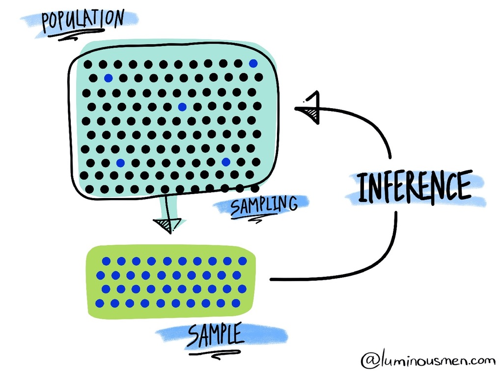
Kluczowe pojęcia (w skrócie)
Schemat:Pytanie badawcze → Estymanda (co mierzymy w populacji) → Parametr (prawdziwa, nieznana wartość) → Estymator (reguła z próby) → Estymata/oszacowanie (konkretna liczba z Twoich danych)
Co chcemy poznać:
Estymanda — wielkość w populacji, którą chcemy poznać (formalny cel), a nie samo zdanie-pytanie. Przykład: „Średni wiek przy pierwszym porodzie w Polsce w 2023 r.”
Parametr(\theta) — prawdziwa, ale nieznana wartość estymandy w populacji (stała, nie losowa). Przykład: Rzeczywista średnia \mu = 29{,}4 roku życia.
Jak to szacujemy (3 kroki):
Statystyka z próby — dowolna funkcja danych z próby (reguła), np. \displaystyle \bar{X}=\frac{1}{n}\sum_{i=1}^n X_i
Estymator — ta statystyka wybrana do oszacowania konkretnego parametru (z definicji zależy od losowej próby, więc jest losowa). Przykład: Używamy \bar{X} jako estymatora \mu.
Estymata / oszacowanie(\hat\theta) — konkretna liczba po zastosowaniu estymatora do Twoich danych (x_1,\dots,x_n). Przykład:\hat\mu = \bar{x} = 29{,}1 roku.
Analogia:
Statystyka = narzędzie → Estymator = narzędzie wybrane do celu → Estymata = efekt pracy narzędzia (konkretny wynik)
Popularne estymatory
Parametr populacji (cel)
Estymator (statystyka)
Wzór
Uwaga
Średnia populacji \mu
Średnia z próby
\bar X=\frac{1}{n}\sum_{i=1}^n X_i
Estymator nieobciążony. Estymator \bar X jest zmienną losową; konkretna wyliczona wartość (np. \bar x = 5{,}2) nazywa się oszacowaniem.
Proporcja/frakcja w populacji p
Proporcja/frakcja z próby
\hat p=\frac{K}{n}, gdzie K=\sum_{i=1}^n Y_i dla Y_i\in\{0,1\}
Równoważne \bar Y przy kodowaniu wyników jako 0/1. Tutaj K zlicza liczbę sukcesów w n próbach.
Wariancja populacji \sigma^2
Wariancja z próby
s^2=\frac{1}{n-1}\sum_{i=1}^n (X_i-\bar X)^2
Dzielnik n-1 (korekta Bessela) czyni ten estymator nieobciążonym dla \sigma^2. Użycie n dałoby estymator obciążony.
Każdy estymator jest statystyką, ale nie każda statystyka jest estymatorem — dopóki nie przypiszesz jej konkretnego celu (estymandy), jest „po prostu” statystyką.
Błąd systematyczny (bias) — czy nasza metoda daje prawdziwe wyniki „średnio”?
Wyobraź sobie, że chcemy poznać średni wzrost dorosłych Polaków (prawdziwa wartość: 172 cm). Pobieramy 100 różnych prób po 500 osób każda i dla każdej liczymy średnią.
Estymator nieobciążony: Te 100 średnich będzie się różnić (169 cm, 173 cm, 171 cm…), ale ich średnia będzie bliska 172 cm. Czasem przeszacowujemy, czasem niedoszacowujemy, ale nie ma systematycznego błędu.
Estymator obciążony: Gdybyśmy przypadkowo zawsze pomijali osoby powyżej 180 cm, wszystkie nasze 100 średnich byłyby za niskie (np. oscylowały wokół 168 cm). To błąd systematyczny.
Wariancja — jak bardzo różnią się wyniki między próbami?
Mamy dwie metody szacowania tego samego parametru. Obie „średnio” dają dobry wynik, ale:
Metoda A: z 10 prób otrzymujemy: 171, 172, 173, 171, 172, 173, 172, 171, 173, 172 cm
Metoda B: z 10 prób otrzymujemy: 165, 179, 168, 176, 171, 174, 169, 175, 167, 176 cm
Metoda A ma mniejszą wariancję — wyniki są bardziej skupione, przewidywalne. W praktyce wolisz metodę A, bo możesz być bardziej pewien pojedynczego wyniku.
Kluczowa zasada: Większa próba = mniejsza wariancja. Z próby 100 osób średnia będzie bardziej “skakać” niż z próby 1000 osób.
Średni błąd kwadratowy (MSE) — co jest ważniejsze: brak obciążenia czy stabilność?
Czasem mamy dylemat:
Estymator A: Nieobciążony (średnio 172 cm), ale bardzo niestabilny (wyniki od 160 do 184 cm)
Estymator B: Lekko obciążony (średnio 171 cm zamiast 172 cm), ale bardzo stabilny (wyniki od 169 do 173 cm)
MSE mówi: Estymator B jest lepszy — niewielkie systematyczne przeszacowanie o 1 cm jest mniej problematyczne niż ogromny rozrzut wyników w estymatorze A.
Efektywność — który nieobciążony estymator wybrać?
Masz dane o dochodach 500 osób. Chcesz poznać „typowy” dochód. Dwie możliwości:
Średnia arytmetyczna: zazwyczaj daje wyniki w zakresie 4800–5200 zł
Mediana: daje wyniki w zakresie 4500–5500 zł
Jeśli obie metody są nieobciążone, wybierz tę o mniejszym rozrzucie (średnia jest bardziej efektywna dla danych z rozkładu normalnego).
Przykład Myślenia Statystycznego
Władze uniwersytetu rozważają udostępnienie biblioteki całodobowo. Administracja potrzebuje odpowiedzi na pytanie: Jaka część studentów popiera tę zmianę?
Note
Sytuacja idealna: Zapytanie wszystkich 20 000 studentów → Uzyskanie dokładnej odpowiedzi (parametr \theta) Sytuacja rzeczywista: Ankietowanie 100 studentów → Uzyskanie oszacowania (\hat{\theta}) z niepewnością
Obciążenie vs. Błąd Losowy
Błąd statystyczny można rozłożyć na dwa główne komponenty: obciążenie (błąd systematyczny) i błąd losowy (nieprzewidywalna zmienność).
Obciążenie jest jak nieprawidłowo skalibrowana waga, która konsekwentnie pokazuje o 2 kg za dużo—każdy pomiar jest błędny w tym samym kierunku. To błąd systematyczny.
Błąd losowy to nieprzewidywalna zmienność w obserwacjach, jak:
Gracz w rzutki celujący w środek tarczy—każdy rzut ląduje w nieco innym miejscu z powodu drżenia ręki, prądów powietrza, drobnych różnic w ruchu mięśni
Mierzenie wzrostu osoby kilka razy i otrzymywanie 174,8 cm, 175,0 cm, 175,3 cm—małe fluktuacje wynikające ze zmiany postawy, oddychania, sposobu odczytu skali i naturalnych wahań ciała
Model pogody, który czasem przewiduje o 2°C za dużo, czasem o 1°C za mało, czasem trafnie
Sondaże opinii publicznej pokazujące 52%, 49%, 51% poparcia w różnych badaniach—każda losowa próba daje nieco inne wyniki, ale skupiają się wokół prawdziwej wartości
Błąd losowy mierzymy wariancją — średnią kwadratów odchyleń obserwacji od średniej. Pokazuje ona, jak duży jest rozrzut wyników (np. prognoz) wokół średniej.
Obrazowe porównanie: Wyobraź sobie, że prosisz pięcioro znajomych, by oszacowali, ile cukierków jest w słoiku. Każdy poda inną liczbę — to efekt przypadku — ale odpowiedzi będą się wahać wokół wartości prawdziwej, a nie wszystkie odchylą się w tę samą stronę.
Błąd systematyczny (bias) w sondażach: to nieprzypadkowe odchylenie wyników, gdy sposób zbierania danych faworyzuje jedne grupy, a pomija inne.
Ankietowanie wyłącznie na siłowni o 6:00 rano sprawi, że konsekwentnie przeszacujesz udział osób dbających o zdrowie i wcześnie wstających, a zaniżysz udział pracujących na nocne zmiany czy rodziców małych dzieci. Sondaż jest „zepsuty” w przewidywalny sposób.
Zliczanie tylko odpowiedzi osób odbierających połączenia z nieznanych numerów spowoduje, że systematycznie pominiesz tych — zwłaszcza młodszych — którzy filtrują połączenia.
Krótko: wariancja opisuje rozrzut (błąd losowy), a bias — przesunięcie w określoną stronę (błąd systematyczny).
Kluczowa różnica: Uśrednianie większej liczby obserwacji zmniejsza błąd losowy, ale nigdy nie naprawia obciążenia. Nie można wyeliminować błędu systematycznego przez uśrednianie—ani nieprawidłowo skalibrowanej wagi, ani stronniczej metody próbkowania!
Dwa Podejścia do Tych Samych Danych
Załóżmy, że przeprowadzono ankietę wśród 100 losowo wybranych studentów i stwierdzono, że 60 z nich popiera całodobowe otwarcie biblioteki.
❌ Bez Myślenia Statystycznego
“60 ze 100 studentów odpowiedziało twierdząco.”
Wniosek: “Dokładnie 60% wszystkich studentów popiera zmianę.”
Decyzja: “Ponieważ przekracza to 50%, mamy wyraźne poparcie większości.”
Problem: Ignorowanie faktu, że inna próba mogłaby dać wynik 55% lub 65%
✅ Z Zastosowaniem Myślenia Statystycznego
“60 ze 100 studentów odpowiedziało twierdząco.”
Wniosek: “Szacujemy poparcie na poziomie 60% z marginesem błędu ±10 pp.”
Decyzja: “Prawdziwe poparcie prawdopodobnie mieści się między 50% a 70% — potrzebujemy większej próby dla pewności większościowego poparcia.”
Przewaga: Uznanie niepewności prowadzi do lepszych decyzji
Jak wielkość próby wpływa na precyzję:
Wielkość próby
Obserwowany wynik
Błąd losowy oszacowania
(95%) “przedział wiarygodnych wartości”
Interpretacja
n = 100
60%
±10 p.p.
50% do 70%
Niepewność co do większości
n = 400
60%
±5 p.p.
55% do 65%
Prawdopodobna większość
n = 1000
60%
±3 p.p.
57% do 63%
Wyraźna większość
n = 1600
60%
±2,5 p.p.
57,5% do 62,5%
Silna większość
n = 10 000
60%
±1 p.p.
59% do 61%
Bardzo precyzyjne oszacowanie
Zasada malejących korzyści: Zauważ, że czterokrotne zwiększenie próby ze 100 do 400 zmniejsza błąd oszacowania o połowę, ale zwiększenie z 1600 do 10 000 (wzrost 6,25-krotny) redukuje go tylko o 1,5 punktu procentowego. Aby zmniejszyć błąd oszacowania o połowę, należy zwiększyć wielkość próby czterokrotnie.
Dlatego większość sondaży zatrzymuje się na około 1000–1500 respondentach—dalszy wzrost precyzji rzadko uzasadnia dodatkowe koszty i nakład pracy.
Wielkość próby a niepewność (błąd losowy)
Załóżmy, że pobieramy próbę losową o liczebności n=1000 wyborców i obserwujemy \hat p = 0,55 (np. 55% poparcia dla kandydata w nadchodzących wyborach—550 na 1000 respondentów). Wówczas:
Naszym najlepszym punktowym oszacowaniem (estymacja punktowa) proporcji w populacji jest \hat p = 0,55.
Typowy „przedział wiarygodnych wartości” (przedział ufności dla poziomu ufności 95\%) wokół \hat p można aproksymować jako \hat p \pm \text{Błąd losowy (Margin of Error, margines błędu)}, czyli:
\hat p \;\pm\; 2\sqrt{\frac{\hat p(1-\hat p)}{n}}
\;=\;
0,55 \;\pm\; 2\sqrt{\frac{0,55\cdot 0,45}{1000}}
\approx
0,55 \pm 0,031,
co daje w przybliżeniu przedział (estymacja przedziałowa) od 52\% do 58\% (około \pm 3,1 punktu procentowego).
Uwaga: Współczynnik 2 jest wygodnym zaokrągleniem wartości 1,96, czyli tzw. wartości krytycznej z rozkładu normalnego standardowego dla poziomu ufności 95%.
Szerokość tego przedziału maleje w przewidywalny sposób wraz z wielkością próby:
\text{Błąd losowy oszacowania} \;\propto\; \frac{1}{\sqrt{n}}.
Na przykład, zwiększenie n z 1000 do 4000 zmniejsza błąd oszacowania mniej więcej o połowę (z \pm 3,1\% do \pm 1,6\%).
Note
Podstawowa zasada: Statystyka nie eliminuje niepewności — pomaga nam ją mierzyć, zarządzać nią i skutecznie komunikować.
Historyczny przykład: sondaż Literary Digest z 1936 roku
W 1936 roku magazyn Literary Digest przeprowadził jeden z największych sondaży w historii — wysłał miliony ankiet i zebrał około 2,4 miliona odpowiedzi. Mimo ogromnej liczby uczestników, przewidywania okazały się całkowicie błędne.
Kandydat
Prognoza
Wynik rzeczywisty
Błąd
Landon
57%
36,5%
≈20 p.p.
Roosevelt
43%
60,8%
≈18 p.p.
Co poszło nie tak?
Ogromna liczba odpowiedzi nie pomogła, bo sondaż był obciążony systematycznym błędem, a nie błędem losowym.
Błąd systematyczny a błąd losowy
Wyobraź sobie wagę łazienkową, która pokazuje zawsze +2,3 kg za dużo:
Błąd losowy (bez stronniczości): za każdym razem stajesz trochę inaczej, więc waga pokazuje np. 68,0–68,5 kg. Średnia z wielu pomiarów da prawidłowy wynik (≈68 kg). Im więcej pomiarów, tym mniejsze wahania.
Błąd systematyczny (stronniczość): waga jest źle wyzerowana i zawsze dodaje 2,3 kg. Nieważne, czy zważysz się raz, czy tysiąc razy — zawsze będzie ok. 70,3 kg, czyli dokładnie błędny wynik.
Tak właśnie było z Literary Digest: ich „instrument pomiarowy” — sposób zbierania opinii — był źle skalibrowany. Miliony błędnych odpowiedzi dały tylko fałszywe poczucie pewności.
Skąd wziął się błąd?
Dwa różne źródła stronniczości działały w tym samym kierunku — na korzyść Alfa Landona:
Błąd pokrycia (doboru) — kogo w ogóle można było objąć próbą
Wykorzystano listy: abonentów telefonów, właścicieli samochodów i prenumeratorów magazynu.
W czasie Wielkiego Kryzysu te grupy były zamożniejsze niż przeciętny wyborca.
Skutek: systematyczne niedoszacowanie wyborców o niższych dochodach, popierających Roosevelta.
Błąd braku odpowiedzi (nonresponse bias) — kto zdecydował się odesłać ankietę
Odpowiedziało tylko ok. co czwarte zaproszenie (≈24%).
Osoby bardziej zaangażowane politycznie — częściej przeciwnicy Roosevelta — chętniej odpowiadały.
Oba błędy działały w tym samym kierunku, tworząc ogromne zniekształcenie, którego żadna wielkość próby nie mogła naprawić.
Dlaczego wielkość próby nie poprawiła oszacowania
Zebranie 2,4 miliona odpowiedzi z błędnej listy to jak zważyć cały kraj na wadze z błędną kalibracją.
Gdyby była to losowa próba, maksymalny teoretyczny margines błędu (zakładając 95% poziom ufności) wyniósłby: \text{MoE}_{95\%} \approx 1.96\sqrt{\frac{0.25}{2{,}400{,}000}} \approx \pm 0.06 \text{ percentage points} — malutki.
Wzór ten opisuje tylko błąd losowy, a nie stronniczość.
Rzeczywisty błąd sięgnął 18–20 punktów procentowych — kilkaset razy więcej.
Wniosek:Dokładność bez reprezentatywności nic nie znaczy. Ogromna, ale błędna próba może być gorsza niż mała, dobrze dobrana.
Współczesne sondaże: mniejsze, ale “mądrzejsze”
Problem Literary Digest na zawsze zmienił metody badań opinii:
Dobór losowy (probability sampling): każdy wyborca ma znane, niezerowe prawdopodobieństwo znalezienia się w próbie.
Ważenie i kalibracja: koryguje nad- lub niedoreprezentację niektórych grup.
Podejście „total survey error”: uwzględnia błędy pokrycia, braku odpowiedzi, pomiaru i przetwarzania, a nie tylko błąd losowy.
Sedno: liczy się nie to, ile osób zbadamy, lecz kogo i jak.
2.5 Zrozumieć losowość
Eksperyment losowy (random experiment) to dowolny proces, którego wyniku nie można przewidzieć z pewnością, na przykład rzut monetą lub kostką do gry.
Wynik (outcome) to pojedynczy możliwy rezultat tego eksperymentu — na przykład wypadnięcie „orła” lub wyrzucenie „5”.
Przestrzeń próbkowa (lub przestrzeń zdarzeń elementarnych) to zbiór wszystkich możliwych wyników eksperymentu losowego. Zazwyczaj oznaczana jest symbolem S lub Ω (omega).
Zdarzenie (event) to zbiór jednego lub więcej wyników, którymi jesteśmy zainteresowani; może to być zdarzenie elementarne (jak wyrzucenie dokładnie 3) lub zdarzenie złożone (jak wyrzucenie liczby parzystej, które obejmuje wyniki 2, 4 i 6).
Prawdopodobieństwo (probability) to sposób mierzenia, jak prawdopodobne jest zajście czegoś. Jest to liczba między 0 a 1 (lub 0% a 100%), która reprezentuje szansę wystąpienia zdarzenia.
Rozkład prawdopodobieństwa to funkcja/reguła matematyczna opisująca prawdopodobieństwo wystąpienia różnych możliwych wyników w eksperymencie losowym.
Jeśli coś ma prawdopodobieństwo 0, jest niemożliwe — nigdy się nie wydarzy. Jeśli coś ma prawdopodobieństwo 1, jest pewne — na pewno się wydarzy. Większość rzeczy mieści się gdzieś pomiędzy.
Na przykład, gdy rzucasz uczciwą monetą, prawdopodobieństwo wypadnięcia orła wynosi 0,5 (czyli 50%), ponieważ są dwa równie prawdopodobne wyniki, a orzeł jest jednym z nich.
Prawdopodobieństwo pomaga nam nadać sens niepewności i losowości w świecie.
W statystyce losowość (randomness) to uporządkowany sposób opisywania niepewności. Chociaż każdy pojedynczy wynik jest nieprzewidywalny, stabilne wzorce (mówiąc formalniej: rozkłady empiryczne wyników zbiegają do rozkładów prawdopodobieństwa) pojawiają się po wielu powtórzeniach.
Przykład: Rzut uczciwą monetą:
Pojedynczy rzut: Całkowicie nieprzewidywalny — nie wiesz, czy wypadnie orzeł czy reszka
100 rzutów: Otrzymasz wynik bliski 50% orłów (może 48 lub 53)
10 000 rzutów: Prawie na pewno bardzo blisko 50% orłów (być może 49,8%)
To samo dotyczy kostki: nie możesz przewidzieć następnego rzutu, ale rzuć 600 razy, a każda liczba (1-6) pojawi się około 100 razy. Ta przewidywalna długoterminowa regularność wynikająca z nieprzewidywalnych pojedynczych zdarzeń to esencja statystycznej losowości.
Rodzaje losowości
Losowość epistemiczna a ontologiczna:
Losowość epistemiczna (epistemic randomness) (wynikająca z niepełnej wiedzy): Traktujemy wynik jako losowy, ponieważ nie wszystkie czynniki determinujące są obserwowane lub warunki nie są kontrolowane. Sam system jest deterministyczny — podlega stałym regułom — ale brakuje nam informacji potrzebnych do przewidzenia wyniku.
Rzut monetą: Trajektoria monety jest całkowicie rządzona mechaniką klasyczną. Gdybyśmy znali dokładną pozycję początkową, siłę, moment pędu, opór powietrza i właściwości powierzchni, moglibyśmy teoretycznie przewidzieć, czy moneta wyląduje na orle czy reszce. „Losowość” istnieje tylko dlatego, że nie możemy zmierzyć tych warunków z wystarczającą precyzją.
Odpowiedzi w sondażu: Odpowiedź danej osoby na pytanie ankietowe jest zdeterminowana przez jej przekonania, doświadczenia i kontekst, ale nie mamy dostępu do tego pełnego stanu psychologicznego, więc modelujemy to jako proces losowy.
Błąd pomiaru: Ograniczona precyzja instrumentu oznacza, że „prawdziwa” wartość istnieje, ale obserwujemy ją z niepewnością.
Losowość ontologiczna (ontological randomness) (wewnętrzna nieokreśloność): Nawet pełna znajomość wszystkich warunków nie usuwa niepewności co do wyniku. Losowość jest fundamentalna dla samej natury rzeczywistości, a nie tylko luką w naszej wiedzy.
Rozpad promieniotwórczy: Dokładny moment, w którym dany atom ulegnie rozpadowi, jest fundamentalnie nieprzewidywalny. Mechanika kwantowa podaje nam tylko rozkład prawdopodobieństwa, a nie dokładny czas.
Pomiary kwantowe: Wynik pomiaru pozycji lub spinu cząstki kwantowej jest z natury probabilistyczny, nie jest określony przez ukryte zmienne, których po prostu jeszcze nie odkryliśmy.
Paradoks rzutu monetą
Chociaż traktujemy rzuty monetą jako dające losowe wyniki 50-50, badania matematyka Persi Diaconisa wykazały, że przy użyciu mechanicznej maszyny do rzucania monetą, która precyzyjnie kontroluje warunki początkowe, można w sposób powtarzalny przechylić wynik w stronę wybranej strony. To potwierdza, że rzuty monetą są losowe epistemicznie, a nie ontologicznie — pozorna losowość wynika z naszej niezdolności do kontrolowania i mierzenia warunków, a nie z jakiejkolwiek fundamentalnej nieokreśloności w fizyce.
Pojęcia pokrewne
Losowość a przypadkowość: Statystyczna losowość ma strukturę matematyczną i podlega prawom prawdopodobieństwa — jest to uporządkowana niepewność. Przypadkowość sugeruje kompletny nieład bez leżących u podstaw wzorców czy reguł.
Chaos deterministyczny (deterministic chaos): Punkt pośredni między doskonałą przewidywalnością a losowością. Chaos odnosi się do systemów deterministycznych (podlegających stałym, znanym regułom), które wykazują ekstremalną wrażliwość na warunki początkowe (sensitivity to initial conditions), co czyni przewidywanie długoterminowe niemożliwym w praktyce.
Pomyśl o chaosie jak o automacie do gry w flipera (pinball machine), z efektem motyla:
Znasz wszystkie reguły doskonale — fizykę zderzeń, tarcie, grawitację
System jest całkowicie deterministyczny: wypuść kulkę dokładnie z tego samego miejsca z dokładnie tą samą siłą, a otrzymasz dokładnie ten sam wynik za każdym razem
Ale: różnica 0,01 milimetra w pozycji startowej sprawia, że kulka uderza w inne odbijaki, co kumuluje się z każdym zderzeniem, aż finalny wynik jest zupełnie inny
To jest efekt motyla (butterfly effect): maleńkie zaburzenia w warunkach początkowych rosną wykładniczo w czasie
Klasyczne przykłady chaosu deterministycznego:
Systemy pogodowe: Edward Lorenz odkrył, że modele atmosferyczne są tak wrażliwe, że motyl trzepoczący skrzydłami w Brazylii mógłby teoretycznie zmienić to, czy tornado powstanie w Teksasie tygodnie później. Dlatego prognozy pogody są wiarygodne na dni, ale nie na miesiące.
Orbity planet: Choć stabilne w skali ludzkiego życia, dynamika Układu Słonecznego jest chaotyczna w skali milionów lat. Nie możemy przewidzieć dokładnej pozycji planet w odległej przyszłości, mimo że znamy prawa grawitacji doskonale.
Podwójne wahadło: Wypuść je pod nieznacznie innym kątem, a po kilku wahnięciach ruch staje się zupełnie inny.
Chaos a losowość epistemiczna — kluczowe rozróżnienie:
Oba wiążą się z nieprzewidywalnością wynikającą z ograniczonej wiedzy, ale różnią się w istotny sposób:
Aspekt
Losowość epistemiczna
Chaos deterministyczny
Reguły znane?
Często tak
Tak, całkowicie
Stan obecny znany?
Nie (lub niedokładnie)
Nie (lub niedokładnie)
Co powoduje nieprzewidywalność?
Brakująca informacja o obecnym stanie
Wykładnicze wzmocnienie drobnych błędów pomiaru
Czy doskonała informacja pomoże?
Tak — poznanie stanu eliminuje niepewność
Jedynie krótkoterminowo — błędy narastają ponownie
Przykład dla wyjaśnienia:
Losowość epistemiczna (zakryta karta): Karta to już siódemka kier. Nie zmienia się ani nie ewoluuje. Po prostu nie wiesz jeszcze, która to karta. Odwróć ją, a niepewność znika całkowicie i na stałe.
Chaos (pogoda za 3 tygodnie): Nawet jeśli zmierzysz obecne warunki atmosferyczne z niezwykłą precyzją, drobne błędy (pomiar do 6 miejsc dziesiętnych zamiast 20) kumulują się w czasie. Możesz dobrze przewidywać przez 5 dni, ale w 3. tygodniu twoja prognoza jest bezużyteczna.
Intuicja
Chaos jest deterministyczny, ale nieprzewidywalny. Losowość epistemiczna jest deterministyczna, ale nieznana. Losowość ontologiczna jest fundamentalnie niezdeterminowana. Praktyka statystyczna traktuje wszystkie trzy jako „losowe”, ale zrozumienie źródła nieprzewidywalności pomaga nam wiedzieć, kiedy więcej informacji może pomóc (epistemiczna), kiedy pomaga tymczasowo, ale nie długoterminowo (chaos), i kiedy nie może pomóc wcale (ontologiczna).
Entropia (entropy): Miara nieuporządkowania lub niepewności w systemie. Wysoka entropia oznacza wysoką nieprzewidywalność lub wiele możliwych mikrostanów; niska entropia oznacza wysoki porządek i niską niepewność. W teorii informacji i statystyce entropia kwantyfikuje ilość niepewności w rozkładzie prawdopodobieństwa — bardziej rozproszone rozkłady mają wyższą entropię.
2.6 Populacje i próby
Zrozumienie rozróżnienia między populacjami a próbami jest kluczowe dla właściwej analizy statystycznej.
Populacja (Population)
Populacja to kompletny zbiór jednostek, obiektów lub pomiarów, o których chcemy wyciągnąć wnioski. Kluczowe słowo to „kompletny” — populacja obejmuje każdego pojedynczego członka grupy, którą badamy.
Przykłady populacji w demografii:
Wszyscy mieszkańcy Polski na dzień 1 stycznia 2024: Obejmuje każdą osobę mieszkającą w Polsce w tym konkretnym dniu — około 38 milionów osób.
Wszystkie urodzenia w Szwecji w 2023 roku: Każde dziecko urodzone w granicach Szwecji w tym roku kalendarzowym — około 100 000 urodzeń.
Wszystkie gospodarstwa domowe w Tokio: Każda jednostka mieszkalna, gdzie ludzie mieszkają, gotują i śpią — około 7 milionów gospodarstw.
Wszystkie zgony z powodu COVID-19 na świecie w 2020 roku: Każdy zgon, gdzie COVID-19 został wymieniony jako przyczyna — kilka milionów zgonów.
Populacje mogą być:
Skończone (Finite): Mające policzalną liczbę członków (wszyscy obecni obywatele Polski, wszytkie gminy w Polsce w 2024 r.)
Nieskończone (Infinite): Teoretyczne lub niepoliczalnie duże (wszystkie możliwe przyszłe urodzenia, wszystkie możliwe rzuty monetą)
Stałe (Fixed): Zdefiniowane w określonym punkcie czasu (wszyscy mieszkańcy w dniu spisu)
Dynamiczne (Dynamic): Zmieniające się w czasie (populacja miasta doświadczająca urodzeń, zgonów i migracji codziennie)
Próba (Sample)
Próba to podzbiór populacji, który jest faktycznie obserwowany lub mierzony. Badamy próby, ponieważ badanie całych populacji jest często niemożliwe, niepraktyczne lub niepotrzebne.
Dlaczego używamy prób:
Praktyczna niemożliwość: Wyobraź sobie testowanie każdej osoby w Chinach na obecność pewnej choroby. Zanim skończyłbyś testować 1,4 miliarda ludzi, sytuacja chorobowa całkowicie by się zmieniła, a niektórzy ludzie testowani wcześnie wymagaliby ponownego testowania.
Względy kosztowe: Amerykański spis powszechny z 2020 roku kosztował około 16 miliardów dolarów. Przeprowadzanie tak kompletnych wyliczeń często byłoby zbyt kosztowne.
Ograniczenia czasowe: Decydenci często potrzebują informacji szybko. Badanie ankietowe 10 000 osób można ukończyć w ciągu tygodni, podczas gdy spis wymaga lat planowania, wykonania i przetwarzania.
Pomiar destrukcyjny: Niektóre pomiary niszczą to, co jest mierzone. Testowanie żywotności żarówek wymaga użycia prób.
Większa dokładność: Co zaskakujące, próby mogą czasem być dokładniejsze niż badania pełne. Z próbą można pozwolić sobie na lepsze szkolenie ankieterów, bardziej staranne zbieranie danych i dokładniejsze kontrole jakości.
Przykład próby vs. populacja:
Powiedzmy, że chcemy poznać średnią wielkość gospodarstwa domowego w Warszawie:
Populacja: Wszystkie 800 000 gospodarstw domowych w Warszawie
Podejście spisowe: Próba skontaktowania się z każdym gospodarstwem (drogie, czasochłonne, niektóre zostaną pominięte)
Podejście próbkowe: Losowo wybrać 5000 gospodarstw, dokładnie zmierzyć ich wielkości i użyć tego do oszacowania średniej dla wszystkich gospodarstw
Wynik: Próba może znaleźć średnią 2,43 osób na gospodarstwo z marginesem błędu ±0,05, co oznacza, że jesteśmy pewni, że prawdziwa średnia populacji mieści się między 2,38 a 2,48
Przegląd Metod Doboru Próby
Dobór próby polega na wyborze podzbioru populacji w celu oszacowania jej charakterystyk. Operat losowania (lista, z której losujemy) powinien idealnie zawierać każdego członka dokładnie raz. Problemy operatu: niedobór pokrycia, nadmiar pokrycia, duplikacja i grupowanie.
Prosty Dobór Losowy (SRS): Każda możliwa próba o rozmiarze n ma równe prawdopodobieństwo wyboru (losowanie bez zwracania). Złoty standard metod probabilistycznych.
Definicja formalna: Każda z \binom{N}{n} możliwych prób ma prawdopodobieństwo \frac{1}{\binom{N}{n}}.
Prawdopodobieństwo włączenia jednostki:
Pytanie: W ilu próbach znajduje się konkretna osoba (np. student Jan)?
Jeśli Jan jest już w próbie (to ustalone), musimy dobrać jeszcze n-1 osób z pozostałych N-1 osób (wszyscy oprócz Jana).
Liczba prób zawierających Jana: \binom{N-1}{n-1}
Prawdopodobieństwo:
P(\text{Jan w próbie}) = \frac{\text{próby z Janem}}{\text{wszystkie próby}} = \frac{\binom{N-1}{n-1}}{\binom{N}{n}} = \frac{n}{N}
Przykład liczbowy: N=5 osób {A,B,C,D,E}, losujemy n=3. Wszystkie próby: \binom{5}{3}=10. Próby z osobą A: {ABC, ABD, ABE, ACD, ACE, ADE} = \binom{4}{2}=6 prób. Prawdopodobieństwo: 6/10 = 3/5 = n/N ✓
Dobór Systematyczny: Wybór co k-tego elementu, gdzie k = N/n (interwał próbkowania).
Jak to działa: Losujemy punkt startowy r z \{1, 2, ..., k\}, następnie wybieramy: r, r+k, r+2k, r+3k, ...
Przykład: N=1000, n=100, więc k=10. Jeśli r=7, to wybieramy: 7, 17, 27, 37, …, 997.
Zalety: Bardzo prosty, zapewnia równomierne pokrycie populacji.
Problem periodyczności: Jeśli lista ma wzorzec powtarzający się co k elementów, próba może być silnie obciążona.
Przykład (źle): Lista mieszkań: 101, 102, 103, 104 (narożne), 201, 202, 203, 204 (narożne), … Jeśli k=4, możemy wylosować tylko mieszkania narożne!
Przykład (źle): Dane produkcyjne dzienne z 7-dniowym cyklem. Jeśli k=7, możemy wylosować tylko poniedziałki.
Przykład (dobrze): Lista alfabetyczna nazwisk - zwykle brak periodyczności.
Dobór Warstwowy: Podział populacji na jednorodne warstwy (np. płeć, region), niezależne losowanie w każdej warstwie. Zapewnia reprezentację podgrup i może znacznie zwiększyć precyzję. Typy alokacji: proporcjonalna, optymalna (Neymana) lub równa.
Dobór Klastrowy (Skupieniowy): Wybór całych grup (klastrów) zamiast pojedynczych jednostek. Efektywny kosztowo dla populacji rozproszonych geograficznie (np. losowanie szkół zamiast uczniów), ale zazwyczaj mniej precyzyjny niż SRS (efekt schematu: DEFF = Wariancja(klaster)/Wariancja(SRS)). Może być jedno- lub wielostopniowy.
Dobór Dogodny: Wybór według łatwości dostępu (np. przechodnie w centrum miasta). Przydatny w badaniach pilotażowych/eksploracyjnych, ale prawdopodobne poważne obciążenie selekcji.
Dobór Celowy/Ekspercki: Świadomy wybór przypadków typowych, ekstremalnych lub bogatych informacyjnie. Wartościowy w badaniach jakościowych i badaniu rzadkich populacji.
Dobór Kwotowy: Dopasowanie proporcji populacji (np. 50% kobiet), ale bez losowego wyboru. Szybki i tani, ale ukryte obciążenie selekcji i brak możliwości obliczenia błędu próbkowania.
Dobór Kuli Śnieżnej: Uczestnicy rekrutują innych ze swoich sieci. Niezbędny dla trudno dostępnych populacji (osoby używające narkotyków, nielegalni imigranci), ale obciążony w stronę dobrze połączonych jednostek.
Podstawowa Zasada: Dobór probabilistyczny umożliwia prawidłowe wnioskowanie statystyczne i obliczenie błędu próbkowania; metody nieprobabilistyczne mogą być konieczne ze względów praktycznych lub etycznych, ale ograniczają możliwość uogólnienia wyników na całą populację.
Superpopulacja i Proces Generowania Danych (DGP) (*)
Superpopulacja (Superpopulation)
Superpopulacja to teoretyczna nieskończona populacja, z której twoja skończona populacja jest traktowana jako jedna losowa próba.
Pomyśl o tym w trzech poziomach:
Superpopulacja: Nieskończony zbiór możliwych wartości (teoretyczny)
Populacja skończona (finite population): Rzeczywista populacja, którą teoretycznie możesz spisać (np. wszystkie 50 stanów USA, wszystkie 10 000 firm w branży)
Próba (sample): Podzbiór, który faktycznie obserwujesz (np. 30 stanów, 500 firm)
Dlaczego potrzebujemy tego pojęcia?
Rozważmy 50 stanów USA. Możesz zmierzyć stopę bezrobocia dla wszystkich 50 stanów — pełny spis, bez próbkowania. Ale nadal chcesz:
Sprawdzić, czy bezrobocie jest powiązane z poziomem wykształcenia
Przewidzieć przyszłoroczne stopy bezrobocia
Określić, czy różnice między stanami są „istotne statystycznie”
Bez koncepcji superpopulacji utkniesz — masz wszystkie dane, więc co pozostaje do wnioskowania? Odpowiedź: traktuj tegoroczne 50 wartości jako jedno losowanie z nieskończonej superpopulacji możliwych wartości, które mogłyby wystąpić w podobnych warunkach.
Reprezentacja matematyczna:
Wartość populacji skończonej: Y_i (stopa bezrobocia stanu i)
Model superpopulacji: Y_i = \mu + \epsilon_i gdzie \epsilon_i \sim (0, \sigma^2)
50 zaobserwowanych wartości to jedna realizacja tego procesu
Proces Generowania Danych (Data Generating Process): Prawdziwa Recepta
Proces Generowania Danych (DGP) to rzeczywisty mechanizm, który tworzy twoje dane — włączając wszystkie czynniki, relacje i elementy losowe.
Intuicyjny przykład: Załóżmy, że wyniki testów uczniów są naprawdę generowane przez:
Twój model jest prostszy niż rzeczywistość. Brakuje ci zmiennych (sen, stres, śniadanie), więc twoje oszacowania mogą być obciążone (biased). Składnik u_i zawiera wszystko, co pominąłeś.
Intuicja: Nigdy nie znamy prawdziwego DGP. Nasze modele statystyczne są zawsze przybliżeniami, próbującymi uchwycić najważniejsze części nieznanej, złożonej prawdy.
Dwa Podejścia do Wnioskowania Statystycznego
Analizując dane, szczególnie z badań czy prób, możemy przyjąć dwa filozoficzne podejścia:
1. Wnioskowanie Oparte na Schemacie (Design-Based Inference)
Filozofia: Wartości populacji są stałymi liczbami. Losowość pochodzi TYLKO z tego, które jednostki wylosowaliśmy.
Skupienie: Jak wybraliśmy próbę (losowanie proste, warstwowe, gniazdowe itp.)
Przykład: Średni dochód hrabstw Kalifornii jest stałą liczbą. Losujemy 10 hrabstw. Nasza niepewność wynika z tego, które 10 losowo wybraliśmy.
Bez modeli: Nie zakładamy nic o rozkładzie wartości populacji
2. Wnioskowanie Oparte na Modelu (Model-Based Inference)
Filozofia: Same wartości populacji są realizacjami z pewnego modelu probabilistycznego (superpopulacji)
Skupienie: Model statystyczny generujący wartości populacji
Przykład: Dochód każdego hrabstwa Kalifornii jest losowany z: Y_i = \mu + \epsilon_i gdzie \epsilon_i \sim N(0, \sigma^2)
Wymagane modele: Przyjmujemy założenia o tym, jak dane zostały wygenerowane
Które jest lepsze?
Duże populacje, dobre próby losowe: Podejście oparte na schemacie działa dobrze
Małe populacje (jak 50 stanów): Często konieczne podejście modelowe
Pełne spisanie: Tylko podejście modelowe umożliwia wnioskowanie
Współczesna praktyka: Często łączy oba podejścia
Praktyczny Przykład: Analiza Wydatków Stanowych na Edukację
Załóżmy, że zbierasz wydatki na edukację per uczeń dla wszystkich 50 stanów USA.
Bez myślenia superpopulacyjnego:
Masz wszystkie 50 wartości — to wszystko
Średnia to średnia, bez niepewności
Nie możesz testować hipotez ani tworzyć prognoz
Z myśleniem superpopulacyjnym:
Tegoroczne 50 wartości to jedna realizacja z superpopulacji
Testować, czy wydatki są powiązane z dochodem stanu (\beta \neq 0?)
Przewidywać przyszłoroczne wartości
Obliczać przedziały ufności
Intuicja: Nawet z kompletnymi danymi, ramy superpopulacji umożliwiają wnioskowanie statystyczne poprzez traktowanie obserwowanych wartości jako jednego możliwego wyniku z podstawowego procesu stochastycznego.
Podsumowanie
Superpopulacja: Traktuje twoją populację skończoną jako jedno losowanie z nieskończonej przestrzeni możliwości — niezbędne, gdy twoja populacja skończona jest mała lub całkowicie obserwowana
DGP: Prawdziwy (nieznany) proces tworzący twoje dane — twoje modele próbują go przybliżyć
2.7 Dane i rozkład danych (rozkład cechy/zmiennej)
Czym są dane?
Dane to zbiór faktów, obserwacji lub pomiarów, które gromadzimy, aby odpowiedzieć na pytania lub zrozumieć zjawiska. W statystyce i analizie danych, dane reprezentują informacje w ustrukturyzowanym formacie, który można analizować.
Punkty danych
Punkt danych to pojedyncza obserwacja lub pomiar w zbiorze danych. Na przykład, jeśli zmierzymy wzrost 5 uczniów, każdy pojedynczy pomiar wzrostu jest punktem danych.
Zmienne
Zmienna to cecha lub atrybut, który może przyjmować różne wartości w obserwacjach. Zmienne mogą być:
Kategoryczne (np. kolor, płeć, kraj)
Numeryczne (np. wiek, temperatura, dochód)
Rozkład danych
Rozkład danych opisuje, jakie wartości przyjmuje zmienna i jak często każda wartość występuje w zbiorze danych. Zrozumienie rozkładu pomaga nam dostrzec wzorce, tendencje centralne i zmienność w naszych danych.
Tabele rozkładu częstości
Tabela rozkładu częstości organizuje dane, pokazując każdą unikalną wartość (lub zakres wartości) oraz liczbę wystąpień:
Wartość
Częstość
Częstość względna
A
15
0,30 (30%)
B
25
0,50 (50%)
C
10
0,20 (20%)
Suma
50
1,00 (100%)
Ta tabela pozwala nam szybko zobaczyć, które wartości są najczęstste i zrozumieć ogólny wzorzec rozkładu.
Rodzaje i Formaty Zbiorów Danych
Dane Przekrojowe
Obserwacje na zmiennych (kolumny w bazie danych) zebrane w jednym punkcie czasowym dla wielu podmiotów:
Osoba
Wiek
Dochód
Wykształcenie
1
25
5000
Licencjat
2
35
7500
Magister
3
45
9000
Doktorat
Szeregi Czasowe
Obserwacje jednego podmiotu w kolejnych punktach czasowych:
Rok
PKB (w mld)
Stopa Bezrobocia
2018
20.580
3,9%
2019
21.433
3,7%
2020
20.933
8,1%
Dane Panelowe (Longitudinalne)
Obserwacje wielu podmiotów w czasie:
Kraj
Rok
PKB per capita
Długość życia
Polska
2018
32.794
76,7
Polska
2019
35.118
76,8
Niemcy
2018
46.194
81,9
Niemcy
2019
46.194
82,0
Dane Przekrojowo-Czasowe (TSCS)
Szczególny przypadek danych panelowych gdzie:
Liczba punktów czasowych > liczba podmiotów
Struktura podobna do danych panelowych
Często stosowane w ekonomii i politologii
Formaty Danych
Format Szeroki
Każdy wiersz to podmiot; kolumny to zmienne/punkty czasowe:
Kraj
PKB_2018
PKB_2019
DŻ_2018
DŻ_2019
Polska
32.794
35.118
76,7
76,8
Niemcy
46.194
46.194
81,9
82,0
Format Długi
Każdy wiersz to unikalna kombinacja podmiot-czas-zmienna:
Kraj
Rok
Zmienna
Wartość
Polska
2018
PKB per capita
32.794
Polska
2019
PKB per capita
35.118
Polska
2018
Długość życia
76,7
Polska
2019
Długość życia
76,8
Niemcy
2018
PKB per capita
46.194
Niemcy
2019
PKB per capita
46.194
Niemcy
2018
Długość życia
81,9
Niemcy
2019
Długość życia
82,0
Uwaga: Format długi jest zazwyczaj preferowany do:
Manipulacji danymi w R i Pythonie
Analiz statystycznych
Wizualizacji danych
Zrozumienie typów danych i rozkładów jest fundamentalne dla wyboru odpowiednich analiz i poprawnej interpretacji wyników.
Typy danych
Dane składają się z zebranych obserwacji lub pomiarów. Typ danych określa, jakie operacje matematyczne są wykonalne i jakie metody statystyczne mają zastosowanie.
Dane ilościowe
Dane ciągłe mogą przyjmować dowolną wartość w przedziale:
Przykłady:
Wiek: Może wynosić 25,5 lat, 25,51 lat, 25,514 lat (precyzja ograniczona tylko dokładnością narzędzia pomiarowego)
Wskaźnik masy ciała: 23,7 kg/m²
Współczynnik dzietności: 1,73 dzieci na kobietę
Gęstość zaludnienia: 4521,3 osoby na km²
Frekwencja wyborcza: 60%
Właściwości:
Można wykonywać wszystkie operacje arytmetyczne
Można obliczać średnie, odchylenia standardowe
Dane dyskretne mogą przyjmować tylko określone wartości:
Przykłady:
Liczba dzieci: 0, 1, 2, 3… (nie można mieć 2,5 dziecka)
Liczba małżeństw: 0, 1, 2, 3…
Wielkość gospodarstwa domowego: 1, 2, 3, 4… osób
Liczba wizyt u lekarza: 0, 1, 2, 3… rocznie
Wielkość okręgu wyborczego: 1, 2, 3, …
Dane jakościowe/kategorialne
Dane nominalne reprezentują kategorie bez naturalnego porządku:
Skala zgody: Zdecydowanie się nie zgadzam < Nie zgadzam się < Neutralny < Zgadzam się < Zdecydowanie się zgadzam
Uwaga: Interwały między kategoriami niekoniecznie są równe. „Odległość” od Złego do Przeciętnego zdrowia może nie równać się odległości od Dobrego do Doskonałego.
Częstość, Częstość Względna i Gęstość
Analizując dane, często interesuje nas, ile razy pojawia się każda wartość (lub przedział wartości). Prowadzi nas to do trzech powiązanych pojęć:
Częstość (bezwzględna) (frequency) to po prostu liczba wystąpień danej wartości lub kategorii w naszych danych. Jeśli 15 studentów uzyskało wyniki między 70-80 punktów na egzaminie, częstość dla tego przedziału wynosi 15.
Częstość względna (relative frequency) wyraża częstość jako proporcję lub procent całości. Odpowiada na pytanie: “Jaka część wszystkich obserwacji należy do tej kategorii?” Częstość względna obliczana jest jako:
\text{Częstość względna} = \frac{\text{Częstość}}{\text{Całkowita liczba obserwacji}}
Jeśli 15 ze 100 studentów uzyskało 70-80 punktów, częstość względna wynosi 15/100 = 0,15 lub 15%. Częstości względne zawsze sumują się do 1 (lub 100%), co czyni je użytecznymi do porównywania rozkładów o różnych liczebnościach próby.
Tip
Prawdopodobieństwo zdarzenia to liczba z przedziału od 0 do 1; im większe prawdopodobieństwo, tym bardziej prawdopodobne jest wystąpienie zdarzenia.
Gęstość (prawdopodobieństwo na jednostkę długości) mierzy, jak bardzo obserwacje są skoncentrowane na jednostkę pomiaru. Kiedy grupujemy dane ciągłe (takie jak czas lub stopa bezrobocia) w przedziały o różnych szerokościach, potrzebujemy gęstości, aby zapewnić uczciwe porównanie—szersze przedziały naturalnie zawierają więcej obserwacji po prostu dlatego, że są szersze, a nie dlatego, że wartości są tam bardziej skoncentrowane. Gęstość oblicza się jako:
Ta standaryzacja pozwala na uczciwe porównanie między przedziałami—szersze przedziały nie wydają się sztucznie ważniejsze tylko dlatego, że są szersze.
Gęstość jest szczególnie ważna dla zmiennych ciągłych, ponieważ zapewnia, że całkowite pole pod rozkładem równa się 1, co pozwala nam interpretować pola jako prawdopodobieństwa.
Częstość skumulowana (cumulative frequency) mówi nam, ile obserwacji znajduje się na danym poziomie lub poniżej niego.
Zamiast pytać “ile obserwacji jest w tej kategorii?”, częstość skumulowana odpowiada na pytanie “ile obserwacji jest w tej kategorii lub w kategoriach poniżej?”. Obliczana jest przez sumowanie wszystkich częstości od najniższej wartości do bieżącej wartości włącznie.
Podobnie, częstość względna skumulowana (cumulative relative frequency) wyraża to jako proporcję całości, odpowiadając na pytanie “jaki procent obserwacji znajduje się na tym poziomie lub poniżej?”. Na przykład, jeśli częstość względna skumulowana dla wyniku 70 wynosi 0,40, oznacza to, że 40% studentów uzyskało wynik 70 lub niższy.
Tablice Rozkładu (szereg rozdzielczy danych)
Tablica rozkładu częstości (frequency distribution table) organizuje dane, pokazując jak obserwacje rozkładają się między różnymi wartościami lub przedziałami. Oto przykład z wynikami egzaminów:
Przedział wyników
Częstość
Częstość względna
Częstość skumulowana
Częstość względna skumulowana
Gęstość
0-50
10
0,10
10
0,10
0,002
50-70
30
0,30
40
0,40
0,015
70-90
45
0,45
85
0,85
0,0225
90-100
15
0,15
100
1,00
0,015
Suma
100
1,00
-
-
-
Ta tablica pokazuje, że większość studentów uzyskała wyniki w przedziale 70-90, podczas gdy bardzo niewielu uzyskało wyniki poniżej 50 lub powyżej 90. Kolumny skumulowane pokazują nam, że 40% studentów uzyskało wyniki poniżej 70, a 85% poniżej 90.
Takie tablice są użyteczne dla szybkiego przeglądu danych przed przeprowadzeniem bardziej złożonych analiz.
Wizualizacja Rozkładów: Histogramy
Histogram to graficzna reprezentacja rozkładu częstości. Wyświetla dane używając słupków, gdzie:
Oś x pokazuje wartości lub przedziały (klasy, bins)
Oś y może pokazywać częstość, częstość względną lub gęstość
Wysokość każdego słupka reprezentuje liczbę, proporcję lub gęstość dla danego przedziału
Słupki stykają się ze sobą (brak przerw) dla zmiennych ciągłych
Wybór szerokości klas: Liczba i szerokość klas znacząco wpływa na wygląd histogramu. Zbyt mało klas ukrywa ważne wzorce, podczas gdy zbyt wiele klas tworzy “szum” i utrudnia dostrzeżenie wzorców.
W statystyce szum (noise) to niepożądana losowa zmienność, która przesłania wzorzec, który staramy się znaleźć. Można to porównać do trzasków w radiu — utrudniają one słyszenie muzyki (“sygnału”). W danych szum pochodzi z błędów pomiarowych, losowych fluktuacji lub naturalnej zmienności badanego zjawiska. Szum to losowa zmienność w danych, która ukrywa prawdziwe wzorce, które chcemy dostrzec, podobnie jak hałas w tle utrudnia usłyszenie rozmowy.
Kilka metod pomaga określić odpowiednie szerokości klas (*):
Reguła Sturgesa (Sturges’ rule): Użyj k = 1 + \log_2(n) klas, gdzie n to liczebność próby. Działa dobrze dla w przybliżeniu symetrycznych rozkładów.
Reguła pierwiastka kwadratowego (square root rule): Użyj k = \sqrt{n} klas. Proste, domyślne ustawienie działające w wielu przypadkach wystarczająco dobrze.
W R możesz określić klasy na kilka sposobów:
# Generate exam scores dataset.seed(123) # For reproducibilityexam_scores <-c(rnorm(80, mean =75, sd =12), # Most students cluster around 75runif(15, 50, 65), # Some lower performersrunif(5, 85, 95) # A few high achievers)# Keep scores within valid range (0-100)exam_scores <-pmin(pmax(exam_scores, 0), 100)# Round to whole numbersexam_scores <-round(exam_scores)# Określenie liczby klashist(exam_scores, breaks =10)
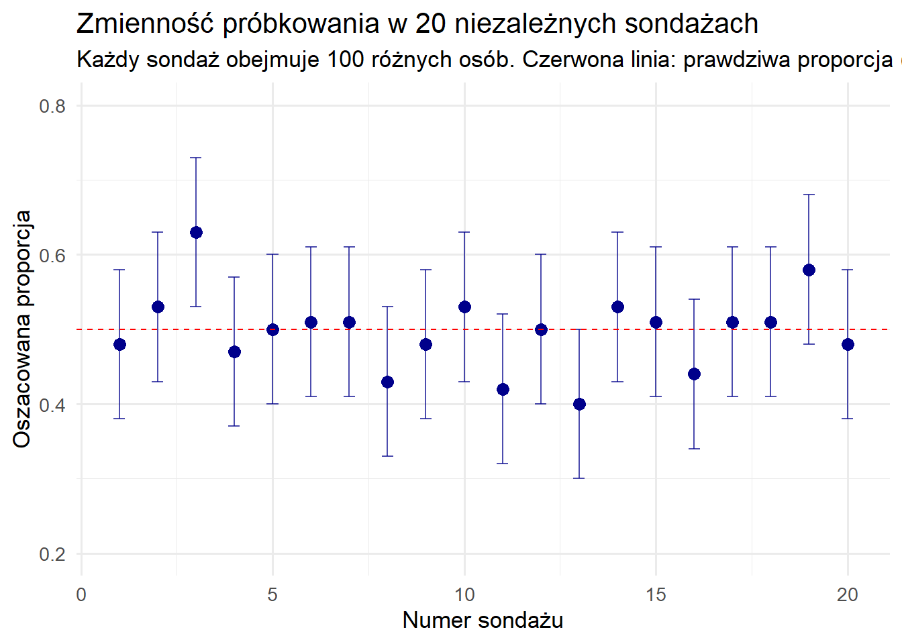
# Określenie dokładnych punktów podziałuhist(exam_scores, breaks =seq(0, 100, by =10))
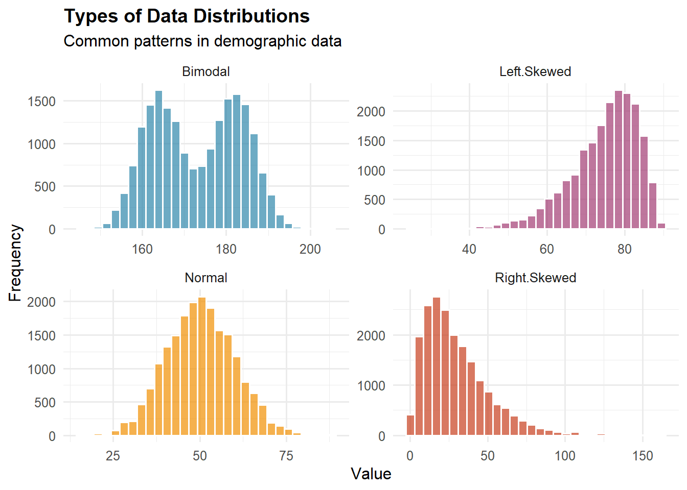
# Pozwól R wybrać automatycznie (domyślnie używa reguły Sturgesa)hist(exam_scores)
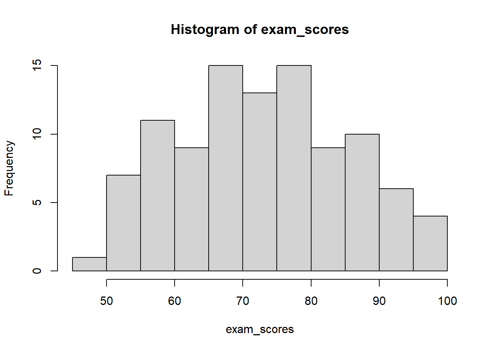
Najlepszym podejściem jest często eksperymentowanie z różnymi szerokościami klas, aby znaleźć to, co najlepiej ujawnia wzorzec w danych. Zacznij od ustawienia domyślnego, następnie spróbuj mniej i więcej klas, aby zobaczyć, jak zmienia się obraz.
Definiowanie granic klas: Tworząc klasy dla tablicy częstości, musisz zdecydować, jak obsługiwać wartości, które dokładnie przypadają na granice przedziałów klasowych. Na przykład, jeśli masz klasy 0-10 i 10-20, do której klasy należy wartość 10?
Rozwiązaniem jest użycie notacji przedziałowej (interval notation), aby określić, czy każda granica jest włączona czy wyłączona:
Przedział domknięty (closed interval) [a, b] zawiera oba końce: a \leq x \leq b
Przedział otwarty (open interval) (a, b) wyklucza oba końce: a < x < b
Przedział lewostronnie domknięty (half-open interval) [a, b) zawiera lewy koniec, ale wyklucza prawy: a \leq x < b
Przedział prawostronnie domknięty (half-open interval) (a, b] wyklucza lewy koniec, ale zawiera prawy: a < x \leq b
Standardowa konwencja: Większość oprogramowania statystycznego, włączając R, używa przedziałów lewostronnie domkniętych[a, b) dla wszystkich klas oprócz ostatniej, która jest w pełni domknięta [a, b]. Oznacza to:
Wartość na dolnej granicy jest włączona do klasy
Wartość na górnej granicy należy do następnej klasy
Sama ostatnia klasa zawiera obie granice, aby uchwycić wartość maksymalną
Na przykład, dla klas 0-20, 20-40, 40-60, 60-80, 80-100:
Przedział wyników
Notacja przedziałowa
Zawarte wartości
0-20
[0, 20)
0 ≤ wynik < 20
20-40
[20, 40)
20 ≤ wynik < 40
40-60
[40, 60)
40 ≤ wynik < 60
60-80
[60, 80)
60 ≤ wynik < 80
80-100
[80, 100]
80 ≤ wynik ≤ 100
Ta konwencja zapewnia, że:
Każda wartość jest liczona dokładnie raz (bez podwójnego liczenia)
Żadne wartości nie przepadają
Klasy w pełni pokrywają cały zakres
Przedstawiając tablice częstości w raportach, możesz po prostu napisać “0-20, 20-40, …” i zaznaczyć, że klasy są lewostronnie domknięte, lub jawnie pokazać notację przedziałową, jeśli precyzja jest ważna.
Histogram częstości pokazuje surowe liczebności:
# Przykład kodu Rhist(exam_scores, breaks =seq(0, 100, by =10),main ="Rozkład wyników egzaminacyjnych",xlab ="Wynik",ylab ="Częstość",col ="lightblue")
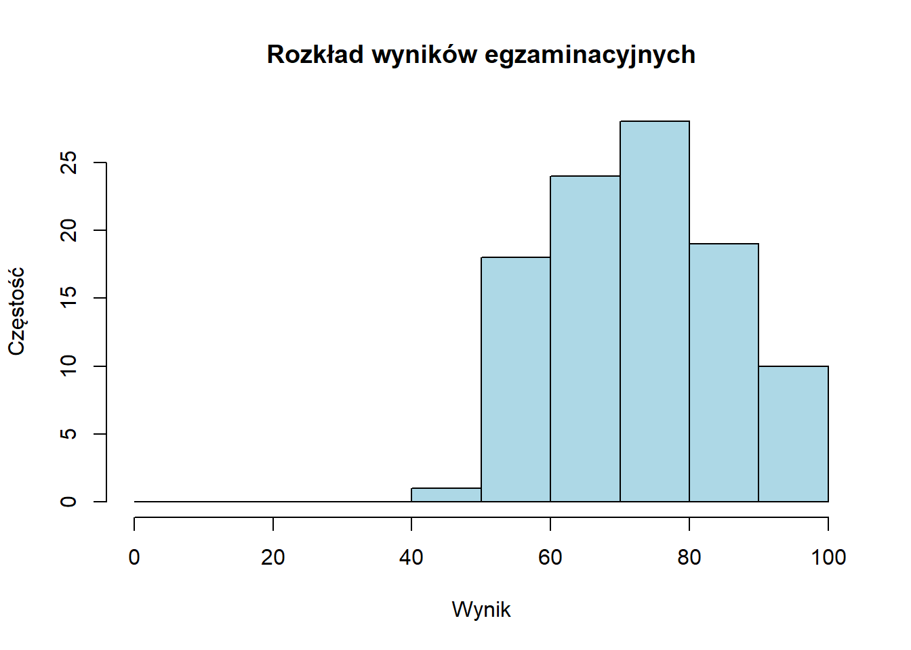
Histogram częstości względnej pokazuje proporcje (użyteczne przy porównywaniu grup o różnych liczebnościach):
hist(exam_scores, breaks =seq(0, 100, by =10),freq =FALSE, # Tworzy histogram częstości względnej/gęstościmain ="Rozkład wyników egzaminacyjnych",xlab ="Wynik",ylab ="Częstość względna",col ="lightgreen")
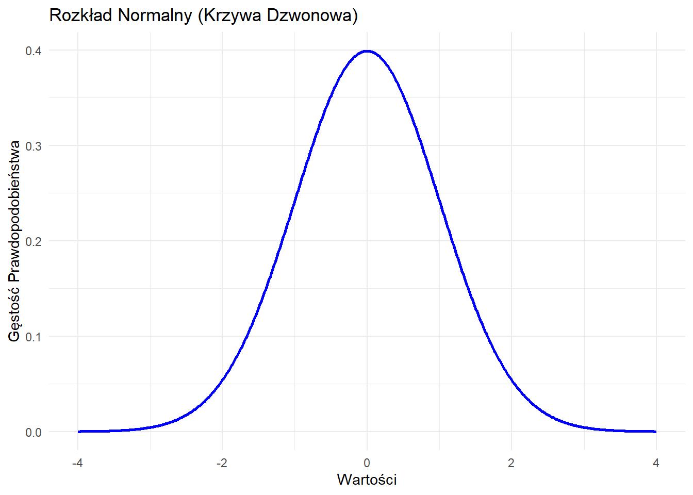
Histogram gęstości dostosowuje się do szerokości przedziałów i jest używany z krzywymi gęstości:
hist(exam_scores, breaks =seq(0, 100, by =10),freq =FALSE, # Tworzy skalę gęstościmain ="Rozkład wyników egzaminacyjnych",xlab ="Wynik",ylab ="Gęstość",col ="lightcoral")
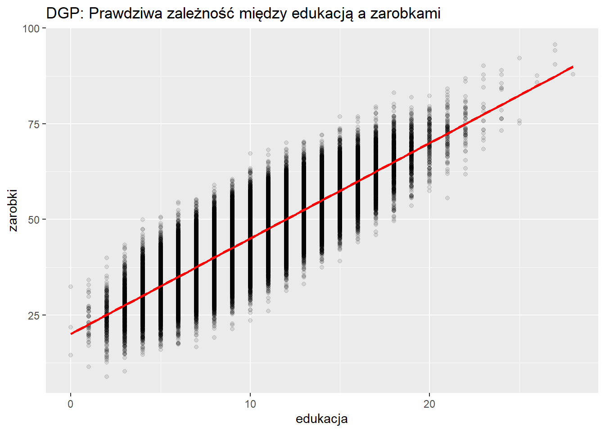
Krzywe Gęstości
Krzywa gęstości (density curve) to wygładzona linia, która przybliża/modeluje kształt rozkładu. W przeciwieństwie do histogramów, które pokazują rzeczywiste dane w dyskretnych klasach, krzywe gęstości pokazują ogólny wzorzec jako funkcję ciągłą. Pole pod całą krzywą zawsze równa się 1, a pole pod dowolną częścią krzywej reprezentuje proporcję obserwacji w tym zakresie.
# Dodawanie krzywej gęstości do histogramuhist(exam_scores, freq =FALSE,main ="Wyniki egzaminacyjne z krzywą gęstości",xlab ="Wynik",ylab ="Gęstość",col ="lightblue",border ="white")lines(density(exam_scores), col ="darkred", lwd =2)
Porównywania wielu rozkładów na tym samym wykresie
Zrozumienia teoretycznego (“prawdziwego”) rozkładu leżącego u podstaw danych
Tip
W statystyce percentyl (percentile) wskazuje względną pozycję punktu danych w zbiorze, pokazując procent obserwacji, które znajdują się na tym poziomie lub poniżej. Na przykład, jeśli student uzyskał wynik na 90. percentylu w teście, jego wynik jest równy lub wyższy niż 90% wszystkich innych wyników.
Kwartyle (quartiles) to specjalne percentyle, które dzielą dane na cztery równe części: pierwszy kwartyl (Q1, 25. percentyl), drugi kwartyl (Q2, 50. percentyl, czyli mediana), i trzeci kwartyl (Q3, 75. percentyl). Jeśli Q1 = 65 punktów, oznacza to, że 25% studentów uzyskało 65 punktów lub mniej.
Bardziej ogólnie, kwantyle (quantiles) to wartości, które dzielą dane na grupy o równej liczebności — percentyle dzielą na 100 części, kwartyle na 4 części, decyle (deciles) na 10 części, itp.
Wizualizacja Częstości Skumulowanej (*)
Wykresy częstości skumulowanej, zwane także ogiwami (ogives, wymawiane “oh-dżajw”), pokazują jak częstości kumulują się w zakresie wartości. Te wykresy używają linii zamiast słupków i zawsze rosną od lewej do prawej, ostatecznie osiągając całkowitą liczbę obserwacji (dla częstości skumulowanej) lub 1,0 (dla częstości względnej skumulowanej).
Wykresy częstości skumulowanej są wykorzytywane do:
Wizualnego odnajdywania percentyli i kwartyli
Określania, jaka proporcja danych znajduje się poniżej lub powyżej określonej wartości
Porównywania rozkładów różnych grup
# Tworzenie danych częstości skumulowanejscore_breaks <-seq(0, 100, by =10)freq_counts <-hist(exam_scores, breaks = score_breaks, plot =FALSE)$countscumulative_freq <-cumsum(freq_counts)# Wykres częstości skumulowanejplot(score_breaks[-1], cumulative_freq,type ="b", # zarówno punkty, jak i liniemain ="Częstość skumulowana wyników egzaminacyjnych",xlab ="Wynik",ylab ="Częstość skumulowana",col ="darkblue",lwd =2,pch =19)grid()
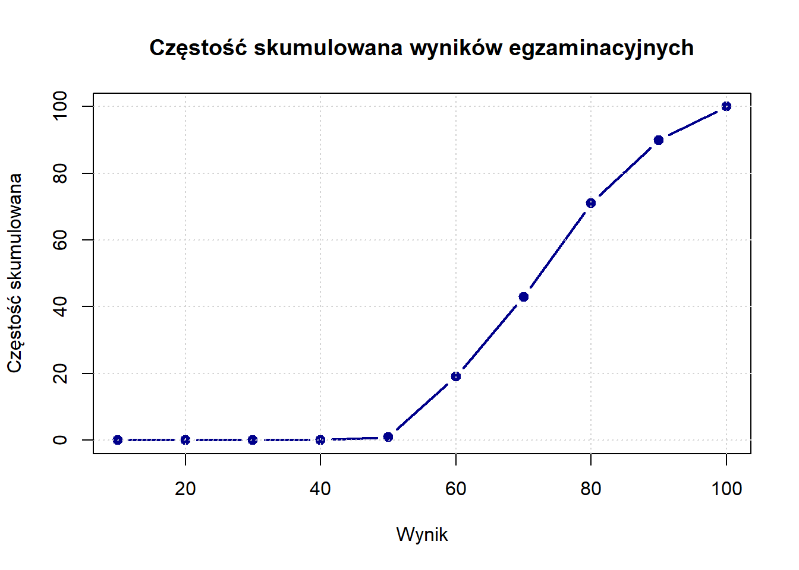
Dla częstości względnej skumulowanej (która jest częściej używana):
Krzywa częstości względnej skumulowanej ułatwia odczytywanie percentyli. Na przykład, jeśli narysujesz linię poziomą na 0,75 i zobaczysz, gdzie przecina krzywą, odpowiadająca wartość x to 75. percentyl — wynik, poniżej którego znajduje się 75% studentów.
Rozkłady Dyskretne a Ciągłe
Typ zmiennej, którą analizujesz, określa sposób wizualizacji jej rozkładu:
Rozkłady dyskretne (discrete distributions) stosują się do zmiennych, które mogą przyjmować tylko określone, policzalne wartości. Przykłady obejmują liczbę dzieci w rodzinie (0, 1, 2, 3…), liczbę skarg klientów dziennie lub odpowiedzi na 5-stopniowej skali Likerta.
Dla danych dyskretnych zazwyczaj używamy:
Wykresów słupkowych (z przerwami między słupkami) zamiast histogramów
Częstości lub częstości względnej na osi y
Każda odrębna wartość otrzymuje własny słupek
# Przykład: Liczba dzieci w rodziniechildren <-c(0, 1, 2, 2, 1, 3, 0, 2, 1, 4, 2, 1, 0, 2, 3)barplot(table(children),main ="Rozkład liczby dzieci",xlab ="Liczba dzieci",ylab ="Częstość",col ="skyblue")
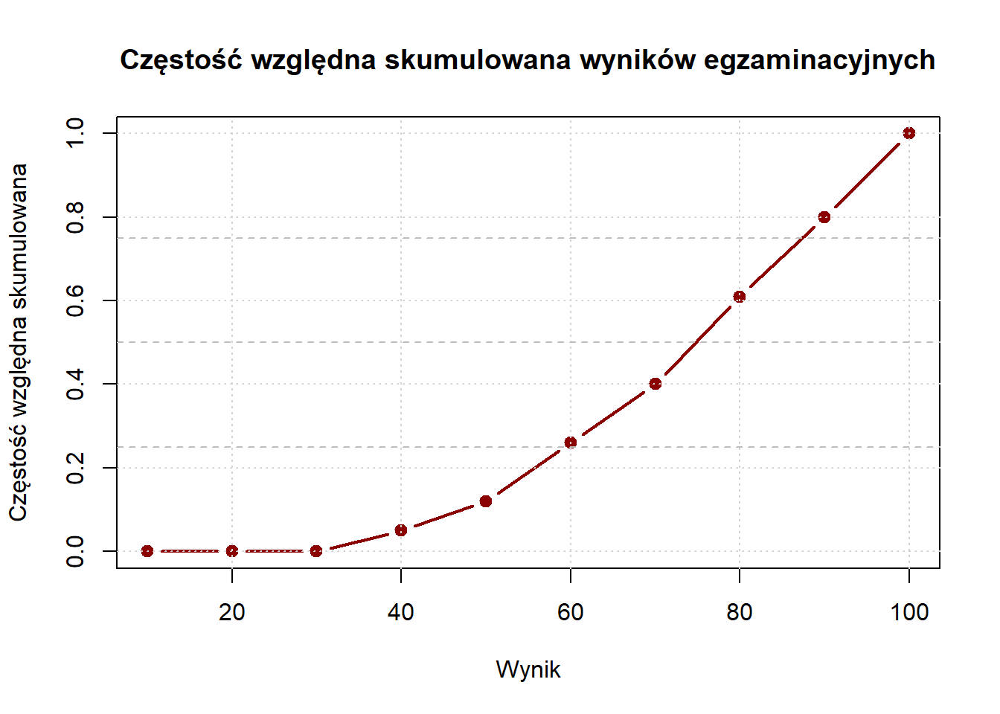
Rozkłady ciągłe (continuous distributions) stosują się do zmiennych, które mogą przyjmować dowolną wartość w zakresie. Przykłady obejmują temperaturę, czas reakcji, wzrost lub procent frekwencji.
Dla danych ciągłych używamy:
Histogramów (ze stykającymi się słupkami), które grupują dane w przedziały
Krzywych gęstości, aby pokazać wygładzony wzorzec
Gęstości na osi y przy używaniu krzywych gęstości
# Generate response time data (in seconds)set.seed(456) # For reproducibilityresponse_time <-rgamma(200, shape =2, scale =1.5)# Przykład: Rozkład czasu reakcjihist(response_time, breaks =15,freq =FALSE,main ="Rozkład czasu reakcji",xlab ="Czas reakcji (sekundy)",ylab ="Gęstość",col ="lightgreen",border ="white")lines(density(response_time), col ="darkgreen", lwd =2)
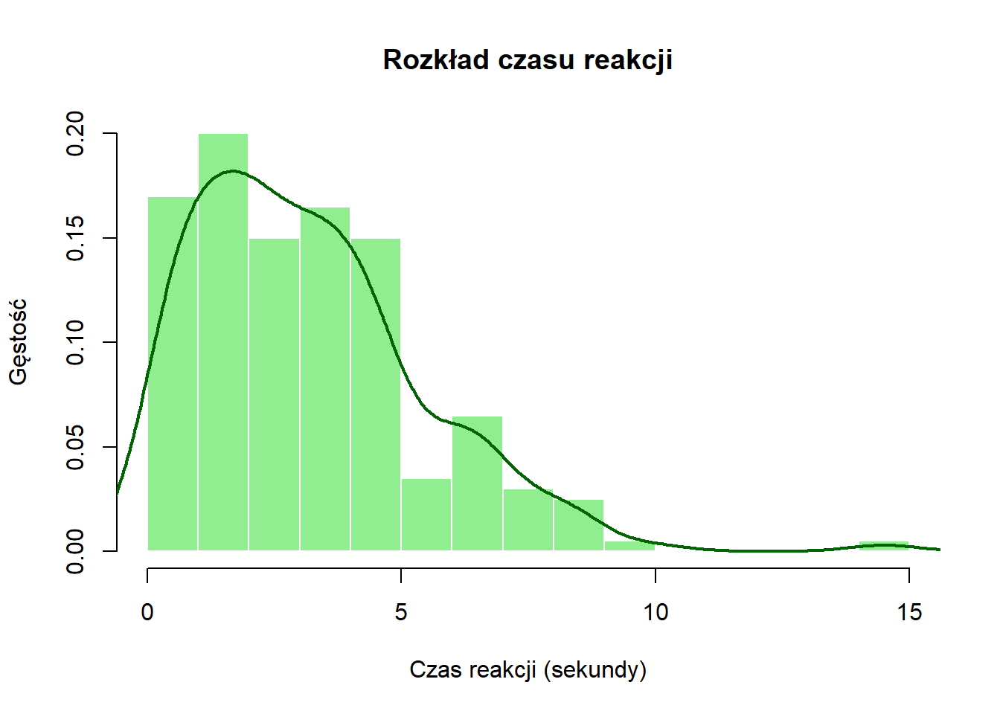
Kluczowa różnica polega na tym, że rozkłady dyskretne pokazują prawdopodobieństwo w konkretnych punktach, podczas gdy rozkłady ciągłe pokazują gęstość prawdopodobieństwa w zakresach. Dla zmiennych ciągłych prawdopodobieństwo jakiejkolwiek dokładnej wartości jest w zasadzie równe zeru — zamiast tego mówimy o prawdopodobieństwie znalezienia się w przedziale.
Zrozumienie, czy twoja zmienna jest dyskretna czy ciągła, kieruje wyborem wizualizacji i metod statystycznych, zapewniając, że twoja analiza dokładnie reprezentuje naturę twoich danych.
Opisywanie rozkładów (*)
Charakterystyki kształtu:
Symetria vs. Skośność:
Symetryczny: Lustrzane odbicie wokół środka (przykład: wzrost w jednorodnej populacji)
Prawostronnie skośny (skośność dodatnia): Długi ogon po prawej stronie (przykład: dochód, bogactwo)
Lewostronnie skośny (skośność ujemna): Długi ogon po lewej stronie (przykład: liczba lat życia w krajach rozwiniętych)
Przykład: Liczba urodzeń chłopców na 100 urodzeń (p \approx 0,512)
Rozkład Poissona:
Liczba zdarzeń w stałym czasie/przestrzeni
Średnia = Wariancja = \lambda
Dobry dla rzadkich zdarzeń
Zastosowania demograficzne:
Liczba zgonów dziennie w małym mieście
Liczba urodzeń na godzinę w szpitalu
Liczba wypadków na skrzyżowaniu miesięcznie
Wizualizacja rozkładów częstości (*)
Histogram: Dla danych ciągłych, pokazuje częstość wysokościami słupków.
Oś X: Zakresy wartości (przedziały)
Oś Y: Częstość lub gęstość
Brak przerw między słupkami (dane ciągłe)
Szerokość przedziału wpływa na wygląd
Wykres słupkowy: Dla danych kategorycznych, pokazuje częstość z oddzielonymi słupkami.
Oś X: Kategorie
Oś Y: Częstość
Przerwy między słupkami (dyskretne kategorie)
Kolejność może mieć znaczenie lub nie
Dystrybuanta (Funkcja Rozkładu Skumulowanego): Pokazuje proporcję wartości ≤ każdego punktu danych. - Zawsze rośnie (lub pozostaje płaska) - Zaczyna się od 0, kończy na 1 - Strome nachylenia wskazują na częste wartości - Płaskie obszary wskazują na rzadkie wartości
Wykres Pudełkowy (Wykres Skrzynkowy): Wizualne podsumowanie, które przedstawia kluczowe statystyki rozkładu przy użyciu pięciu kluczowych wartości.
Podsumowanie Pięciu Liczb:
Minimum: Koniec lewego wąsa (z wyłączeniem wartości odstających)
Mediana (Q2): Linia wewnątrz pudełka (50. percentyl)
Q3 (Trzeci Kwartyl): Prawa krawędź pudełka (75. percentyl)
Maksimum: Koniec prawego wąsa (z wyłączeniem wartości odstających)
Co Pokazuje:
Skośność: Jeśli linia mediany jest przesunięta w pudełku lub wąsy są nierówne
Rozrzut: Szersze pudełka i dłuższe wąsy wskazują na większą zmienność
Wartości odstające: Natychmiast widoczne jako oddzielne punkty
Symetria: Równe długości wąsów i wyśrodkowana mediana sugerują rozkład normalny
Szybka Interpretacja:
Wąskie pudełko = spójne dane
Długie wąsy = szeroki zakres wartości
Wiele wartości odstających = potencjalne problemy z jakością danych lub interesujące przypadki skrajne
Mediana bliżej Q1 = dane skośne prawostronnie (ogon rozciąga się w prawo)
Mediana bliżej Q3 = dane skośne lewostronnie (ogon rozciąga się w lewo)
Wykresy pudełkowe są szczególnie użyteczne do porównywania wielu grup obok siebie!
2.8 Zmienne i skale pomiarowe
Zmienna to każda charakterystyka, która może przyjmować różne wartości dla różnych jednostek obserwacji.
Pomiar: przekształcanie pojęć w liczby
Świat polityki jest pełen danych
Politologia ewoluowała z dyscypliny głównie teoretycznej do takiej, która coraz bardziej opiera się na dowodach empirycznych. Niezależnie od tego, czy badamy:
Wyniki wyborów: Dlaczego ludzie głosują tak, jak głosują?
Opinię publiczną: Co kształtuje postawy wobec imigracji lub polityki klimatycznej?
Stosunki międzynarodowe: Jakie czynniki przewidują konflikt między narodami/państwami?
Skuteczność polityk: Czy nowa polityka edukacyjna rzeczywiście poprawiła wyniki uczniów?
Potrzebujemy systematycznych sposobów analizowania danych i wyciągania wniosków, które wykraczają poza anegdoty i osobiste wrażenia.
Rozważ to pytanie: “Czy demokracja prowadzi do wzrostu gospodarczego?”
Twoja intuicja może sugerować, że tak - kraje demokratyczne są zazwyczaj bogatsze. Ale czy to przyczynowość, czy korelacja? Czy są wyjątki? Jak pewni możemy być naszych wniosków?
Statystyka dostarcza narzędzi do przejścia od przeczuć do odpowiedzi opartych na dowodach, pomagając nam rozróżnić między tym, co wydaje się prawdziwe, a tym, co rzeczywiście jest prawdziwe.
Pomiar w naukach społecznych
W naukach społecznych często zmagamy się z tym, że kluczowe pojęcia nie przekładają się wprost na liczby:
Jak zmierzyć „demokrację”?
Jaka liczba oddaje „ideologię polityczną”?
Jak ilościowo ująć „siłę instytucji”?
Jak zmierzyć „partycypację polityczną”?
🔍 Korelacja ≠ Przyczynowość: Zrozumienie Związków Pozornych (spurious correlation)
Fundamentalne Rozróżnienie
Korelacja (correlation) mierzy, jak dwie zmienne poruszają się razem:
Dodatnia: Obie rosną razem (godziny nauki ↑, oceny ↑)
Ujemna: Jedna rośnie, gdy druga maleje (godziny TV ↑, oceny ↓)
Mierzona współczynnikiem korelacji: r \in [-1, 1]
Przyczynowość (causation) oznacza, że jedna zmienna bezpośrednio wpływa na drugą:
X \rightarrow Y: Zmiany w X bezpośrednio powodują zmiany w Y
Wymaga: (1) korelacji, (2) poprzedzania czasowego, (3) braku alternatywnych wyjaśnień
Zagrożenie: Korelacja Pozorna
Korelacja pozorna (spurious correlation) występuje, gdy dwie zmienne wydają się powiązane, ale w rzeczywistości obie są pod wpływem trzeciej zmiennej (czynnika zakłócającego/confoundera).
Klasyczny przykład:
Obserwacja: Sprzedaż lodów koreluje z liczbą utonięć
Pozorny wniosek: Lody powodują utonięcia (❌)
Rzeczywistość: Letnia pogoda (czynnik zakłócający) powoduje oba zjawiska:
Lato → Więcej sprzedanych lodów
Lato → Więcej pływania → Więcej utonięć
Reprezentacja matematyczna:
Obserwowana korelacja: \text{Cor}(X,Y) \neq 0
Ale prawdziwy model: X = \alpha Z + \epsilon_1 oraz Y = \beta Z + \epsilon_2
Gdzie Z to zmienna zakłócająca powodująca oba zjawiska
Wpływa zarówno na domniemaną przyczynę, jak i skutek
Tworzy iluzję bezpośredniej przyczynowości
Musi być kontrolowana dla ważnego wnioskowania przyczynowego
Przykład badawczy:
Obserwacja: Spożycie kawy koreluje z chorobami serca
Potencjalny czynnik zakłócający: Palenie (osoby pijące kawę częściej palą)
Prawdziwe relacje:
Palenie → Choroby serca (przyczynowa)
Palenie → Spożycie kawy (związek)
Kawa → Choroby serca (pozorna bez kontroli palenia)
Jak Identyfikować Związki Przyczynowe
Randomizowane badania kontrolowane (RCTs): Losowy przydział przerywa wpływ czynników zakłócających
Eksperymenty naturalne (natural experiments): Zdarzenia zewnętrzne tworzą „jakby” losową zmienność
Kontrola statystyczna: Włączenie czynników zakłócających do modeli regresji
Zmienne instrumentalne (instrumental variables): Znalezienie zmiennych wpływających na X, ale nie bezpośrednio na Y
Kluczowy Wniosek
Znalezienie korelacji jest łatwe. Ustalenie przyczynowości jest trudne. Zawsze pytaj: „Co jeszcze mogłoby wyjaśniać ten związek?”
Pamiętaj: Najbardziej niebezpieczne zdanie w badaniach empirycznych to „nasze dane pokazują, że X powoduje Y”, gdy tak naprawdę zmierzyłeś tylko korelację.
📊 Szybki Test: Korelacja czy Przyczynowość?
Dla każdego scenariusza określ, czy związek jest prawdopodobnie przyczynowy czy pozorny:
Miasta z większą liczbą kościołów mają więcej przestępstw
Odpowiedź: Pozorny (czynnik zakłócający: wielkość populacji)
Palenie prowadzi do raka płuc
Odpowiedź: Przyczynowy (ustalony poprzez wiele projektów badawczych)
Uczniowie z większą liczbą książek w domu mają lepsze oceny
Odpowiedź: Prawdopodobnie pozorny (czynniki zakłócające: wykształcenie rodziców, dochód)
Kraje z wyższym spożyciem czekolady mają więcej laureatów Nobla
Odpowiedź: Pozorny (czynnik zakłócający: poziom zamożności/rozwoju)
Typy zmiennych
Zmienne ilościowe (Quantitative Variables) reprezentują ilości lub wielkości i mogą być:
Zmienne ciągłe (Continuous Variables): Mogą przyjmować dowolną wartość w przedziale, ograniczoną tylko precyzją pomiaru.
Wiek (22,5 lat, 22,51 lat, 22,514 lat…)
Dochód (45 234,67 zł)
Wzrost (175,3 cm)
Gęstość zaludnienia (432,7 osób na kilometr kwadratowy)
Zmienne dyskretne (Discrete Variables): Mogą przyjmować tylko określone wartości, zazwyczaj liczenia.
Liczba dzieci w rodzinie (0, 1, 2, 3…)
Liczba małżeństw (0, 1, 2…)
Liczba pokoi w mieszkaniu (1, 2, 3…)
Liczba migrantów wjeżdżających do kraju rocznie
Zmienne jakościowe (Qualitative Variables) reprezentują kategorie lub cechy i mogą być:
Zmienne nominalne (Nominal Variables): Kategorie bez naturalnego porządku.
Przyczyna śmierci (choroby serca, nowotwory, wypadek…)
Zmienne porządkowe (Ordinal Variables): Kategorie ze znaczącym porządkiem, ale nierównymi interwałami.
Poziom wykształcenia (brak wykształcenia, podstawowe, średnie, wyższe)
Zadowolenie z opieki zdrowotnej (bardzo niezadowolony, niezadowolony, neutralny, zadowolony, bardzo zadowolony)
Status społeczno-ekonomiczny (niski, średni, wysoki)
Samoocena stanu zdrowia (zły, przeciętny, dobry, doskonały)
Skale pomiarowe
Zrozumienie skal pomiarowych jest kluczowe, ponieważ determinują, które metody statystyczne są odpowiednie:
Skala nominalna (Nominal Scale): Tylko kategorie — możemy liczyć częstości, ale nie możemy porządkować ani wykonywać operacji arytmetycznych. Przykład: Możemy powiedzieć, że 45% mieszkańców urodziło się lokalnie, ale nie możemy obliczyć „średniego miejsca urodzenia”.
Skala porządkowa (Ordinal Scale): Kolejność ma znaczenie, ale różnice między wartościami niekoniecznie są równe. Przykład: Różnica między „złym” a „przeciętnym” zdrowiem może nie równać się różnicy między „dobrym” a „doskonałym” zdrowiem.
Skala interwałowa (Interval Scale): Równe interwały między wartościami, ale brak prawdziwego punktu zerowego. Przykład: Temperatura w stopniach Celsjusza — różnica między 20°C a 30°C równa się różnicy między 30°C a 40°C, ale 0°C nie oznacza „braku temperatury”.
Skala ilorazowa (Ratio Scale): Równe interwały z prawdziwym punktem zerowym, umożliwiające wszystkie operacje matematyczne. Przykład: Dochód — 40 000 zł to dwa razy więcej niż 20 000 zł, a 0 zł oznacza brak dochodu.
2.9 Parametry, statystyki, estymandy, estymatory i estymaty
Wnioskowanie statystyczne polega na poznawaniu nieznanych cech populacji na podstawie skończonych prób. Poniżej pięć kluczowych pojęć.
Tabela porównawcza (w skrócie)
Termin
Co to jest?
Losowe?
Typowa notacja
Przykład
Estymanda
Dokładnie zdefiniowana wielkość docelowa
Nie
opis słowny (specyfikacja)
„Mediana dochodu gospodarstw domowych w Kalifornii na 2024-01-01.”
Parametr
Prawdziwa wartość tej wielkości w populacji
Nie*
\theta,\ \mu,\ p,\ \beta
Prawdziwa średnia wieku przy pierwszym porodzie we Francji (2023)
Estymator
Reguła/wzór przekształcająca dane w oszacowanie
—
\hat\theta = g(X_1,\dots,X_n)
\bar X, \hat p = X/n, OLS \hat\beta
Statystyka
Dowolna funkcja próby (w tym estymatory)
Tak
\bar X,\ s^2,\ r
Średnia z próby n=500 urodzeń
Estymata
Liczbowa wartość otrzymana z estymatora (oszacowanie)
Nie
liczba
\hat p = 0.433 (43,3%)
*Wartość stała dla zdefiniowanej populacji i horyzontu czasu; może się różnić między miejscami/okresami.
Parametr
Parametr to liczbowa cecha populacji — stała, ale dla nas nieznana.
Typowe parametry:\mu (średnia), \sigma^2 (wariancja), p (odsetek/proporcja), \beta (wpływ w regresji), \lambda (intensywność/tempo).
Przykład. Prawdziwa średnia wieku przy pierwszym porodzie wszystkich kobiet we Francji w 2023 r. to parametr \mu. Nie znamy go bez danych o całej populacji.
Note
Notacja. Często przyjmujemy greckie litery dla parametrów populacyjnych i łacińskie dla statystyk z próby. Najważniejsza jest konsekwencja.
Statystyka
Statystyka to dowolna funkcja danych z próby. Statystyki różnią się między próbami.
Przykłady:\bar x (średnia z próby), s^2 (wariancja z próby), \hat p (proporcja w próbie), r (korelacja), b (współczynnik regresji w próbie).
Przykład. W losowej próbie 500 urodzeń otrzymujemy \bar x = 30{,}9 lat; inna próba może dać 31{,}4.
Estymanda
Estymanda (wielkość docelowa) to to, co chcemy oszacować — opisane tak dokładnie, aby dwaj badacze obliczyli tę samą liczbę, mając pełne dane populacyjne.
Dobrze zdefiniowane estymandy
„Mediana dochodu gospodarstw domowych w Kalifornii na 2024-01-01.”
„Różnica długości życia mężczyźni–kobiety dla rocznika urodzeń w Szwecji, 2023.”
„Odsetek osób w wieku 25–34 mieszkających w miastach, które ukończyły studia wyższe.”
Warning
Dlaczego precyzja definicji ma znaczenie. „Stopa bezrobocia” jest niejednoznaczna, jeśli nie określimy: (i) kto jest bezrobotny, (ii) zakresu wieku, (iii) obszaru, (iv) okna czasowego. Różne definicje prowadzą do różnych parametrów (np. U-1 … U-6 w USA).
Estymator
Estymator to reguła, która zamienia dane w estymatę.
Typowe estymatory
\hat\mu=\bar X=\frac{1}{n}\sum_{i=1}^n X_i
\hat p=\frac{X}{n}\quad\text{(gdzie $X$ to liczba „sukcesów”)}
s^2=\frac{1}{n-1}\sum_{i=1}^n (X_i-\bar X)^2
Note
Dlaczegon-1? Poprawka Bessela czyni s^2 nieobciążonym estymatorem wariancji populacji, gdy średnią szacujemy na podstawie tej samej próby.
Jak oceniamy estymatory: błąd, wariancja, MSE, efektywność
Błąd (bias) — czy estymator jest „wycentrowany” na prawdzie? Gdyby wielokrotnie powtarzać to samo badanie, nieobciążony estymator średnio dawałby prawdziwą wartość. Obciążony systematycznie zaniżałby lub zawyżał wynik.
Wariancja — jak bardzo estymaty różnią się między próbami? Nawet bez obciążenia kolejne próby nie dadzą identycznych liczb. Mniejsza wariancja oznacza większą stabilność między próbami.
Średni błąd kwadratowy (MSE) — jedna miara ogólnej trafności. MSE łączy oba składniki:
\mathrm{MSE}(\hat\theta)=\mathrm{Var}(\hat\theta)+\big(\mathrm{Bias}(\hat\theta)\big)^2.
Mniejszy MSE jest lepszy. Estymator z niewielkim obciążeniem, ale znacznie mniejszą wariancją, może mieć niższy MSE niż estymator nieobciążony, lecz bardzo zmienny.
Efektywność — porównawcza precyzja estymatorów. Wśród nieobciążonych estymatorów tego samego parametru, opartych na tych samych danych, bardziej efektywny ma mniejszą wariancję. Jeśli dopuszczamy niewielkie obciążenie, porównujemy estymatory za pomocą MSE.
Skąd bierze się „precyzja” (częste przypadki)
Średnia z próby (prosty losowy dobór):
\operatorname{Var}(\bar X)=\frac{\sigma^2}{n},\qquad
\mathrm{SE}(\bar X)=\frac{\sigma}{\sqrt{n}}.
Większe n zmniejsza błąd standardowy w tempie 1/\sqrt{n}.
Proporcja z próby:
\operatorname{Var}(\hat p)=\frac{p(1-p)}{n},\qquad
\mathrm{SE}(\hat p)=\sqrt{\frac{\hat p(1-\hat p)}{n}}.
Efekty planu (design effects): klastrowanie, warstwowanie i wagi zmieniają wariancję. Dobieraj metodę SE do planu doboru próby.
Estymata (oszacowanie)
Estymata to liczbowa wartość otrzymana po zastosowaniu estymatora do danych.
Przykład (krok po kroku)
Estymanda: Odsetek dorosłych mieszkańców USA wyrażających aprobatę dziś.
Parametr vs statystyka: wielkość populacyjna vs wielkość z próby.
Estymator vs estymata: procedura vs wynik liczbowy.
Indeks czasu: parametry często zależą od czasu (np. II kw. vs III kw.).
Najpierw definicja: zanim wybierzesz estymator, precyzyjnie określ estymandę.
Wyjaśnienie różnych typów nieprzewidywalności
Nie wszystkie rodzaje niepewności są takie same. Zrozumienie różnych źródeł nieprzewidywalności pomaga w wyborze odpowiednich metod statystycznych i prawidłowej interpretacji wyników.
Pojęcie
Czym jest?
Źródło nieprzewidywalności
Przykład
Losowość (randomness)
Poszczególne wyniki są niepewne, ale rozkład prawdopodobieństwa jest znany lub modelowany.
Fluktuacje między realizacjami; brak informacji o konkretnym wyniku.
Rzut kostką, rzut monetą, próba sondażowa
Chaos
Dynamika deterministycznabardzo wrażliwa na warunki początkowe (efekt motyla).
Niewielkie różnice początkowe szybko narastają → duże rozbieżności trajektorii.
Miara niepewności/rozproszenia (teorioinformacyjna lub termodynamiczna).
Większa gdy wyniki są bardziej równomiernie rozłożone (mniej informacji predykcyjnej).
Entropia Shannona w kompresji danych
„Przypadkowość” (potoczne)
Odczuwany brak porządku bez wyraźnego modelu; mieszanka mechanizmów.
Brak uporządkowanego opisu lub stabilnych reguł; nakładające się procesy.
Wzorce ruchu, trendy w mediach społecznościowych
Losowość kwantowa (quantum randomness)
Pojedynczy wynik nie jest zdeterminowany; tylko rozkład jest określony (reguła Borna).
Fundamentalna (ontologiczna) nieokreśloność poszczególnych pomiarów.
Pomiar spinu elektronu, polaryzacja fotonu
Kluczowe rozróżnienia dla praktyki statystycznej
Chaos deterministyczny ≠ losowość statystyczna: System chaotyczny jest w pełni deterministyczny, ale praktycznie nieprzewidywalny z powodu ekstremalnej wrażliwości na warunki początkowe. Losowość statystyczna modeluje natomiast niepewność poprzez rozkłady prawdopodobieństwa, gdzie poszczególne wyniki są rzeczywiście niepewne.
Dlaczego to ważne: W statystyce zazwyczaj modelujemy zjawiska jako procesy losowe, zakładając, że możemy określić rozkłady prawdopodobieństwa, nawet gdy poszczególne wyniki są nieprzewidywalne. To założenie stanowi podstawę większości wnioskowań statystycznych.
Mechanika kwantowa i fundamentalna losowość
W interpretacji kopenhaskiej losowość jest fundamentalna (ontologiczna): pojedynczy wynik nie może być przewidziany, ale rozkład prawdopodobieństwa jest dany przez regułę Borna.
To reprezentuje prawdziwą losowość na najbardziej podstawowym poziomie natury.
2.10 Błąd statystyczny i niepewność
Wprowadzenie: Dlaczego niepewność ma znaczenie
Żaden pomiar ani oszacowanie nie jest doskonałe. Zrozumienie różnych typów błędów jest kluczowe dla interpretacji wyników i poprawy projektu badania.
Centralne wyzwanie
Za każdym razem, gdy używamy próby (sample) do poznania populacji (population), wprowadzamy niepewność. Kluczem jest:
Uczciwe skwantyfikowanie tej niepewności
Rozróżnienie między różnymi źródłami błędu
Transparentna komunikacja wyników
Typy błędów
Błąd losowy (random error)
Błąd losowy (random error) reprezentuje nieprzewidywalne fluktuacje, które różnią się między obserwacjami bez stałego wzorca. Te błędy wynikają z różnych źródeł naturalnej zmienności w procesie zbierania i pomiaru danych.
Kluczowe cechy
Nieprzewidywalny kierunek: Czasami za wysoki, czasami za niski
Brak stałego wzorca: Zmienia się losowo między obserwacjami
Średnio daje zero: Po wielu pomiarach dodatnie i ujemne błędy się znoszą
Możliwy do skwantyfikowania: Można go oszacować i zredukować odpowiednimi metodami
Błąd losowy obejmuje kilka podtypów:
Błąd próbkowania (sampling error)
Błąd próbkowania (sampling error) to najczęstszy typ błędu losowego—pojawia się, ponieważ obserwujemy próbę, a nie całą populację. Różne losowe próby z tej samej populacji dadzą różne oszacowania wyłącznie przez przypadek.
Kluczowe właściwości:
Maleje wraz z wielkością próby: \propto 1/\sqrt{n}
Możliwy do skwantyfikowania za pomocą teorii prawdopodobieństwa
Nieunikniony przy pracy z próbami
Przykład: Badanie dostępu do internetu
Wyobraźmy sobie ankietę 100 losowo wybranych gospodarstw domowych o dostępie do internetu:
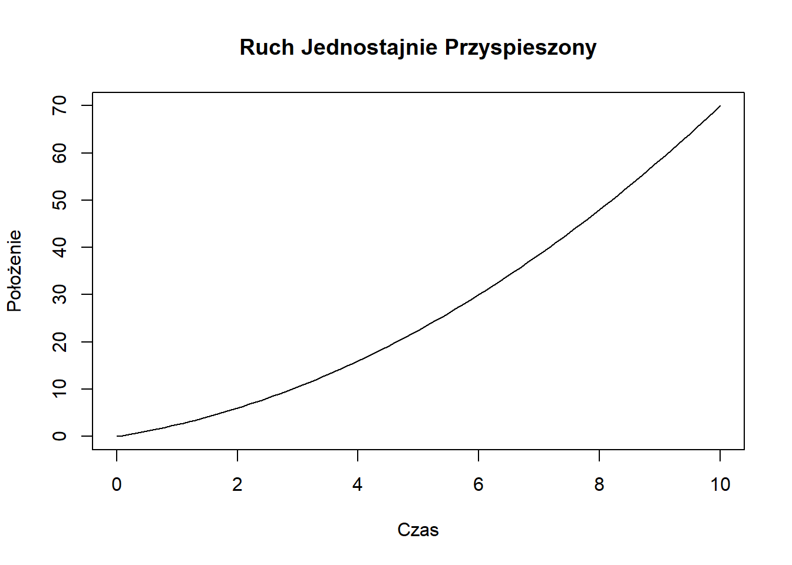
Zmienność wokół prawdziwej wartości (czerwona linia) reprezentuje błąd próbkowania. Przy większych próbach oszacowania przedziałowe byłyby węższe.
Błąd pomiaru (measurement error)
Błąd pomiaru (measurement error) to losowa zmienność w samym procesie pomiaru—nawet przy wielokrotnym pomiarze tej samej rzeczy.
Przykłady:
Niewielkie różnice przy odczycie termometru spowodowane paralaksą
Losowe fluktuacje w przyrządach elektronicznych
Niespójności w ludzkiej ocenie przy kodowaniu danych jakościowych
W przeciwieństwie do błędu próbkowania (który wynika z tego, kogo/co obserwujemy), błąd pomiaru wynika z tego, jak obserwujemy.
Inne źródła błędu losowego
Błąd przetwarzania (processing error): Losowe pomyłki we wprowadzaniu danych, kodowaniu lub obliczeniach
Błąd specyfikacji modelu (model specification error): Gdy prawdziwa zależność jest bardziej złożona niż zakładano
Zmienność czasowa (temporal variation): Naturalne wahania z dnia na dzień w mierzonym zjawisku
Błąd systematyczny (systematic error / bias)
Błąd systematyczny (systematic error lub bias) reprezentuje stałe odchylenie w określonym kierunku. W przeciwieństwie do błędu losowego, nie zeruje się przy powtarzanym próbkowaniu lub pomiarze—utrzymuje się i konsekwentnie odsuwa wyniki od prawdy.
Przykład: Waga, która zawsze pokazuje 2 funty za dużo; pytania ankietowe, które nakłaniają respondentów do konkretnych odpowiedzi.
Respondenci systematycznie fałszywie raportują.
Przykład: Ludzie zaniżają spożycie alkoholu, zawyżają uczestnictwo w wyborach lub dają odpowiedzi społecznie pożądane.
Osoby nieudzielające odpowiedzi różnią się systematycznie od respondentów.
Przykład: Osoby bardzo chore i bardzo zdrowe rzadziej odpowiadają na ankiety zdrowotne, pozostawiając tylko osoby o umiarkowanym zdrowiu.
Obserwowanie wyłącznie „ocalałych” z danego procesu.
Przykład: Podczas II wojny światowej wojsko analizowało powracające bombowce, aby określić, gdzie należy dodać pancerz. Samoloty wykazywały największe uszkodzenia na skrzydłach i sekcjach ogonowych. Abraham Wald dostrzegł błąd: należy opancerzyć miejsca, gdzie nie było dziur po kulach—silnik i kokpit. Samoloty trafione w tych miejscach nigdy nie wracały, aby je przeanalizować. Badano wyłącznie ocalałe.
Obserwatorzy lub ankieterzy systematycznie wpływają na wyniki.
Przykład: Ankieterzy nieświadomie sugerują pewne odpowiedzi lub rejestrują obserwacje potwierdzające ich oczekiwania.
Dekompozycja obciążenia i wariancji (bias-variance decomposition)
Matematycznie, całkowity błąd (błąd średniokwadratowy, Mean Squared Error) rozkłada się na:
Duża obciążona próba daje precyzyjnie błędną odpowiedź.
Zwiększ n → redukuje błąd losowy (szczególnie błąd próbkowania)
Popraw projekt badania → redukuje błąd systematyczny
Lepsze narzędzia → redukuje błąd pomiaru
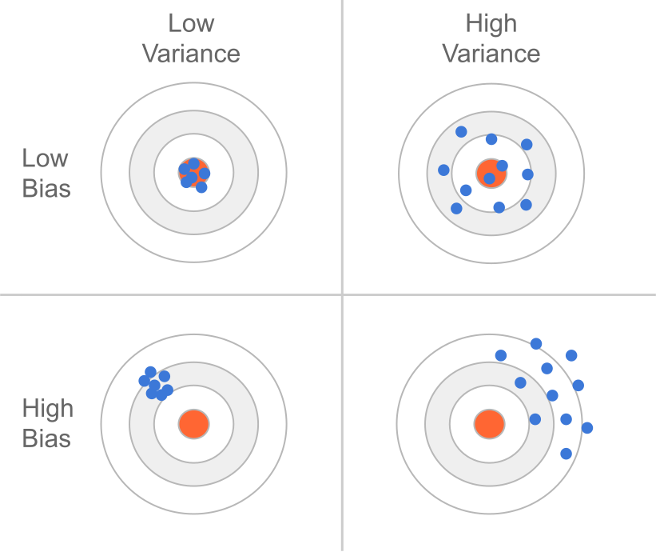
Różne kombinacje obciążenia i wariancji w estymacji
Intuicyjna analogia: Pomyśl o próbie trafienia w środek tarczy:
Błąd losowy = rozproszone strzały wokół celu (czasami w lewo, czasami w prawo, czasami wysoko, czasami nisko)
Błąd systematyczny = konsekwentne trafianie w to samo złe miejsce (wszystkie strzały skupione, ale z dala od centrum)
Ideał = strzały ciasno skupione w centrum tarczy
Kwantyfikowanie niepewności
Błąd standardowy (standard error)
Błąd standardowy (standard error, SE) kwantyfikuje, jak bardzo oszacowanie zmienia się między różnymi możliwymi próbami. Mierzy konkretnie błąd próbkowania.
Błąd standardowy kwantyfikuje tylko błąd próbkowania. Nie uwzględnia błędów systematycznych (obciążenia), błędów pomiaru ani innych źródeł niepewności.
Margines błędu (margin of error)
Margines błędu (margin of error, MOE) reprezentuje oczekiwaną maksymalną różnicę między oszacowaniem z próby a prawdziwym parametrem.
Dla 95% ufności używamy 1,96 (często upraszczane do 2). Zapewnia to, że ~95% przedziałów skonstruowanych w ten sposób będzie zawierać prawdziwy parametr.
Przedziały ufności kwantyfikują niepewność próbkowania, ale zakładają brak błędu systematycznego. Doskonale precyzyjne oszacowanie (wąski przedział ufności) może nadal być obciążone, jeśli projekt badania jest wadliwy.
Praktyczne zastosowanie: Sondaże opinii publicznej
Studium przypadku: Sondaże polityczne
Gdy sondaż raportuje “Kandydat A: 52%, Kandydat B: 48%”, jest to niekompletne bez kwantyfikacji niepewności.
Złota zasada sondażowania
Przy ~1000 losowo wybranych respondentów:
Margines błędu: ±3 punkty procentowe (95% ufności)
Interpretacja: Raportowane 52% oznacza, że prawdziwe poparcie prawdopodobnie wynosi między 49% a 55%
Co to obejmuje: Tylko losowy błąd próbkowania—zakłada brak systematycznego obciążenia
Kluczowe rozróżnienie
Margines błędu ±3% kwantyfikuje tylko niepewność próbkowania. Nie uwzględnia:
Błędu pokrycia (coverage bias): kto jest wykluczony z operatu losowania
Błędu braku odpowiedzi (non-response bias): kto odmawia udziału
Błędu odpowiedzi (response bias): ludzie nieprawdziwie raportujący swoje poglądy
Efektów czasowych (timing effects): zmiany opinii między sondażem a wyborem
Wielkość próby a precyzja
Wielkość próby
Margines błędu (95%)
Zastosowanie
n = 100
± 10 pp
Tylko ogólny kierunek
n = 400
± 5 pp
Ogólne trendy
n = 1000
± 3 pp
Standardowe sondaże
n = 2500
± 2 pp
Wysoka precyzja
n = 10000
± 1 pp
Bardzo wysoka precyzja
Prawo malejących przychodów
Aby zmniejszyć margines błędu o połowę, potrzeba czterokrotnie większej próby, ponieważ \text{MOE} \propto 1/\sqrt{n}
To dotyczy tylko błędu próbkowania. Podwojenie próby z 1000 do 2000 nie naprawi systematycznych problemów, takich jak stronnicze sformułowanie pytań czy niereprezentacyjne metody doboru próby.
Co powinny raportować jakościowe sondaże
Transparentny sondaż ujawnia:
Daty badania: Kiedy zebrano dane?
Populacja i metoda doboru próby: Kto został przebadany i jak zostali wybrani?
Wielkość próby: Ile osób odpowiedziało?
Wskaźnik odpowiedzi (response rate): Jaki odsetek skontaktowanych osób wziął udział?
Procedury ważenia (weighting procedures): Jak próba została dostosowana do charakterystyk populacji?
Większość doniesień medialnych wspomina tylko liczby wynikowe i czasami margines błędu. Rzadko omawiają potencjalne obciążenia systematyczne, które mogą być znacznie większe niż błąd próbkowania.
Wizualizacja: Zmienność próbkowania
Poniższa symulacja demonstruje, jak zachowują się przedziały ufności przy powtarzanym próbkowaniu:
Większość przedziałów obejmuje prawdziwą wartość, ale niektóre “chybiają” wyłącznie z powodu losowości próbkowania. Jest to oczekiwane i możliwe do skwantyfikowania—taka jest natura losowego błędu próbkowania.
Ważne: Ta symulacja zakłada brak systematycznego obciążenia. W rzeczywistych sondażach błędy systematyczne (błąd braku odpowiedzi, problemy z pokryciem, efekty sformułowania pytań) mogą przesunąć wszystkie oszacowania w tym samym kierunku, czyniąc je konsekwentnie błędnymi nawet przy dużych próbach.
Powszechne błędne przekonania
Błędne przekonanie #1: Margines błędu obejmuje całą niepewność
❌ Mit: “Prawdziwa wartość na pewno znajduje się w marginesie błędu”
✅ Rzeczywistość:
Przy 95% ufności nadal istnieje 5% szansa, że prawdziwa wartość znajduje się poza przedziałem wyłącznie z powodu losowości próbkowania
Co ważniejsze, margines błędu obejmuje tylko błąd próbkowania, nie obciążenia systematyczne
Rzeczywiste sondaże często mają większe błędy z powodu błędu braku odpowiedzi, sformułowania pytań czy problemów z pokryciem niż z błędu próbkowania
Błędne przekonanie #2: Większe próby naprawiają wszystko
❌ Mit: “Jeśli tylko przebadamy więcej ludzi, wyeliminujemy wszystkie błędy”
✅ Rzeczywistość:
Większe próby redukują błąd losowy (szczególnie błąd próbkowania): bardziej precyzyjne oszacowania
Większe próby NIE redukują błędu systematycznego: obciążenie pozostaje niezmienione
Sondaż 10 000 osób z 70% wskaźnikiem odpowiedzi i obciążonym operatem losowania da precyzyjnie błędną odpowiedź
Lepiej mieć 1000 dobrze wybranych respondentów niż 10 000 źle wybranych
Błędne przekonanie #3: Losowy = niedbały
❌ Mit: “Błąd losowy oznacza, że doszło do pomyłki”
✅ Rzeczywistość:
Błąd losowy jest nieodłączny w próbkowaniu i pomiarze—to nie jest pomyłka
Nawet przy doskonałej metodologii różne losowe próby dają różne wyniki
Błędy losowe są przewidywalne w agregacie, choć nieprzewidywalne indywidualnie
Termin “losowy” odnosi się do wzorca (brak systematycznego kierunku), a nie do niedbalstwa
Błędne przekonanie #4: Przedziały ufności są gwarancjami
❌ Mit: “95% ufności oznacza, że istnieje 95% szansa, że prawdziwa wartość jest w tym konkretnym przedziale”
✅ Rzeczywistość:
Prawdziwa wartość jest stała (ale nieznana)—albo jest w przedziale, albo nie
“95% ufności” oznacza: gdybyśmy powtórzyli ten proces wiele razy, około 95% skonstruowanych przedziałów zawierałoby prawdziwą wartość
Każdy konkretny przedział albo obejmuje prawdę, albo nie—po prostu nie wiemy, co jest prawdą
Błędne przekonanie #5: Obciążenie można obliczyć jak błąd losowy
❌ Mit: “Możemy obliczyć obciążenie tak samo jak obliczamy błąd standardowy”
✅ Rzeczywistość:
Błąd losowy jest możliwy do skwantyfikowania za pomocą teorii prawdopodobieństwa, ponieważ znamy proces próbkowania
Błąd systematyczny jest zazwyczaj nieznany i niemożliwy do poznania bez zewnętrznej walidacji
Nie można użyć samej próby do wykrycia obciążenia—potrzeba niezależnej informacji o populacji
Dlatego porównanie sondaży z wynikami wyborów jest wartościowe: ujawnia obciążenia, które nie były możliwe do skwantyfikowania wcześniej
Przykład z życia: Porażki sondażowe
Studium przypadku: Gdy sondaże mylą
Rozważmy scenariusz, w którym 20 sondaży pokazuje, że Kandydat A prowadzi o 3-5 punktów, z marginesami błędu około ±3%. Sondaże wydają się spójne, ale wygrywa Kandydat B.
Co się stało?
Nie błąd próbkowania: Wszystkie sondaże się zgadzały—mało prawdopodobne przy samej losowej zmienności
Prawdopodobnie błąd systematyczny:
Błąd braku odpowiedzi: Pewni wyborcy konsekwentnie odmawiali udziału
Błąd społecznej pożądaności (social desirability bias): Niektórzy wyborcy nieprawdziwie raportowali swoje preferencje
Błąd modelowania frekwencji (turnout modeling error): Błędne założenia o tym, kto rzeczywiście będzie głosować
Błąd pokrycia: Operat losowania (np. listy telefonów) systematycznie wykluczał pewne grupy
Lekcja: Spójność między sondażami nie gwarantuje trafności. Wszystkie sondaże mogą dzielić te same obciążenia systematyczne, dając fałszywą pewność w błędnych oszacowaniach.
Kluczowe wnioski
Najważniejsze punkty
Rozumienie typów błędów:
Błąd losowy to nieprzewidywalna zmienność, która średnio daje zero
Błąd próbkowania: Z obserwowania próby, a nie całej populacji
Błąd pomiaru: Z niedoskonałych narzędzi lub procesów pomiarowych
Redukowany przez: większe próby, lepsze narzędzia, więcej pomiarów
Błąd systematyczny (obciążenie) to konsekwentne odchylenie w jednym kierunku
Błąd selekcji, błąd pomiaru, błąd odpowiedzi, błąd braku odpowiedzi, itp.
Redukowany przez: lepszy projekt badania, nie większe próby
Kwantyfikowanie niepewności:
Błąd standardowy mierzy typową zmienność próbkowania (jeden typ błędu losowego)
Margines błędu ≈ 2 × SE daje zakres dla 95% ufności o niepewności próbkowania
Wielkość próby i precyzja błędu próbkowania są związane: \text{SE} \propto 1/\sqrt{n}
Poczwórna próba zmniejsza błąd próbkowania o połowę
Malejące przychody wraz ze wzrostem n
Przedziały ufności dostarczają prawdopodobnych zakresów, ale zakładają brak obciążenia systematycznego
Kluczowe wnioski:
Precyzyjnie błędna odpowiedź (duża obciążona próba) jest często gorsza niż nieprecyzyjnie poprawna odpowiedź (mała nieobciążona próba)
Zawsze rozważ zarówno błąd próbkowania ORAZ potencjalne obciążenia systematyczne—publikowane marginesy błędu zazwyczaj ignorują te drugie
Transparentność ma znaczenie: Raportuj metodologię, wskaźniki odpowiedzi i potencjalne obciążenia, nie tylko oszacowania punktowe i marginesy błędu
Walidacja jest niezbędna: Porównuj oszacowania ze znanymi wartościami, gdy to możliwe, aby wykryć błędy systematyczne
Priorytety praktyka
Przy projektowaniu badań:
Najpierw: Minimalizuj błąd systematyczny poprzez staranny projekt
Reprezentatywne metody doboru próby
Wysokie wskaźniki odpowiedzi
Nieobciążone narzędzia pomiarowe
Właściwe sformułowanie pytań
Następnie: Optymalizuj wielkość próby, aby osiągnąć akceptowalną precyzję
Większe próby pomagają tylko po zajęciu się obciążeniem
Równowaga między kosztem a poprawą precyzji
Pamiętaj o malejących przychodach
Na koniec: Raportuj niepewność uczciwie
Jasno określ założenia
Przyznaj się do potencjalnych obciążeń
Nie pozwól, aby precyzyjne oszacowania stworzyły fałszywą pewność
2.11 Próbkowanie i metody próbkowania (*)
Próbkowanie to proces wyboru podzbioru jednostek z populacji w celu oszacowania charakterystyk całej populacji. Sposób, w jaki próbkujemy, głęboko wpływa na to, co możemy wywnioskować z naszych danych.
Operat losowania (Sampling Frame)
Zanim omówimy metody, musimy zrozumieć operat losowania — listę lub urządzenie, z którego pobieramy naszą próbę. Operat powinien idealnie obejmować każdego członka populacji dokładnie raz.
Powszechne operaty losowania:
Listy wyborcze (dla dorosłych obywateli)
Książki telefoniczne (coraz bardziej problematyczne z powodu telefonów komórkowych i numerów nienotowanych)
Listy adresowe z poczty
Rejestracje urodzeń (dla noworodków)
Listy zapisów do szkół (dla dzieci)
Rejestry podatkowe (dla osób zarabiających)
Zdjęcia satelitarne (dla mieszkań w odległych obszarach)
Problemy z operatami losowania:
Niepełne pokrycie (Undercoverage): Operat pomija członków populacji (bezdomni nieobecni na listach adresowych)
Nadmierne pokrycie (Overcoverage): Operat obejmuje osoby spoza populacji (zmarli nadal na listach wyborców)
Duplikacja: Ta sama jednostka pojawia się wielokrotnie (osoby z wieloma numerami telefonów)
Grupowanie (Clustering): Wielu członków populacji na jednostkę operatu (wiele rodzin pod jednym adresem)
Metody próbkowania probabilistycznego
Próbkowanie probabilistyczne daje każdemu członkowi populacji znane, niezerowe prawdopodobieństwo selekcji. To pozwala nam dokonywać wnioskowań statystycznych o populacji.
Proste losowanie (Simple Random Sampling - SRS)
Każda możliwa próba o wielkości n ma równe prawdopodobieństwo selekcji. To złoty standard teorii statystycznej, ale często niepraktyczny dla dużych populacji.
Jak to działa:
Ponumeruj każdą jednostkę w populacji od 1 do N
Użyj liczb losowych do wybrania n jednostek
Każda jednostka ma prawdopodobieństwo n/N selekcji
Przykład: Aby wybrać próbę 50 uczniów ze szkoły liczącej 1000:
Przypisz każdemu uczniowi numer od 1 do 1000
Wygeneruj 50 losowych liczb między 1 a 1000
Wybierz uczniów z tymi numerami
Zalety:
Statystycznie optymalny
Łatwy do analizy
Nie wymaga dodatkowych informacji o populacji
Wady:
Wymaga kompletnego operatu losowania
Może być kosztowny (wybrane jednostki mogą być daleko od siebie)
Może nie reprezentować dobrze ważnych podgrup przez przypadek
Losowanie systematyczne (Systematic Sampling)
Wybierz co k-ty element z uporządkowanego operatu losowania, gdzie k = N/n (interwał próbkowania).
Jak to działa:
Oblicz interwał próbkowania k = N/n
Losowo wybierz punkt początkowy między 1 a k
Wybierz co k-tą jednostkę następnie
Przykład: Aby wybrać próbę 100 domów z 5000 na liście ulic:
Może wprowadzić obciążenie, jeśli jest okresowość w operacie
Przykład ukrytej okresowości: Próbkowanie co 10. mieszkania w budynkach, gdzie mieszkania narożne (numery kończące się na 0) są wszystkie większe. To zawyżyłoby nasze oszacowanie średniej wielkości mieszkania.
Losowanie warstwowe (Stratified Sampling)
Podziel populację na jednorodne podgrupy (warstwy) przed próbkowaniem. Próbkuj niezależnie w każdej warstwie.
Jak to działa:
Podziel populację na nienachodzące warstwy
Próbkuj niezależnie z każdej warstwy
Połącz wyniki z odpowiednimi wagami
Przykład: Badanie dochodu w mieście z odrębnymi dzielnicami:
Warstwa 1: Dzielnica wysokich dochodów (10% populacji) - próba 100
Warstwa 2: Dzielnica średnich dochodów (60% populacji) - próba 600
Warstwa 3: Dzielnica niskich dochodów (30% populacji) - próba 300
Typy alokacji:
Proporcjonalna: Wielkość próby w każdej warstwie proporcjonalna do wielkości warstwy
Jeśli warstwa ma 20% populacji, dostaje 20% próby
Optymalna (Neymana): Większe próby z bardziej zmiennych warstw
Jeśli dochód bardziej się różni w obszarach wysokich dochodów, próbkuj tam więcej
Równa: Ta sama wielkość próby na warstwę niezależnie od wielkości populacji
Przydatna, gdy porównywanie warstw jest głównym celem
Zalety:
Zapewnia reprezentację wszystkich podgrup
Może znacznie zwiększyć precyzję
Pozwala na różne metody próbkowania w warstwie
Dostarcza oszacowania dla każdej warstwy
Wady:
Wymaga informacji do utworzenia warstw
Może być trudna do badania
Losowanie grupowe (Cluster Sampling)
Wybierz grupy (klastry) zamiast jednostek. Często używane, gdy populacja jest naturalnie pogrupowana lub gdy utworzenie kompletnego operatu jest trudne.
Jednostopniowe losowanie grupowe:
Podziel populację na klastry
Losowo wybierz niektóre klastry
Uwzględnij wszystkie jednostki z wybranych klastrów
Dwustopniowe losowanie grupowe:
Losowo wybierz klastry (Pierwotne Jednostki Losowania)
W wybranych klastrach losowo wybierz jednostki (Wtórne Jednostki Losowania)
Przykład: Badanie gospodarstw wiejskich w dużym kraju:
Etap 1: Losowo wybierz 50 wsi z 1000 wsi
Etap 2: W każdej wybranej wsi losowo wybierz 20 gospodarstw
Całkowita próba: 50 × 20 = 1000 gospodarstw
Przykład wielostopniowy: Krajowe badanie zdrowotne:
Etap 1: Wybierz województwa
Etap 2: Wybierz powiaty w wybranych województwach
Etap 3: Wybierz obwody spisowe w wybranych powiatach
Etap 4: Wybierz gospodarstwa w wybranych obwodach
Etap 5: Wybierz jednego dorosłego w wybranych gospodarstwach
Zalety:
Nie wymaga kompletnej listy populacji
Redukuje koszty podróży (jednostki zgrupowane geograficznie)
Może używać różnych metod na różnych etapach
Naturalne dla populacji hierarchicznych
Wady:
Mniej statystycznie efektywne niż SRS
Złożona estymacja wariancji
Większe próby potrzebne dla tej samej precyzji
Efekt projektu (Design Effect): Losowanie grupowe zazwyczaj wymaga większych prób niż SRS. Efekt projektu (DEFF) kwantyfikuje to:
Jeśli DEFF = 2, potrzebujesz dwukrotnie większej próby, aby osiągnąć taką samą precyzję jak SRS.
Metody próbkowania nieprobabilistycznego
Próbkowanie nieprobabilistyczne nie gwarantuje znanych prawdopodobieństw selekcji. Choć ogranicza wnioskowanie statystyczne, te metody mogą być konieczne lub przydatne w pewnych sytuacjach.
Próbkowanie wygodne (Convenience Sampling)
Selekcja oparta wyłącznie na łatwości dostępu. Brak próby reprezentacji.
Przykłady:
Ankietowanie studentów w twojej klasie o nawykach nauki
Wywiadowanie ludzi w centrum handlowym o preferencjach konsumenckich
Ankiety online, w których każdy może uczestniczyć
Badania medyczne używające wolontariuszy, którzy odpowiadają na ogłoszenia
Kiedy może być akceptowalne:
Badania pilotażowe do testowania instrumentów ankietowych
Badania eksploracyjne do identyfikacji problemów
Gdy badane procesy uważa się za uniwersalne
Główne problemy:
Brak podstaw do wnioskowania o populacji
Prawdopodobne poważne obciążenie selekcyjne
Wyniki mogą być całkowicie mylące
Prawdziwy przykład: Sondaż prezydencki Literary Digest z 1936 roku ankietował 2,4 miliona osób (ogromna próba!), ale używał książek telefonicznych i członkostwa w klubach jako operatów podczas Wielkiego Kryzysu, dramatycznie nadreprezentując bogatych wyborców i niepoprawnie przewidując, że Landon pokona Roosevelta.
Określ proporcje populacji dla tych charakterystyk
Ustaw kwoty dla każdej kombinacji
Ankieterzy wypełniają kwoty używając metod wygodnych
Szczegółowy przykład: Sondaż polityczny z kwotami:
Proporcje populacji:
Mężczyzna 18-34: 15%
Mężczyzna 35-54: 20%
Mężczyzna 55+: 15%
Kobieta 18-34: 16%
Kobieta 35-54: 19%
Kobieta 55+: 15%
Dla próby 1000:
Wywiad z 150 mężczyznami w wieku 18-34
Wywiad z 200 mężczyznami w wieku 35-54
I tak dalej…
Ankieterzy mogą stać na rogach ulic, podchodząc do osób, które wydają się pasować do potrzebnych kategorii, aż kwoty zostaną wypełnione.
Dlaczego jest popularne w badaniach rynkowych:
Szybsze niż próbkowanie probabilistyczne
Tańsze (brak ponownych kontaktów dla konkretnych osób)
Zapewnia reprezentację demograficzną
Nie wymaga operatu losowania
Dlaczego jest problematyczne dla wnioskowania statystycznego:
Ukryte obciążenie selekcyjne: Ankieterzy podchodzą do osób, które wyglądają na przystępne, dobrze mówią językiem, nie spieszą się — systematycznie wykluczając pewne typy w każdej komórce kwotowej.
Przykład obciążenia: Ankieter wypełniający kwotę dla „kobiet 18-34” może podchodzić do kobiet w centrum handlowym we wtorek po południu, systematycznie pomijając:
Kobiety pracujące w dni powszednie
Kobiety, których nie stać na zakupy w centrach handlowych
Kobiety z małymi dziećmi, które unikają centrów handlowych
Kobiety robiące zakupy online
Mimo że końcowa próba ma „właściwą” proporcję młodych kobiet, nie są one reprezentatywne dla wszystkich młodych kobiet.
Brak miary błędu próbkowania: Bez prawdopodobieństw selekcji nie możemy obliczyć błędów standardowych ani przedziałów ufności.
Historyczna przestroga: Próbkowanie kwotowe było standardem w sondażach do wyborów prezydenckich w USA w 1948 roku, gdy sondaże używające próbkowania kwotowego niepoprawnie przewidziały, że Dewey pokona Trumana. Niepowodzenie doprowadziło do przyjęcia próbkowania probabilistycznego w sondażach.
Próbkowanie kuli śnieżnej (Snowball Sampling)
Uczestnicy rekrutują dodatkowych uczestników ze swoich znajomych. Próba rośnie jak tocząca się kula śnieżna.
Jak to działa:
Zidentyfikuj początkowych uczestników (nasiona)
Poproś ich o polecenie innych z wymaganymi charakterystykami
Poproś nowych uczestników o dalsze polecenia
Kontynuuj, aż osiągnięta zostanie wielkość próby lub wyczerpią się polecenia
Przykład: Badanie nieudokumentowanych imigrantów:
Zacznij od 5 imigrantów, których możesz zidentyfikować
Każdy poleca 3 innych, których zna
Tych 15 każdy poleca 2-3 innych
Kontynuuj, aż masz 100+ uczestników
Kiedy jest wartościowe:
Ukryte populacje: Grupy bez operatów losowania
Użytkownicy narkotyków
Osoby bezdomne
Osoby z rzadkimi chorobami
Członkowie ruchów podziemnych
Populacje połączone społecznie: Gdy relacje mają znaczenie
Badanie efektów sieci społecznych
Badanie transmisji chorób w społeczności
Zrozumienie dyfuzji informacji
Badania zależne od zaufania: Gdy polecenia zwiększają uczestnictwo
Wrażliwe tematy, gdzie zaufanie jest niezbędne
Zamknięte społeczności podejrzliwe wobec obcych
Główne ograniczenia:
Próby obciążone w kierunku osób współpracujących, dobrze połączonych
Odizolowani członkowie populacji całkowicie pominięci
Wnioskowanie statystyczne generalnie niemożliwe
Może wzmacniać podziały społeczne (łańcuchy rzadko przekraczają granice społeczne)
Zaawansowana wersja — Próbkowanie sterowane przez respondentów (Respondent-Driven Sampling - RDS):
Próbuje uczynić próbkowanie kuli śnieżnej bardziej rygorystycznym poprzez:
Śledzenie, kto zrekrutował kogo
Ograniczanie liczby poleceń na osobę
Ważenie na podstawie wielkości sieci
Używanie modeli matematycznych do korekty obciążenia
Nadal kontrowersyjne, czy RDS naprawdę pozwala na ważne wnioskowanie.
2.12 Pojęcia prawdopodobieństwa w analizie statystycznej
Choć to przede wszystkim kurs statystyki, zrozumienie podstawowego prawdopodobieństwa jest niezbędne dla wnioskowania statystycznego.
Podstawowe prawdopodobieństwo
Prawdopodobieństwo kwantyfikuje niepewność na skali od 0 (niemożliwe) do 1 (pewne).
Prawdopodobieństwo klasyczne: P(\text{zdarzenie}) = \frac{\text{Liczba korzystnych wyników}}{\text{Całkowita liczba możliwych wyników}}
Przykład: Prawdopodobieństwo, że losowo wybrana osoba jest kobietą \approx 0,5
Prawdopodobieństwo empiryczne: Oparte na obserwowanych częstościach
Przykład: W wiosce 423 z 1000 mieszkańców to kobiety, więc P(\text{kobieta}) \approx 0,423
Prawdopodobieństwo warunkowe
Prawdopodobieństwo warunkowe to prawdopodobieństwo zdarzenia A, przy założeniu że zdarzenie B wystąpiło: P(A|B)
Przykład demograficzny: Prawdopodobieństwo śmierci w ciągu roku przy danym wieku:
P(\text{śmierć w ciągu roku} | \text{wiek 30}) \approx 0,001
P(\text{śmierć w ciągu roku} | \text{wiek 80}) \approx 0,05
Te prawdopodobieństwa warunkowe stanowią podstawę tablic trwania życia.
Niezależność
Zdarzenia A i B są niezależne, jeśli P(A|B) = P(A).
Testowanie niezależności w danych demograficznych:
10 000 urodzeń: 5118 chłopców (51,18% - bardzo blisko)
Wizualizacja Prawa wielkich liczb: rzuty monetą
Zobaczmy to w działaniu na przykładzie rzutów monetą. Uczciwa moneta ma 50% szansy na wypadnięcie orła, ale poszczególne rzuty są nieprzewidywalne.
# Symulacja rzutów monetą i pokazanie zbieżnościset.seed(42)n_flips <-1000flips <-rbinom(n_flips, 1, 0.5) # 1 = orzeł, 0 = reszka# Obliczanie skumulowanej proporcji orłówcumulative_prop <-cumsum(flips) /seq_along(flips)# Utworzenie ramki danych do wizualizacjilln_data <-data.frame(flip_number =1:n_flips,cumulative_proportion = cumulative_prop)# Wykres zbieżnościggplot(lln_data, aes(x = flip_number, y = cumulative_proportion)) +geom_line(color ="steelblue", alpha =0.7) +geom_hline(yintercept =0.5, color ="red", linetype ="dashed", size =1) +geom_hline(yintercept =c(0.45, 0.55), color ="red", linetype ="dotted", alpha =0.7) +labs(title ="Prawo wielkich liczb: Proporcje rzutów monetą zbiegają do 0,5",x ="Liczba rzutów monetą",y ="Skumulowana proporcja orłów",caption ="Czerwona linia przerywana = prawdziwe prawdopodobieństwo (0,5)\nLinie kropkowane = zakres ±5%" ) +scale_y_continuous(limits =c(0.3, 0.7), breaks =seq(0.3, 0.7, 0.1)) +theme_minimal()
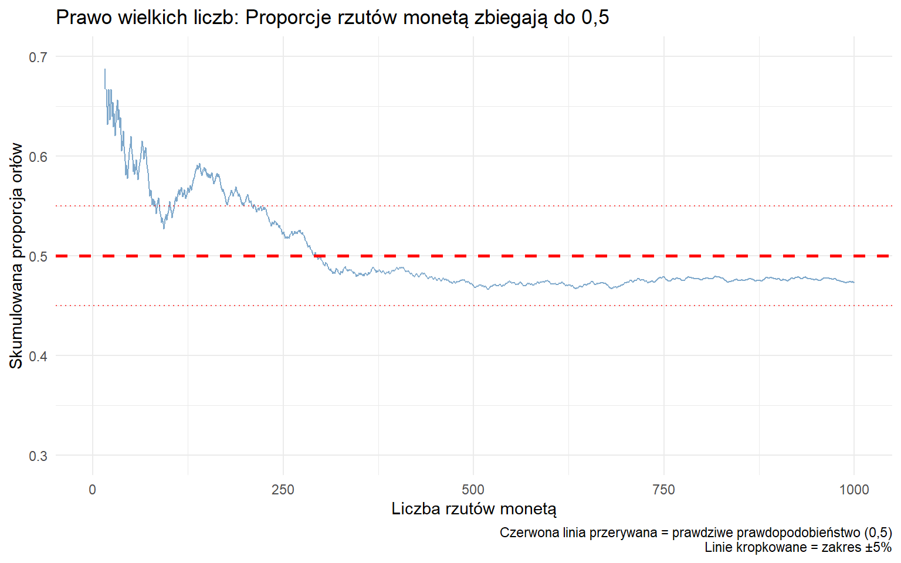
Co to pokazuje:
Początkowe rzuty wykazują duże wahania (pierwsze 10 rzutów może dać 70% lub 30% orłów)
W miarę dodawania kolejnych rzutów, proporcja stabilizuje się wokół 50%
„Szum” poszczególnych wyników się uśrednia w czasie
Sformułowanie matematyczne
Niech A oznacza zdarzenie nas interesujące (np. „orzeł w rzucie monetą”, „głos na partię X”, „suma kostek równa 7”). Jeśli P(A) = p i obserwujemy nniezależnych prób z tym samym rozkładem (i.i.d.), to częstość próbkowa zdarzeniaA:
Przykład z kostkami: Zdarzenie „suma = 7” przy dwóch kostkach ma prawdopodobieństwo 6/36 ≈ 16,7\%, podczas gdy „suma = 4” ma 3/36 ≈ 8,3\%. Przy wielu rzutach suma 7 pojawia się około dwa razy częściej niż suma 4.
Sondaże wyborcze: Jeśli poparcie populacyjne dla partii wynosi p, to przy losowym doborze próby o wielkości n obserwowana częstość \hat{p}_n będzie zbliżać się do p w miarę wzrostu n (zakładając losowy dobór i niezależność prób).
Kontrola jakości: Jeśli 2% produktów jest wadliwych, to w dużych partiach około 2% zostanie uznanych za wadliwe (zakładając niezależną produkcję).
Dlaczego to ma znaczenie dla statystyki
Wniosek: Losowość stanowi podstawę wnioskowania statystycznego, przekształcając niepewność poszczególnych wyników w przewidywalne rozkłady dla estymatorów. Prawo wielkich liczb gwarantuje, że „szum” poszczególnych wyników się uśrednia, pozwalając nam:
Przewidywać długookresowe częstości
Kwantyfikować niepewność (marginesy błędu)
Wyciągać rzetelne wnioski z prób
Formułować probabilistyczne stwierdzenia o populacjach
Ta zasada działa w sondażach, eksperymentach, a nawet w zjawiskach kwantowych (w interpretacji częstościowej).
Centralne Twierdzenie Graniczne (CTG)
Centralne Twierdzenie Graniczne stwierdza, że rozkład średnich próbkowych zbliża się do rozkładu normalnego wraz ze wzrostem wielkości próby, niezależnie od kształtu pierwotnego rozkładu populacji. Jest to prawdziwe nawet dla wysoce skośnych lub nienormalnych rozkładów populacji.
Implikacje
Próg Wielkości Próby: Wielkość próby n ≥ 30 jest zazwyczaj wystarczająca, aby zastosować CTG
Błąd Standardowy: Odchylenie standardowe średnich próbkowych wynosi σ/√n, gdzie σ to odchylenie standardowe populacji
Fundament Statystyczny: Możemy dokonywać wnioskowań o parametrach populacji używając właściwości rozkładu normalnego, nawet gdy dane bazowe nie są normalne
Dlaczego To Ma Znaczenie
Rozważmy dane o dochodach, które zazwyczaj są prawostronnie skośne z długim ogonem wysokich zarobków. Podczas gdy indywidualne dochody nie podlegają rozkładowi normalnemu, dzieje się coś niezwykłego, gdy wielokrotnie pobieramy próby i obliczamy ich średnie:
Co właściwie oznacza “normalnie rozłożone średnie próbkowe”:
Jeśli weźmiesz wiele różnych grup 30+ osób i obliczysz średni dochód każdej grupy
Te średnie grupowe utworzą wzór w kształcie dzwonu po nanieseniu na wykres
Większość średnich grupowych skupi się blisko prawdziwej średniej populacji
Prawdopodobieństwo otrzymania średniej grupowej daleko od średniej populacji staje się przewidywalne
Ten przewidywalny wzór (rozkład normalny) pozwala nam:
Obliczać przedziały ufności używając właściwości rozkładu normalnego
Przeprowadzać testy hipotez statystycznych
Dokonywać przewidywań dotyczących średnich próbkowych ze znanym prawdopodobieństwem
Konkretny Przykład: Wyobraź sobie miasto, w którym indywidualne dochody wahają się od 80 000 zł do 40 000 000 zł, silnie skośne w prawo. Jeśli:
Losowo wybierzesz 100 osób i obliczysz ich średni dochód: powiedzmy 300 000 zł
Powtórzysz to 1000 razy (1000 różnych grup po 100 osób)
Naniesieszz na wykres te 1000 średnich grupowych: utworzą krzywą dzwonową wycentrowaną wokół prawdziwej średniej populacji
Około 95% tych średnich grupowych znajdzie się w przewidywalnym zakresie
Dzieje się tak mimo że indywidualne dochody są skrajnie skośne!
Podstawy Matematyczne
Dla populacji ze średnią μ i skończoną wariancją σ²:
Rozkład próbkowy średniej: \bar{X} \sim N(\mu, \frac{\sigma^2}{n}) gdy n \to \infty
Standaryzowana średnia próbkowa: Z = \frac{\bar{X} - \mu}{\sigma/\sqrt{n}} \sim N(0,1) dla dużych n
Najważniejsze Wnioski
Uniwersalne Zastosowanie: CTG ma zastosowanie do każdego rozkładu ze skończoną wariancją
Zbieżność do Normalności: Aproksymacja do rozkładu normalnego poprawia się wraz ze wzrostem wielkości próby
Fundament Wnioskowania: Większość parametrycznych testów statystycznych opiera się na CTG
Kwestie Wielkości Próby: Chociaż n ≥ 30 jest podstawową wytyczną, wysoce skośne rozkłady mogą wymagać większych próbek dla dokładnej aproksymacji
2.13 Istotność Statystyczna: Wprowadzenie
Wyobraź sobie, że rzucasz monetą 10 razy i wypadło 8 orłów. Czy moneta jest fałszywa, czy po prostu miałeś szczęście? To jest kluczowe pytanie, na które pomaga odpowiedzieć istotność statystyczna (wnioskowanie statystyczne).
Istotność statystyczna to miara (p-value) tego, na ile możemy być pewni, że wzorce obserwowane w naszej próbie nie są dziełem przypadku. Gdy wynik jest statystycznie istotny (zwykle przyjmujemy p-value < 0.05), oznacza to, że prawdopodobieństwo uzyskania takich danych przy braku rzeczywistego efektu jest bardzo niskie.
Istotność statystyczna pomaga nam rozróżnić między rzeczywistymi zjawiskami a przypadkowymi fluktuacjami w danych. Gdy mówimy, że wynik jest statystycznie istotny, znaczy to, że prawdopodobnie nie powstał przez zwykły zbieg okoliczności.
Analogia do Sali Sądowej
Testowanie hipotez statystycznych działa jak proces karny:
Hipoteza Zerowa (H_0): Oskarżony jest niewinny (nie ma efektu)
Hipoteza Alternatywna (H_1): Oskarżony jest winny (efekt istnieje)
Dowody: Twoje dane i wyniki testów
Werdykt: “Winny” (odrzuć H_0) lub “Niewinny” (nie odrzucaj H_0)
Kluczowe rozróżnienie: “Niewinny” ≠ “Niewinny”
Werdykt “niewinny” oznacza niewystarczające dowody do skazania
Podobnie, “brak istotności statystycznej” oznacza niewystarczające dowody na istnienie efektu, NIE dowód braku efektu
Brak efektu (“Domniemanie niewinności”)
W statystyce zawsze zaczynamy od założenia, że nic specjalnego się nie dzieje:
Hipoteza Zerowa (H_0): “Nie ma efektu”
Moneta jest uczciwa
Nowy lek nie działa
Czas nauki nie wpływa na wyniki w nauce
Hipoteza Alternatywna (H_1): “Efekt ISTNIEJE”
Moneta jest fałszywa
Lek działa
Więcej nauki poprawia oceny
Kluczowa zasada: Podtrzymujemy hipotezę zerową (niewinność), chyba że dane dostarczą mocnych dowodów przeciwko niej — “ponad wszelką wątpliwość” w terminologii prawnej, lub “p < 0,05” w terminologii statystycznej.
2.14 Wartość p (p-value): Twój “Miernik Zaskoczenia”
Wartość p odpowiada na jedno konkretne pytanie:
“Gdyby nic specjalnego się nie działo (hipoteza zerowa jest prawdziwa), jak zaskakujące byłyby nasze wyniki?”
Wartość p, p-wartość, prawdopodobieństwo testowe (ang. p-value, probability value) – prawdopodobieństwo uzyskania wyników testu co najmniej tak samo skrajnych, jak te zaobserwowane w rzeczywistości (w próbie badawczej), obliczone przy założeniu, że hipoteza zerowa (brak efektu, różnicy, itp.) jest prawdziwa.
Trzy Sposoby Myślenia o Wartościach p
1. Skala Zaskoczenia
p < 0,01: Bardzo zaskakujące! (Mocne dowody przeciwko H_0)
p < 0,05: Dość zaskakujące (Umiarkowane dowody przeciwko H_0)
p > 0,05: Niezbyt zaskakujące (Niewystarczające dowody przeciwko H_0)
2. Konkretny Przykład: Podejrzana Moneta
Rzucasz monetą 10 razy i wypadło 8 orłów. Jaka jest wartość p?
Obliczenie: Jeśli moneta byłaby uczciwa, prawdopodobieństwo uzyskania 8 lub więcej orłów wynosi:
p = P(≥8 \text{ orłów w 10 rzutach}) \approx 0.055 \approx 5.5\%
Interpretacja: Jest 5,5% szans na uzyskanie tak ekstremalnych wyników z uczciwą monetą. To trochę nietypowe, ale nie jest to skrajnie nieprawdopodobny wynik.
3. Formalna Definicja
Wartość p to prawdopodobieństwo uzyskania wyników co najmniej tak ekstremalnych jak zaobserwowane, zakładając że hipoteza zerowa jest prawdziwa.
Warning
Częsty Błąd: Wartość p NIE jest prawdopodobieństwem, że hipoteza zerowa jest prawdziwa! Zakłada ona, że hipoteza zerowa jest prawdziwa i mówi, jak nietypowe byłyby twoje dane w tym świecie (w którym H_0 jest prawdziwa).
Prokurator: “Jeśli oskarżony byłby niewinny, istnieje tylko 1% szans, że znaleźlibyśmy jego DNA na miejscu zbrodni. Znaleźliśmy jego DNA. Zatem istnieje 99% pewności, że jest winny!”
To BŁĄD! Prokurator pomylił:
P(Dowód | Niewinny) = 0,01 ← To, co wiemy
P(Niewinny | Dowód) = ? ← To, co chcemy wiedzieć (ale nie możemy tego wywnioskować z samej wartości p!)
Gdy otrzymujemy p = 0,01, kuszące jest myślenie:
❌ ŹLE: “Jest tylko 1% szans, że hipoteza zerowa jest prawdziwa”
❌ ŹLE: “Jest 99% szans, że nasze leczenie działa”
✅ DOBRZE: “Jeśli hipoteza zerowa byłaby prawdziwa, istnieje tylko 1% szans, że zobaczylibyśmy tak ekstremalne dane”
Dlaczego to ważne: Prosty przykład testu medycznego
Wyobraź sobie test na rzadką chorobę, który jest dokładny w 99%:
Jeśli masz chorobę, test jest pozytywny w 99% przypadków
Jeśli nie masz choroby, test jest negatywny w 99% przypadków (czyli 1% wyników fałszywie pozytywnych)
Oto klucz: Załóżmy, że tylko 1 na 1000 osób faktycznie ma tę chorobę.
Przetestujmy 10 000 osób:
10 osób ma chorobę → 10 ma pozytywny wynik testu (w zaokrągleniu)
9 990 osób nie ma choroby → około 100 ma pozytywny wynik przez pomyłkę (1% z 9 990)
Łącznie pozytywnych testów: 110
Jeśli twój test jest pozytywny, jakie jest prawdopodobieństwo, że rzeczywiście masz chorobę?
Tylko 10 ze 110 pozytywnych testów to prawdziwe przypadki
To około 9%, nie 99%!
Analogia do badań naukowych
To samo dzieje się w badaniach:
Gdy testujemy wiele hipotez (jak testowanie wielu potencjalnych leków)
Większość nie działa (jak większość ludzi nie ma rzadkiej choroby)
Nawet przy “istotnych” wynikach (jak pozytywny test), większość odkryć może być fałszywie pozytywna
Important
Wartość p mówi ci, jak zaskakujące byłyby twoje dane, GDYBY hipoteza zerowa była prawdziwa. Nie mówi ci o prawdopodobieństwie, że hipoteza zerowa JEST prawdziwa.
Pomyśl o tym tak: Prawdopodobieństwo, że ziemia będzie mokra, JEŚLI padało, jest zupełnie inne niż prawdopodobieństwo, że padało, JEŚLI ziemia jest mokra — ziemia mogła być mokra od zraszacza!
Pamiętaj: Wartość p mówi ci P(Dane | Hipoteza zerowa jest prawdziwa), nie P(Hipoteza zerowa jest prawdziwa | Dane). To tak różne jak P(Mokra ziemia | Deszcz) i P(Deszcz | Mokra ziemia) — ziemia może być mokra od zraszacza!
2.16 Wprowadzenie do analizy regresji: Modelowanie relacji między zmiennymi
Jednym z najważniejszych narzędzi w analizie statystycznej jest analiza regresji — metoda zrozumienia i kwantyfikacji relacji między zmiennymi.
Podstawowa idea jest prosta: Jak jedna rzecz odnosi się do drugiej i czy możemy użyć tej relacji do dokonywania przewidywań (np. jak liczba lat nauki wpływa na dochody?)?
W jednym zdaniu: Regresja pomaga nam zrozumieć, jak różne zjawiska są ze sobą powiązane w skomplikowanym świecie, gdzie wszystko wpływa na wszystko inne.
Czym jest analiza regresji?
Wyobraź sobie, że jesteś ciekawy relacji między wykształceniem a dochodem. Zauważasz, że ludzie z większym wykształceniem zwykle zarabiają więcej pieniędzy, ale chcesz zrozumieć tę relację bardziej precyzyjnie:
O ile średnio każdy dodatkowy rok edukacji zwiększa dochód?
Jak silna jest ta relacja?
Czy są inne czynniki, które powinniśmy rozważyć?
Czy możemy przewidzieć prawdopodobny dochód kogoś, jeśli znamy jego poziom wykształcenia?
Analiza regresji w sposób systematyczny odpowiada na te pytania — szuka najlepiej dopasowanego opisu relacji między zmiennymi.
Zmienne i Zmienność
Zmienna to każda charakterystyka, która może przyjmować różne wartości dla różnych jednostek obserwacji. W naukach politycznych:
Jednostki analizy: Kraje, osoby, wybory, polityki, lata
Zmienne: PKB, preferencje wyborcze, wskaźnik demokracji, wystąpienie konfliktu
💡 Mówiąc Prosto: Zmienna to wszystko, co się zmienia. Gdyby wszyscy głosowali tak samo, “preferencje wyborcze” nie byłyby zmienną - byłyby stałą. Badamy zmienne, ponieważ chcemy zrozumieć, dlaczego rzeczy się różnią.
Note
Rozważmy typowy nagłówek prasowy przed wyborami: „Poparcie dla kandydata Kowalskiego sięga 68%.” Najprawdopodobniej wyciągniesz wniosek, że Kowalski ma dobre perspektywy wyborcze—nie gwarantowane zwycięstwo, ale silną pozycję. Intuicyjnie rozumiesz, że wyższe poparcie zwykle przekłada się na lepsze wyniki wyborcze, nawet jeśli związek ten nie jest doskonały.
Ta intuicyjna ocena ilustruje istotę analizy regresji. Wykorzystałeś jedną informację (wskaźnik poparcia), aby przewidzieć inny wynik (sukces wyborczy). Co więcej, rozpoznałeś zarówno związek między tymi zmiennymi, jak i niepewność związaną z twoją prognozą.
Chociaż takie nieformalne rozumowanie dobrze nam służy w życiu codziennym, ma istotne ograniczenia. O ile lepsze są szanse Kowalskiego przy 68% poparciu w porównaniu do 58%? Co się dzieje, gdy musimy jednocześnie uwzględnić wiele czynników—poparcie, sytuację gospodarczą i status urzędującego kandydata? Jak pewni powinniśmy być naszych prognoz?
Analiza regresji dostarcza systematycznych ram do odpowiedzi na te pytania. Przekształca nasze intuicyjne rozumienie związków w precyzyjne modele matematyczne, które można testować i udoskonalać. Dzięki analizie regresji badacze mogą:
Generować precyzyjne prognozy: Wyjść poza ogólne oceny ku konkretnym liczbowym szacunkom—na przykład przewidywać nie tylko, że Kowalski „prawdopodobnie wygra”, ale oszacować oczekiwany procent głosów i zakres prawdopodobnych wyników.
Określić, które czynniki są najważniejsze: Ustalić względne znaczenie różnych zmiennych—być może odkrywając, że warunki gospodarcze wpływają na wybory silniej niż wskaźniki poparcia.
Określić ilościowo niepewność prognoz: Dokładnie zmierzyć, jak pewni powinniśmy być naszych przewidywań, rozróżniając między niemal pewnymi wynikami a edukowanymi przypuszczeniami.
Testować propozycje teoretyczne danymi empirycznymi: Ocenić, czy nasze przekonania o związkach przyczynowo-skutkowych sprawdzają się, gdy testujemy je systematycznie na wielu obserwacjach.
W istocie analiza regresji systematyzuje rozpoznawanie wzorców, które wykonujemy intuicyjnie, dostarczając narzędzi do tego, aby nasze prognozy były dokładniejsze, nasze porównania bardziej znaczące, a nasze wnioski bardziej wiarygodne.
Model Podstawowy
Model reprezentuje obiekt, osobę lub system w sposób informatywny. Modele dzielą się na reprezentacje fizyczne (takie jak modele architektoniczne) i abstrakcyjne (takie jak równania matematyczne opisujące dynamikę atmosfery).
Rdzeń myślenia statystycznego można wyrazić jako:
Y = f(X) + \text{błąd}
To równanie stwierdza, że nasz wynik (Y) równa się jakiejś funkcji naszych predyktorów (X), plus nieprzewidywalna zmienność.
Składniki:
Y = Zmienna zależna (zjawisko, które chcemy wyjaśnić)
X = Zmienna(e) niezależna(e) (czynniki wyjaśniające)
f() = Związek funkcyjny (często zakładamy liniowy)
błąd (\epsilon) = Niewyjaśniona zmienność
💡 Co To Naprawdę Oznacza: Można to porównać do przepisu kulinarnego. Ocena z przedmiotu (Y) zależy od godzin nauki (X), ale nie doskonale. Dwóch studentów uczących się 10 godzin może otrzymać różne oceny z powodu stresu przed egzaminem, wcześniejszej wiedzy czy po prostu szczęścia (składnik błędu). Regresja znajduje średni związek.
Ten model stanowi podstawę całej analizy statystycznej - od prostych korelacji po złożone algorytmy uczenia maszynowego.
Regresja pomaga odpowiedzieć na fundamentalne pytania takie jak:
O ile edukacja zwiększa uczestnictwo polityczne?
Jakie czynniki przewidują sukces wyborczy?
Czy instytucje demokratyczne promują wzrost gospodarczy?
Podstawowa idea: Rysowanie najlepszej linii przez punkty
Prosta regresja liniowa (Simple Linear Regression)
Zacznijmy od najprostszego przypadku: relacji między dwiema zmiennymi. Załóżmy, że rysujemy wykształcenie (lata nauki) na osi x i roczny dochód na osi y dla 100 osób. Zobaczylibyśmy chmurę punktów, a regresja znajduje prostą linię, która najlepiej reprezentuje wzorzec w tych punktach.
Co czyni linię „najlepszą”? Linia regresji minimalizuje całkowitą sumę kwadratów pionowych odległości od wszystkich punktów do linii. Pomyśl o tym jako o znalezieniu linii, która tworzy najmniejszy całkowity błąd predykcji.
Równanie tej linii to: Y = a + bX + \text{błąd}
Lub w naszym przykładzie: \text{Dochód} = a + b \times \text{Wykształcenie} + \text{błąd}
Gdzie:
a (wyraz wolny/intercept) = przewidywany dochód przy zerowym wykształceniu
b (nachylenie/slope) = zmiana dochodu na każdy dodatkowy rok wykształcenia
błąd (e) = różnica między rzeczywistym a przewidywanym dochodem
Ktoś z 0 latami wykształcenia przewidywany jest na zarobki 15 000 zł
Każdy dodatkowy rok wykształcenia jest związany z 4000 zł większym dochodem
Ktoś z 12 latami wykształcenia przewidywany jest na zarobki: 15 000 + (4000 × 12) = 63 000 zł
Ktoś z 16 latami (licencjat) przewidywany jest na zarobki: 15 000 + (4000 × 16) = 79 000 zł
Zrozumienie relacji vs. dowodzenie przyczynowości
Kluczowe rozróżnienie: regresja pokazuje związek (association), niekoniecznie przyczynowość (causation). Nasza regresja wykształcenie-dochód pokazuje, że są powiązane, ale nie dowodzi, że wykształcenie powoduje wyższy dochód. Inne wyjaśnienia są możliwe:
Odwrotna przyczynowość: Może bogatsze rodziny mogą sobie pozwolić na więcej edukacji dla swoich dzieci
Wspólna przyczyna: Być może inteligencja lub motywacja wpływa zarówno na wykształcenie, jak i dochód
Zbieg okoliczności: W małych próbach wzorce mogą pojawić się przez przypadek
Przykład pozornej korelacji: Regresja może pokazać, że sprzedaż lodów silnie przewiduje utopienia. Czy lody powodują utopienia? Nie! Oba wzrastają latem (wspólna przyczyna, confounding variable).
Regresja wieloraka (Multiple Regression): Kontrolowanie innych czynników
Rzeczywistość jest skomplikowana — wiele czynników wpływa na wyniki jednocześnie. Regresja wieloraka pozwala nam badać jedną relację, jednocześnie „kontrolując” lub „utrzymując na stałym poziomie” inne zmienne.
Moc kontroli statystycznej
Wracając do wykształcenia i dochodu, możemy się zastanawiać: Czy efekt wykształcenia wynika tylko z tego, że wykształceni ludzie są zwykle z bogatszych rodzin lub mieszkają w miastach? Regresja wieloraka może oddzielić te efekty:
Teraz b_1 reprezentuje efekt wykształcenia po uwzględnieniu wieku, lokalizacji i pochodzenia rodzinnego. Jeśli b_1 = 3000, oznacza to: „Porównując osoby w tym samym wieku, lokalizacji i pochodzeniu rodzinnym, każdy dodatkowy rok wykształcenia jest związany z 3000 zł większym dochodem.”
Przykład demograficzny: Płodność i wykształcenie kobiet
To sugeruje, że każdy rok wykształcenia kobiet jest związany z 0,3 mniej dzieci. Ale czy wykształcenie jest przyczyną, czy wykształcone kobiety różnią się w innych aspektach? Dodając kontrole:
Teraz widzimy, że związek wykształcenia jest słabszy (-0,15 zamiast -0,3) po uwzględnieniu zamieszkania w mieście i dostępu do antykoncepcji. To sugeruje, że część pozornego efektu wykształcenia działa przez te inne ścieżki.
Typy zmiennych w regresji
Zmienna wynikowa (zależna)
To jest to, co próbujemy zrozumieć lub przewidzieć:
Dochód w naszym pierwszym przykładzie
Liczba dzieci w naszym przykładzie płodności
Oczekiwana długość życia w badaniach zdrowotnych
Prawdopodobieństwo migracji w badaniach populacyjnych
Zmienne predykcyjne (niezależne)
To są czynniki, które według nas mogą wpływać na wynik:
Ilościowe: Wiek, lata wykształcenia, dochód, odległość
Jakościowe (kategorialne): Płeć, rasa, stan cywilny, region
Obsługa zmiennych kategorialnych: Nie możemy bezpośrednio wstawić „religii” do równania. Zamiast tego tworzymy zmienne binarne:
Chrześcijanin = 1 jeśli chrześcijanin, 0 w przeciwnym razie
Muzułmanin = 1 jeśli muzułmanin, 0 w przeciwnym razie
Buddysta = 1 jeśli buddysta, 0 w przeciwnym razie
(Jedna kategoria staje się grupą referencyjną)
Różne typy regresji dla różnych wyników
Podstawowa idea regresji dostosowuje się do wielu sytuacji:
Regresja liniowa
Dla wyników ilościowych (dochód, wzrost, ciśnienie krwi): Y = a + b_1X_1 + b_2X_2 + … + \text{błąd}
Regresja logistyczna
Dla wyników binarnych (zmarł/przeżył, wyemigrował/został, żonaty/nieżonaty):
Zamiast przewidywać wynik bezpośrednio, przewidujemy prawdopodobieństwo: \log\left(\frac{p}{1-p}\right) = a + b_1X_1 + b_2X_2 + …
Gdzie p to prawdopodobieństwo wystąpienia zdarzenia.
Przykład: Przewidywanie prawdopodobieństwa migracji na podstawie wieku, wykształcenia i stanu cywilnego. Model może stwierdzić, że młodzi, wykształceni, nieżonaci ludzie mają 40% prawdopodobieństwo migracji, podczas gdy starsi, mniej wykształceni, żonaci ludzie mają tylko 5% prawdopodobieństwo.
Regresja Poissona
Dla wyników “zliczeniowych”/count data (liczba dzieci, liczba wizyt u lekarza): \log(\text{oczekiwana liczba}) = a + b_1X_1 + b_2X_2 + …
Przykład: Modelowanie liczby dzieci na podstawie charakterystyk kobiet. Przydatne, ponieważ zapewnia, że przewidywania nigdy nie są ujemne (nie można mieć -0,5 dziecka!).
Analiza przeżycia (model Coxa)/Regresja hazardu
Do czego służy: Przewidywanie kiedy coś się stanie, nie tylko czy się stanie.
Problem: Wyobraź sobie, że badasz jak długo trwają małżeństwa. Obserwujesz 1000 par przez 10 lat, ale na koniec badania: - 400 par się rozwiodło (wiesz dokładnie kiedy) - 600 par jest nadal w małżeństwie (nie wiesz czy/kiedy się rozwiodą)
Zwykła regresja nie radzi sobie z tym problemem “niekompletnej historii” — te 600 trwających małżeństw zawiera cenne informacje, ale nie znamy jeszcze ich zakończenia.
Jak pomagają modele Coxa: Zamiast próbować przewidzieć dokładny moment, skupiają się na ryzyku względnym — kto ma większą szansę na wcześniejsze doświadczenie zdarzenia. To jak pytanie “W dowolnym momencie, kto jest bardziej narażony?” zamiast “Dokładnie kiedy to się stanie?”
Zastosowania praktyczne: - Badania medyczne: Kto szybciej reaguje na leczenie? - Biznes: Którzy klienci wcześniej rezygnują z subskrypcji? - Nauki społeczne: Jakie czynniki powodują, że wydarzenia życiowe następują wcześniej/później?
Interpretacja wyników regresji
Współczynniki
Współczynnik mówi nam o oczekiwanej zmianie wyniku przy wzroście predyktora o jedną jednostkę, przy zachowaniu stałości innych zmiennych.
Przykłady interpretacji:
Regresja liniowa dla dochodu:
„Każdy dodatkowy rok wykształcenia jest związany z 3500 zł wyższym rocznym dochodem, kontrolując wiek i doświadczenie”
Regresja logistyczna dla śmiertelności niemowląt:
„Każda dodatkowa wizyta prenatalna jest związana z 15% niższymi szansami śmierci niemowlęcia, kontrolując wiek i wykształcenie matki”
Regresja wieloraka dla oczekiwanej długości życia:
„Każde 1000 USD wzrostu PKB per capita jest związane z 0,4 roku dłuższą oczekiwaną długością życia, po kontroli wykształcenia i dostępu do opieki zdrowotnej”
Istotność statystyczna
Regresja testuje również, czy relacje mogą wynikać z przypadku:
wartość p < 0,05: Relacja nieprawdopodobna z powodu przypadku (statystycznie istotna)
wartość p > 0,05: Relacja może być prawdopodobnie losową zmiennością
Ale pamiętaj: Istotność statystyczna ≠ praktyczne znaczenie (“praktyczna istotność”). Przy dużych próbach malutkie efekty stają się „istotne”.
Przedziały ufności dla współczynników
Tak jak mamy przedziały ufności dla średnich lub propocji, mamy je dla współczynników regresji:
„Efekt wykształcenia na dochód wynosi 3500 zł rocznie, 95% CI: [2800 zł, 4200 zł]”
To oznacza, że jesteśmy 95% pewni, że prawdziwy efekt mieści się między 2800 zł a 4200 zł.
R-kwadrat: Jak dobrze model pasuje do danych?
R^2 (R-kwadrat) mierzy proporcję zmienności wyniku wyjaśnioną przez predyktory:
R^2 = 0: Predyktory nic nie wyjaśniają
R^2 = 1: Predyktory wyjaśniają wszystko
R^2 = 0,3: Predyktory wyjaśniają 30% zmienności
Przykład: Model dochodu z tylko wykształceniem może mieć R^2 = 0,15 (wykształcenie wyjaśnia 15% zmienności dochodu). Dodanie wieku, doświadczenia i lokalizacji może zwiększyć R^2 do 0,35 (razem wyjaśniają 35%).
Założenia i ograniczenia
Regresja opiera się na założeniach, które mogą nie być spełnione:
Egzogeniczność (brak ukrytych zależności)
Najważniejsze założenie: predyktory nie mogą być skorelowane z błędami. Prościej mówiąc, nie powinny istnieć ukryte czynniki wpływające jednocześnie na zmienne objaśniające i wynik.
Przykład: Badając wpływ edukacji na dochód, ale pomijając “zdolności”, otrzymasz obciążone wyniki - zdolności wpływają zarówno na poziom wykształcenia, jak i dochód. To założenie zapisujemy jako: E[\varepsilon | X] = 0
Dlaczego to kluczowe: Bez tego wszystkie twoje współczynniki są błędne, nawet przy milionach obserwacji!
Liniowość
Zakłada związki prostoliniowe. A co jeśli wpływ edukacji na dochód jest silniejszy na wyższych poziomach? Możemy dodać człony wielomianowe: \text{Dochód} = a + b_1 \times \text{Edukacja} + b_2 \times \text{Edukacja}^2
Niezależność
Zakłada, że obserwacje są niezależne. Ale członkowie rodziny mogą być podobni, powtarzane pomiary tej samej osoby są powiązane, a sąsiedzi mogą na siebie wpływać. Specjalne metody radzą sobie z tymi zależnościami.
Homoskedastyczność
Zakłada stałą wariancję błędów. Ale błędy predykcji mogą być większe dla osób o wysokich dochodach niż niskich. Wykresy diagnostyczne pomagają to wykryć.
Normalność
Zakłada, że błędy mają rozkład normalny. Ważne dla małych prób i testów hipotez, mniej krytyczne dla dużych prób.
Uwaga: Pierwsze założenie (egzogeniczność) dotyczy otrzymania poprawnej odpowiedzi. Pozostałe dotyczą głównie precyzji i wnioskowania statystycznego. Naruszenie egzogeniczności oznacza, że model jest fundamentalnie błędny; naruszenie pozostałych oznacza, że przedziały ufności i p-wartości mogą być niedokładne.
Częste pułapki statystyczne
Endogeniczność (obciążenie pominiętą zmienną): Zapominanie o ukrytych czynnikach wpływających zarówno na X jak i Y, co narusza fundamentalne założenie egzogeniczności. Przykład: Badanie edukacja→dochód bez uwzględnienia zdolności.
Symultaniczność/Odwrotna przyczynowość: Gdy X i Y określają się wzajemnie w tym samym czasie. Prosta regresja zakłada jednokierunkową przyczynowość, ale rzeczywistość często jest dwukierunkowa. Przykład: Cena wpływa na popyt ORAZ popyt wpływa na cenę jednocześnie.
Zmienne zakłócające (confounding): Nieuwzględnienie zmiennych wpływających zarówno na predyktor jak i wynik, co prowadzi do pozornych zależności. Przykład: Sprzedaż lodów koreluje z utonięciami (oba powodowane przez lato).
Błąd selekcji: Nielosowe próby systematycznie wykluczające pewne grupy, uniemożliwiające generalizację. Przykład: Badanie użycia internetu tylko wśród posiadaczy smartfonów.
Błąd ekologiczny: Zakładanie, że wzorce grupowe dotyczą jednostek. Przykład: Bogate kraje mają niższą dzietność ≠ bogaci ludzie mają mniej dzieci.
P-hacking (drążenie danych): Testowanie wielu hipotez aż do znalezienia istotności, lub modyfikowanie analizy aż p < 0,05. Przy 20 testach spodziewasz się 1 fałszywego wyniku przez przypadek!
Przeuczenie (overfitting): Budowanie modelu zbyt złożonego dla twoich danych - idealny na danych treningowych, bezużyteczny do predykcji. Pamiętaj: Z wystarczającą liczbą parametrów możesz dopasować słonia.
Błąd przetrwania: Analizowanie tylko “ocalałych” ignorując porażki. Przykład: Badanie firm sukcesu pomijając te, które zbankrutowały.
Nadmierna generalizacja: Rozszerzanie wniosków poza badaną populację, okres czasu lub kontekst. Przykład: Wyniki z amerykańskich studentów ≠ uniwersalne zachowanie ludzkie.
Pamiętaj: Pierwsze trzy to formy endogeniczności - naruszają E[\varepsilon|X]=0 i sprawiają, że współczynniki są fundamentalnie błędne. Pozostałe czynią wyniki mylącymi lub niereprezentatywnymi.
Zastosowania w demografii
Analiza płodności
Zrozumienie, jakie czynniki wpływają na decyzje o płodności: \text{Dzieci} = f(\text{Wykształcenie, Dochód, Miasto, Religia, Antykoncepcja, …})
Pomaga zidentyfikować dźwignie polityczne dla krajów zaniepokojonych wysoką lub niską płodnością.
Modelowanie śmiertelności
Przewidywanie oczekiwanej długości życia lub ryzyka śmiertelności: \text{Ryzyko śmiertelności} = f(\text{Wiek, Płeć, Palenie, Wykształcenie, Dostęp do opieki zdrowotnej, …})
Używane przez firmy ubezpieczeniowe, urzędników zdrowia publicznego i badaczy.
Przewidywanie migracji
Zrozumienie, kto migruje i dlaczego: P(\text{Migracja}) = f(\text{Wiek, Wykształcenie, Zatrudnienie, Więzi rodzinne, Odległość, …})
Pomaga przewidywać przepływy populacji i planować zmiany demograficzne.
Małżeństwo i rozwód
Analizowanie formowania i rozpadu związków: P(\text{Rozwód}) = f(\text{Wiek przy małżeństwie, Dopasowanie wykształcenia, Dochód, Dzieci, Czas trwania, …})
Informuje politykę społeczną i usługi wsparcia.
Powszechne pułapki i jak ich unikać
Przeuczenie (Overfitting)
Włączenie zbyt wielu predyktorów może sprawić, że model idealnie pasuje do twojej próby, ale zawiedzie z nowymi danymi. Jak zapamiętywanie odpowiedzi na egzamin zamiast zrozumienia pojęć.
Rozwiązanie: Użyj prostszych modeli, walidacji krzyżowej lub zarezerwuj niektóre dane do testowania.
Współliniowość (Multicollinearity)
Gdy predyktory są silnie skorelowane (np. lata wykształcenia i poziom stopnia), model nie może oddzielić ich efektów.
Rozwiązanie: Wybierz jedną zmienną lub połącz je w indeks.
Pominięcie ważnych zmiennych może sprawić, że inne efekty wydają się silniejsze lub słabsze niż naprawdę są.
Przykład: Relacja między sprzedażą lodów a wskaźnikami przestępczości znika, gdy kontrolujesz temperaturę.
Ekstrapolacja
Używanie modelu poza zakresem obserwowanych danych.
Przykład: Jeśli twoje dane obejmują wykształcenie od 0-20 lat, nie przewiduj dochodu dla kogoś z 30 latami wykształcenia.
Intuicje
Pomyśl o regresji jako o wyrafinowanej technice uśredniania:
Prosta średnia: „Średni dochód wynosi 50 000 zł”
Średnia warunkowa: „Średni dochód dla absolwentów uczelni wynosi 70 000 zł”
Regresja: „Średni dochód dla 35-letnich absolwentów uczelni w obszarach miejskich wynosi 78 000 zł”
Każda dodana zmienna czyni nasze przewidywanie bardziej konkretnym i (miejmy nadzieję) dokładniejszym.
Regresja w praktyce: Kompletny przykład
Pytanie badawcze: Jakie czynniki wpływają na wiek przy pierwszym porodzie?
Dane: Badanie 1000 kobiet, które miały co najmniej jedno dziecko
Zmienne:
Wynik: Wiek przy pierwszym porodzie (lata)
Predyktory: Wykształcenie (lata), Miasto (0/1), Dochód (tysiące), Religijność (0/1)
Wynik prostej regresji: \text{Wiek przy pierwszym porodzie} = 18 + 0,8 \times \text{Wykształcenie}
Interpretacja: Każdy rok wykształcenia związany z 0,8 roku późniejszym pierwszym porodem.
Wynik regresji wielorakiej: \text{Wiek przy pierwszym porodzie} = 16 + 0,5 \times \text{Wykształcenie} + 2 \times \text{Miasto} + 0,03 \times \text{Dochód} - 1,5 \times \text{Religijność}
Interpretacja:
Efekt wykształcenia zredukowany, ale nadal dodatni (0,5 roku na rok wykształcenia)
Kobiety miejskie mają pierwsze porody 2 lata później
Każde 1000 zł dochodu związane z 0,03 roku (11 dni) później
Religijne kobiety mają pierwsze porody 1,5 roku wcześniej
R^2 = 0,42 (model wyjaśnia 42% zmienności)
Ten bogatszy model pomaga nam zrozumieć, że efekt wykształcenia częściowo działa przez zamieszkanie w mieście i dochód.
Warning
Regresja jest bramą do zaawansowanego modelowania statystycznego. Gdy zrozumiesz podstawową koncepcję — używanie zmiennych do przewidywania wyników i kwantyfikowania relacji — możesz eksplorować:
Efekty interakcji: Gdy efekt jednej zmiennej zależy od innej
Relacje nieliniowe: Krzywe, progi i złożone wzorce
Modele wielopoziomowe: Uwzględnianie zgrupowanych danych (uczniowie w szkołach, ludzie w dzielnicach)
Regresja szeregów czasowych: Analizowanie zmian w czasie
Rozszerzenia uczenia maszynowego: Lasy losowe, sieci neuronowe i więcej
Kluczowy wgląd pozostaje: Próbujemy zrozumieć, jak rzeczy odnoszą się do siebie w systematyczny, kwantyfikowalny sposób.
2.17 Jakość i źródła danych
Żadna analiza nie jest lepsza niż dane, na których się opiera. Zrozumienie problemów jakości danych jest kluczowe dla badań demograficznych i społecznych.
Wymiary jakości danych
Dokładność (Accuracy): Jak blisko pomiarów są prawdziwe wartości?
Przykład: Raportowanie wieku często pokazuje „skupianie” na okrągłych liczbach (30, 40, 50), ponieważ ludzie zaokrąglają swój wiek.
Kompletność (Completeness): Jaka proporcja populacji jest objęta?
Przykład: Kompletność rejestracji urodzeń różni się znacznie:
Kraje rozwinięte: >99%
Niektóre kraje rozwijające się: <50%
Aktualność (Timeliness): Jak aktualne są dane?
Przykład: Spis przeprowadzany co 10 lat staje się coraz bardziej nieaktualny, szczególnie w szybko zmieniających się obszarach.
Spójność (Consistency): Czy definicje i metody są stabilne w czasie i przestrzeni?
Przykład: Definicja „miasta” różni się między krajami, utrudniając międzynarodowe porównania.
Dostępność (Accessibility): Czy badacze i decydenci mogą faktycznie używać danych?
Powszechne źródła danych w demografii
Spis powszechny (Census): Kompletne wyliczenie populacji
Zalety:
Kompletne pokrycie (w teorii)
Dane dla małych obszarów dostępne
Punkt odniesienia dla innych oszacowań
Wady:
Drogie i rzadkie
Niektóre populacje trudne do policzenia
Ograniczone zbierane zmienne
Rejestry urzędu stanu cywilnego (Vital Registration): Ciągłe rejestrowanie urodzeń, zgonów, małżeństw
Zalety:
Ciągłe i aktualne
Wymóg prawny zapewnia zgodność
Informacje o medycznej przyczynie śmierci
Wady:
Pokrycie różni się według poziomu rozwoju
Jakość kodowania przyczyny śmierci się różni
Opóźniona rejestracja powszechna w niektórych obszarach
Badania próbkowe (Sample Surveys): Szczegółowe dane z podzbioru populacji
Przykłady:
Badania demograficzne i zdrowotne (DHS)
Amerykańskie Badanie Społeczności (ACS)
Badania Siły Roboczej (np. BAEL GUS)
Zalety:
Można zbierać szczegółowe informacje
Częstsze niż spis
Można skupić się na konkretnych tematach
Wady:
Obecny błąd próbkowania
Małe obszary niereprezentowane
Obciążenie odpowiedzi może zmniejszyć jakość
Rejestry administracyjne (Administrative Records): Dane zbierane do celów niestatystycznych
Przykłady:
Rejestry podatkowe
Zapisy szkolne
Roszczenia ubezpieczenia zdrowotnego
Dane telefonii komórkowej
Zalety:
Już zebrane (bez dodatkowego obciążenia)
Często kompletne dla objętej populacji
Ciągle aktualizowane
Wady:
Pokrycie może być selektywne
Definicje mogą nie odpowiadać potrzebom badawczym
Dostęp często ograniczony
Problemy jakości danych specyficzne dla demografii
Skupianie wieku (Age Heaping): Tendencja do raportowania wieku kończącego się na 0 lub 5
Wykrywanie: Oblicz Indeks Whipple’a lub Indeks Myersa
Wpływ: Wpływa na wskaźniki specyficzne dla wieku i projekcje
Preferencja cyfr (Digit Preference): Raportowanie niektórych końcowych cyfr częściej niż innych
Przykład: Wagi urodzeniowe często raportowane jako 3000g, 3500g zamiast dokładnych wartości
Obciążenie przypominania (Recall Bias): Trudność dokładnego przypominania przeszłych wydarzeń
Przykład: „Ile razy odwiedziłeś lekarza w zeszłym roku?” Często niedoszacowane dla częstych odwiedzających, przeszacowane dla rzadkich odwiedzających.
Raportowanie przez pełnomocnika (Proxy Reporting): Informacje dostarczane przez kogoś innego
Wyzwanie: Głowa gospodarstwa domowego raportująca za wszystkich członków może nie znać dokładnego wieku lub wykształcenia każdego
2.18 Względy etyczne w demografii statystycznej
Statystyka to nie tylko liczby — dotyczy prawdziwych ludzi i ma prawdziwe konsekwencje.
Świadoma zgoda
Uczestnicy powinni zrozumieć:
Cel zbierania danych
Jak dane będą używane
Ryzyka i korzyści
Ich prawo do odmowy lub wycofania się
Wyzwanie w demografii: Uczestnictwo w spisie jest często obowiązkowe, co rodzi pytania etyczne o zgodę.
Poufność i prywatność
Statystyczna kontrola ujawniania: Ochrona tożsamości jednostek w opublikowanych danych
Metody obejmują:
Tłumienie małych komórek (np. „<5” zamiast „2”)
Agregacja geograficzna
Przykład: W tabeli zawodu według wieku według płci dla małego miasta może być tylko jedna lekarka w wieku 60-65 lat, co czyni ją identyfikowalną.
Reprezentacja i uczciwość
Kto jest liczony?: Decyzje o tym, kogo uwzględnić, wpływają na reprezentację
Więźniowie: Gdzie są liczeni — lokalizacja więzienia czy adres domowy?
Bezdomni: Jak zapewnić pokrycie?
Nieudokumentowani imigranci: Uwzględnić czy wykluczyć?
Prywatność różnicowa (Differential Privacy): Matematyczna struktura ochrony prywatności przy zachowaniu użyteczności statystycznej
Kompromis: Większa ochrona prywatności = mniej dokładne statystyki
Niewłaściwe użycie statystyk
Wybieranie wisienek (Cherry-Picking): Wybieranie tylko korzystnych wyników
Przykład: Raportowanie spadku ciąż nastolatek od roku szczytowego zamiast pokazywania pełnego trendu
P-Hacking: Manipulowanie analizą w celu osiągnięcia istotności statystycznej
Błąd ekologiczny: Wnioskowanie relacji indywidualnych z danych grupowych
Przykład: Powiaty z większą liczbą imigrantów mają wyższe średnie dochody ≠ imigranci mają wyższe dochody
Odpowiedzialne raportowanie
Komunikacja niepewności: Zawsze raportuj przedziały ufności lub marginesy błędu
Dostarczanie kontekstu: Uwzględnij odpowiednie grupy porównawcze i trendy historyczne
Uznanie ograniczeń: Jasno określ, co dane mogą i nie mogą pokazać
2.19 Powszechne nieporozumienia w statystyce
Zrozumienie, czym statystyka NIE jest, jest równie ważne jak zrozumienie, czym jest.
Nieporozumienie 1: „Statystyki mogą udowodnić wszystko”
Rzeczywistość: Statystyki mogą dostarczyć tylko dowodów, nigdy absolutnego dowodu. A właściwa statystyka, uczciwie zastosowana, znacznie ogranicza wnioski.
Przykład: Badanie znajduje korelację między sprzedażą lodów a utopieniami. Statystyka nie „dowodzi”, że lody powodują utopienia — oba są związane z letnią pogodą.
Nieporozumienie 2: „Większe próby są zawsze lepsze”
Rzeczywistość: Poza pewnym punktem większe próby dodają niewiele precyzji, ale mogą dodać obciążenie.
Przykład: Ankieta online z 1 milionem odpowiedzi może być mniej dokładna niż próba probabilistyczna 1000 osób z powodu obciążenia samoselekcji.
Malejące zyski:
n = 100: Margines błędu \approx 10 pp.
n = 1000: Margines błędu \approx 3,2 pp.
n = 10 000: Margines błędu \approx 1 pp.
n = 100 000: Margines błędu \approx 0,32 pp.
Skok z 10 000 do 100 000 ledwo poprawia precyzję, ale kosztuje 10\times więcej.
Rzeczywistość: Korelacja jest konieczna, ale niewystarczająca dla przyczynowości.
Klasyczne przykłady:
Miasta z większą liczbą kościołów mają więcej przestępstw (oba korelują z wielkością populacji)
Kraje z większą liczbą telewizorów mają dłuższą oczekiwaną długość życia (oba korelują z rozwojem)
Nieporozumienie 5: “Losowy oznacza przypadkowy”
Rzeczywistość: Statystyczna losowość jest starannie kontrolowana i systematyczna.
Przykład: Losowe próbkowanie wymaga starannej procedury, a nie tylko chwytania kogokolwiek wygodnego.
Nieporozumienie 6: “Średnia reprezentuje wszystkich”
Rzeczywistość: Średnie mogą być mylące, gdy rozkłady są skośne lub wielomodalne.
Przykład: Średni dochód bywalców baru wynosi 50 000 zł. Bill Gates wchodzi. Teraz średnia wynosi 1 milion zł. Rzeczywisty dochód nikogo się nie zmienił.
Rzeczywistość: Ekstrapolacja zakłada, że warunki pozostają stałe.
Przykład: Liniowa projekcja wzrostu populacji z lat 1950-2000 źle przeszacowałaby populację 2050 roku, ponieważ pomija spadek płodności.
2.20 Zastosowania w demografii
Szacowanie i projekcja populacji
Oszacowania międzyspisowe: Szacowanie populacji między spisami
Metoda komponentów: P(t+1) = P(t) + B - D + I - E
Gdzie:
P(t) = Populacja w czasie t
B = Urodzenia
D = Zgony
I = Imigracja
E = Emigracja
Każdy komponent szacowany z różnych źródeł z różnymi strukturami błędów.
Projekcje populacji: Prognozowanie przyszłej populacji
Metoda komponentów kohortowych:
Prognozuj wskaźniki przeżycia według wieku
Prognozuj wskaźniki płodności
Prognozuj wskaźniki migracji
Zastosuj do populacji bazowej
Zagreguj wyniki
Niepewność wzrasta z horyzontem projekcji.
Obliczanie wskaźników demograficznych
Wskaźniki surowe (Crude Rates): Zdarzenia na 1000 populacji
\text{Surowy współczynnik urodzeń} = \frac{\text{Urodzenia}}{\text{Populacja w połowie roku}} \times 1000
Wskaźniki specyficzne dla wieku (Age-Specific Fertility Rate): Kontrola struktury wieku
\text{Współczynnik płodności specyficzny dla wieku} = \frac{\text{Urodzenia kobietom w wieku } x}{\text{Kobiety w wieku } x} \times 1000
Standaryzacja: Porównywanie populacji z różnymi strukturami
Standaryzacja bezpośrednia: Zastosuj wskaźniki populacji do standardowej struktury wieku Standaryzacja pośrednia: Zastosuj standardowe wskaźniki do struktury wieku populacji
Analiza tablic trwania życia
Tablice życia podsumowują doświadczenie śmiertelności populacji.
Kluczowe kolumny:
q_x: Prawdopodobieństwo śmierci między wiekiem x a x+1
l_x: Liczba przeżywających do wieku x (ze 100 000 urodzeń)
d_x: Zgony między wiekiem x a x+1
L_x: Osobo-lata przeżyte między wiekiem x a x+1
e_x: Oczekiwana długość życia w wieku x
Przykład interpretacji: Jeśli q_{65} = 0,015, to 1,5% 65-latków umrze przed osiągnięciem 66 lat. Jeśli e_{65} = 18,5, to 65-latkowie średnio żyją jeszcze 18,5 roku.
Analiza płodności
Współczynnik dzietności całkowitej (TFR - Total Fertility Rate): Średnia liczba dzieci na kobietę przy obecnych wskaźnikach płodności specyficznych dla wieku (ASFR - Age-Specific Fertility Rate)
Przykład: Jeśli każda 5-letnia grupa wiekowa od 15-49 ma ASFR = 20 na 1000: \text{TFR} = 7 \text{ grup wiekowych} \times \frac{20}{1000} \times 5 \text{ lat} = 0,7 \text{ dzieci na kobietę}
Ten bardzo niski TFR wskazuje na płodność poniżej poziomu zastępowalności.
Python: Język programowania ogólnego przeznaczenia z bibliotekami statystycznymi
Biblioteki: pandas, numpy, scipy, statsmodels
Zalety: Integracja z innymi aplikacjami
2.22 Zakończenie
Podsumowanie kluczowych terminów
Statystyka: Nauka o zbieraniu, organizowaniu, analizowaniu, interpretowaniu i prezentowaniu danych w celu zrozumienia zjawisk i wsparcia podejmowania decyzji
Statystyka opisowa: Metody podsumowywania i prezentowania danych w znaczący sposób bez rozszerzania wniosków poza obserwowane dane
Statystyka wnioskowania: Techniki wyciągania wniosków o populacjach z prób, w tym estymacja i testowanie hipotez
Populacja: Kompletny zbiór jednostek, obiektów lub pomiarów, o których chcemy wyciągnąć wnioski
Próba: Podzbiór populacji, który jest faktycznie obserwowany lub mierzony w celu dokonania wniosków o populacji
Superpopulacja: Teoretyczna nieskończona populacja, z której obserwowane skończone populacje są uważane za próby
Parametr: Liczbowa charakterystyka populacji (zazwyczaj nieznana i oznaczana literami greckimi)
Statystyka: Liczbowa charakterystyka obliczona z danych z próby (znana i oznaczana literami łacińskimi)
Estymator: Reguła lub formuła do obliczania oszacowań parametrów populacji z danych z próby
Estimand: Konkretny parametr populacji będący celem estymacji
Oszacowanie: Wartość liczbowa uzyskana przez zastosowanie estymatora do obserwowanych danych
Błąd losowy: Nieprzewidywalna zmienność wynikająca z procesu próbkowania, która maleje z większymi próbami
Błąd systematyczny (Obciążenie): Konsekwentne odchylenie od prawdziwych wartości, którego nie można zmniejszyć przez zwiększenie wielkości próby
Próbkowanie: Proces wyboru podzbioru jednostek z populacji do pomiaru
Operat losowania: Lista lub urządzenie, z którego pobierana jest próba, idealnie zawierające wszystkich członków populacji
Próbkowanie probabilistyczne: Metody próbkowania, w których każdy członek populacji ma znane, niezerowe prawdopodobieństwo selekcji
Proste losowanie: Każda możliwa próba wielkości n ma równe prawdopodobieństwo selekcji
Losowanie systematyczne: Wybór co k-tego elementu z uporządkowanego operanta losowania
Losowanie warstwowe: Podział populacji na jednorodne podgrupy przed próbkowaniem w każdej
Losowanie grupowe: Wybór grup (klastrów) zamiast jednostek
Próbkowanie nieprobabilistyczne: Metody próbkowania bez gwarantowanych znanych prawdopodobieństw selekcji
Próbkowanie wygodne: Wybór oparty wyłącznie na łatwości dostępu
Próbkowanie celowe: Celowy wybór oparty na osądzie badacza
Próbkowanie kwotowe: Wybór w celu dopasowania proporcji populacji w kluczowych charakterystykach bez losowej selekcji
Próbkowanie kuli śnieżnej: Uczestnicy rekrutują dodatkowych uczestników ze swoich znajomych
Margines błędu: Maksymalna oczekiwana różnica między oszacowaniem a parametrem przy określonym poziomie ufności
Przedział ufności: Zakres prawdopodobnych wartości dla parametru przy określonym poziomie ufności
Poziom ufności: Prawdopodobieństwo, że metoda przedziału ufności wytworzy przedziały zawierające parametr
Dane: Zebrane obserwacje lub pomiary
Dane ilościowe: Pomiary liczbowe (ciągłe lub dyskretne)
Dane jakościowe: Informacje kategoryczne (nominalne lub porządkowe)
Rozkład danych: Opis tego, jak wartości rozkładają się na możliwe wyniki
Rozkład częstości: Podsumowanie pokazujące, jak często każda wartość występuje w danych
Częstość bezwzględna: Liczba obserwacji dla każdej wartości
Częstość względna: Proporcja obserwacji w każdej kategorii
Częstość skumulowana: Suma bieżąca częstości do każdej wartości
2.23 Załącznik A: Visualizations for Statistics & Demography
## ============================================## Visualizations for Statistics & Demography## Chapter 1: Foundations## ============================================# Load required librarieslibrary(ggplot2)library(dplyr)library(tidyr)library(gridExtra)library(scales)library(patchwork) # for combining plots# Set theme for all plotstheme_set(theme_minimal(base_size =12))# Color palette for consistencycolors <-c("#2E86AB", "#A23B72", "#F18F01", "#C73E1D", "#6A994E")# ==================================================# 1. POPULATION vs SAMPLE VISUALIZATION# ==================================================# Create a population and sample visualizationset.seed(123)# Generate population data (e.g., ages of 10,000 people)population <-data.frame(id =1:10000,age =round(rnorm(10000, mean =40, sd =15)))population$age[population$age <0] <-0population$age[population$age >100] <-100# Take a random samplesample_size <-500sample_data <- population[sample(nrow(population), sample_size), ]# Create visualizationp1 <-ggplot(population, aes(x = age)) +geom_histogram(binwidth =5, fill = colors[1], alpha =0.7, color ="white") +geom_vline(xintercept =mean(population$age), color = colors[2], linetype ="dashed", size =1.2) +labs(title ="Population Distribution (N = 10,000)",subtitle =paste("Population mean (μ) =", round(mean(population$age), 2), "years"),x ="Age (years)", y ="Frequency") +theme(plot.title =element_text(face ="bold"))p2 <-ggplot(sample_data, aes(x = age)) +geom_histogram(binwidth =5, fill = colors[3], alpha =0.7, color ="white") +geom_vline(xintercept =mean(sample_data$age), color = colors[4], linetype ="dashed", size =1.2) +labs(title =paste("Sample Distribution (n =", sample_size, ")"),subtitle =paste("Sample mean (x̄) =", round(mean(sample_data$age), 2), "years"),x ="Age (years)", y ="Frequency") +theme(plot.title =element_text(face ="bold"))# Combine plotspopulation_sample_plot <- p1 / p2print(population_sample_plot)
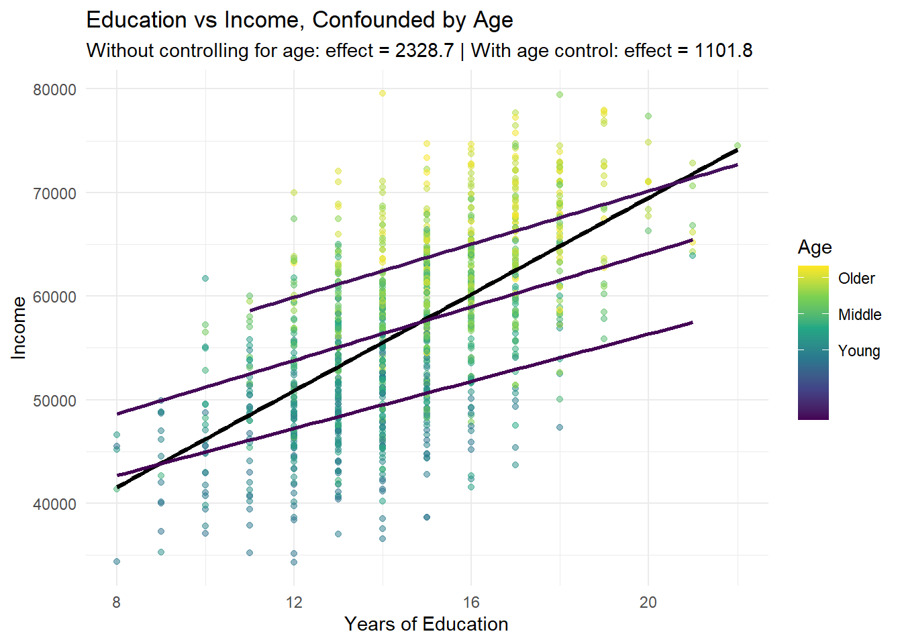
# ==================================================# 2. TYPES OF DATA DISTRIBUTIONS# ==================================================# Generate different distribution typesset.seed(456)n <-5000# Normal distributionnormal_data <-rnorm(n, mean =50, sd =10)# Right-skewed distribution (income-like)right_skewed <-rgamma(n, shape =2, scale =15)# Left-skewed distribution (age at death in developed country)left_skewed <-90-rgamma(n, shape =3, scale =5)left_skewed[left_skewed <0] <-0# Bimodal distribution (e.g., height of mixed male/female population)n2 <-20000nf <- n2 %/%2; nm <- n2 - nfbimodal <-c(rnorm(nf, mean =164, sd =5),rnorm(nm, mean =182, sd =5))# Create data framedistributions_df <-data.frame(Normal = normal_data,`Right Skewed`= right_skewed,`Left Skewed`= left_skewed,Bimodal = bimodal) %>%pivot_longer(everything(), names_to ="Distribution", values_to ="Value")# Plot distributionsdistributions_plot <-ggplot(distributions_df, aes(x = Value, fill = Distribution)) +geom_histogram(bins =30, alpha =0.7, color ="white") +facet_wrap(~Distribution, scales ="free", nrow =2) +scale_fill_manual(values = colors[1:4]) +labs(title ="Types of Data Distributions",subtitle ="Common patterns in demographic data",x ="Value", y ="Frequency") +theme(plot.title =element_text(face ="bold", size =14),legend.position ="none")print(distributions_plot)
# ==================================================# 3. NORMAL DISTRIBUTION WITH 68-95-99.7 RULE# ==================================================# Generate normal distribution dataset.seed(789)mean_val <-100sd_val <-15x <-seq(mean_val -4*sd_val, mean_val +4*sd_val, length.out =1000)y <-dnorm(x, mean = mean_val, sd = sd_val)df_norm <-data.frame(x = x, y = y)# Create the plotnormal_plot <-ggplot(df_norm, aes(x = x, y = y)) +# Fill areas under the curvegeom_area(data =subset(df_norm, x >= mean_val - sd_val & x <= mean_val + sd_val),aes(x = x, y = y), fill = colors[1], alpha =0.3) +geom_area(data =subset(df_norm, x >= mean_val -2*sd_val & x <= mean_val +2*sd_val),aes(x = x, y = y), fill = colors[2], alpha =0.2) +geom_area(data =subset(df_norm, x >= mean_val -3*sd_val & x <= mean_val +3*sd_val),aes(x = x, y = y), fill = colors[3], alpha =0.1) +# Add the curvegeom_line(size =1.5, color ="black") +# Add vertical lines for standard deviationsgeom_vline(xintercept = mean_val, linetype ="solid", size =1, color ="black") +geom_vline(xintercept =c(mean_val - sd_val, mean_val + sd_val), linetype ="dashed", size =0.8, color = colors[1]) +geom_vline(xintercept =c(mean_val -2*sd_val, mean_val +2*sd_val), linetype ="dashed", size =0.8, color = colors[2]) +geom_vline(xintercept =c(mean_val -3*sd_val, mean_val +3*sd_val), linetype ="dashed", size =0.8, color = colors[3]) +# Add labelsannotate("text", x = mean_val, y =max(y) *0.5, label ="68%", size =5, fontface ="bold", color = colors[1]) +annotate("text", x = mean_val, y =max(y) *0.3, label ="95%", size =5, fontface ="bold", color = colors[2]) +annotate("text", x = mean_val, y =max(y) *0.1, label ="99.7%", size =5, fontface ="bold", color = colors[3]) +# Labelsscale_x_continuous(breaks =c(mean_val -3*sd_val, mean_val -2*sd_val, mean_val - sd_val, mean_val, mean_val + sd_val, mean_val +2*sd_val, mean_val +3*sd_val),labels =c("μ-3σ", "μ-2σ", "μ-σ", "μ", "μ+σ", "μ+2σ", "μ+3σ")) +labs(title ="Normal Distribution: The 68-95-99.7 Rule",subtitle ="Proportion of data within standard deviations from the mean",x ="Value", y ="Probability Density") +theme(plot.title =element_text(face ="bold", size =14))print(normal_plot)
# ==================================================# 4. SIMPLE LINEAR REGRESSION# ==================================================# Load required librarieslibrary(ggplot2)library(scales)# Define color palette (this was missing in original code)colors <-c("#2E86AB", "#A23B72", "#F18F01", "#C73E1D", "#592E83")# Generate data for regression example (Education vs Income)set.seed(2024)n_reg <-200education <-round(rnorm(n_reg, mean =14, sd =3))education[education <8] <-8education[education >22] <-22# Create income with linear relationship plus noiseincome <-15000+4000* education +rnorm(n_reg, mean =0, sd =8000)income[income <10000] <-10000reg_data <-data.frame(education = education, income = income)# Fit linear modellm_model <-lm(income ~ education, data = reg_data)# Create subset of data for residual linessubset_indices <-sample(nrow(reg_data), 20)subset_data <- reg_data[subset_indices, ]subset_data$predicted <-predict(lm_model, newdata = subset_data)# Create regression plotregression_plot <-ggplot(reg_data, aes(x = education, y = income)) +# Add pointsgeom_point(alpha =0.6, size =2, color = colors[1]) +# Add regression line with confidence intervalgeom_smooth(method ="lm", se =TRUE, color = colors[2], fill = colors[2], alpha =0.2) +# Add residual lines for a subset of points to show the conceptgeom_segment(data = subset_data,aes(x = education, xend = education, y = income, yend = predicted),color = colors[4], alpha =0.5, linetype ="dotted") +# Add equation to plot (adjusted position based on data range)annotate("text", x =min(reg_data$education) +1, y =max(reg_data$income) *0.9, label =paste("Income = $", format(round(coef(lm_model)[1]), big.mark =","), " + $", format(round(coef(lm_model)[2]), big.mark =","), " × Education","\nR² = ", round(summary(lm_model)$r.squared, 3), sep =""),hjust =0, size =4, fontface ="italic") +# Labels and formattingscale_y_continuous(labels =dollar_format()) +labs(title ="Simple Linear Regression: Education and Income",subtitle ="Each year of education associated with higher income",x ="Years of Education", y ="Annual Income") +theme_minimal() +theme(plot.title =element_text(face ="bold", size =14))print(regression_plot)
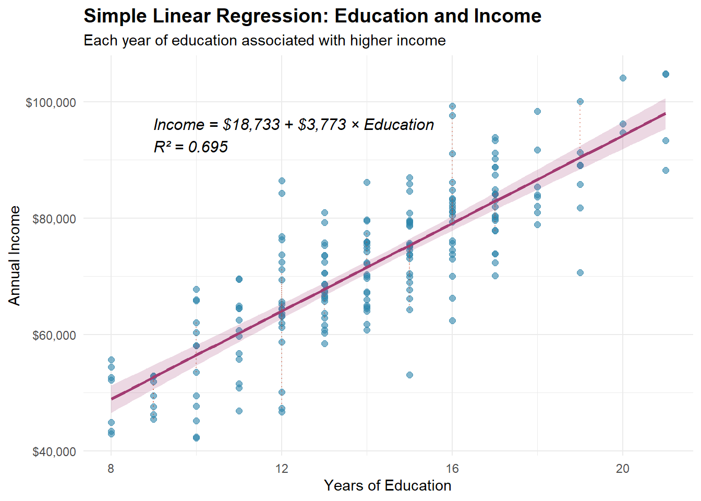
# ==================================================# 5. SAMPLING ERROR AND SAMPLE SIZE# ==================================================# Show how standard error decreases with sample sizeset.seed(111)sample_sizes <-c(10, 25, 50, 100, 250, 500, 1000, 2500, 5000)n_simulations <-1000# True population parameterstrue_mean <-50true_sd <-10# Run simulations for each sample sizese_results <-data.frame()for (n in sample_sizes) { sample_means <-replicate(n_simulations, mean(rnorm(n, true_mean, true_sd))) se_results <-rbind(se_results, data.frame(n = n, se_empirical =sd(sample_means),se_theoretical = true_sd /sqrt(n)))}# Create the plotse_plot <-ggplot(se_results, aes(x = n)) +geom_line(aes(y = se_empirical, color ="Empirical SE"), size =1.5) +geom_point(aes(y = se_empirical, color ="Empirical SE"), size =3) +geom_line(aes(y = se_theoretical, color ="Theoretical SE"), size =1.5, linetype ="dashed") +scale_x_log10(breaks = sample_sizes) +scale_color_manual(values =c("Empirical SE"= colors[1], "Theoretical SE"= colors[2])) +labs(title ="Standard Error Decreases with Sample Size",subtitle ="The precision of estimates improves with larger samples",x ="Sample Size (log scale)", y ="Standard Error",color ="") +theme(plot.title =element_text(face ="bold", size =14),legend.position ="top")print(se_plot)
# ==================================================# 6. CONFIDENCE INTERVALS VISUALIZATION# ==================================================# Simulate multiple samples and their confidence intervalsset.seed(999)n_samples <-20sample_size_ci <-100true_mean_ci <-50true_sd_ci <-10# Generate samples and calculate CIsci_data <-data.frame()for (i in1:n_samples) { sample_i <-rnorm(sample_size_ci, true_mean_ci, true_sd_ci) mean_i <-mean(sample_i) se_i <-sd(sample_i) /sqrt(sample_size_ci) ci_lower <- mean_i -1.96* se_i ci_upper <- mean_i +1.96* se_i contains_true <- (true_mean_ci >= ci_lower) & (true_mean_ci <= ci_upper) ci_data <-rbind(ci_data,data.frame(sample = i, mean = mean_i, lower = ci_lower, upper = ci_upper,contains = contains_true))}# Create CI plotci_plot <-ggplot(ci_data, aes(x = sample, y = mean)) +geom_hline(yintercept = true_mean_ci, color ="red", linetype ="dashed", size =1) +geom_errorbar(aes(ymin = lower, ymax = upper, color = contains), width =0.3, size =0.8) +geom_point(aes(color = contains), size =2) +scale_color_manual(values =c("TRUE"= colors[1], "FALSE"= colors[4]),labels =c("Misses true value", "Contains true value")) +coord_flip() +labs(title ="95% Confidence Intervals from 20 Different Samples",subtitle =paste("True population mean = ", true_mean_ci, " (red dashed line)", sep =""),x ="Sample Number", y ="Sample Mean with 95% CI",color ="") +theme(plot.title =element_text(face ="bold", size =14),legend.position ="bottom")print(ci_plot)
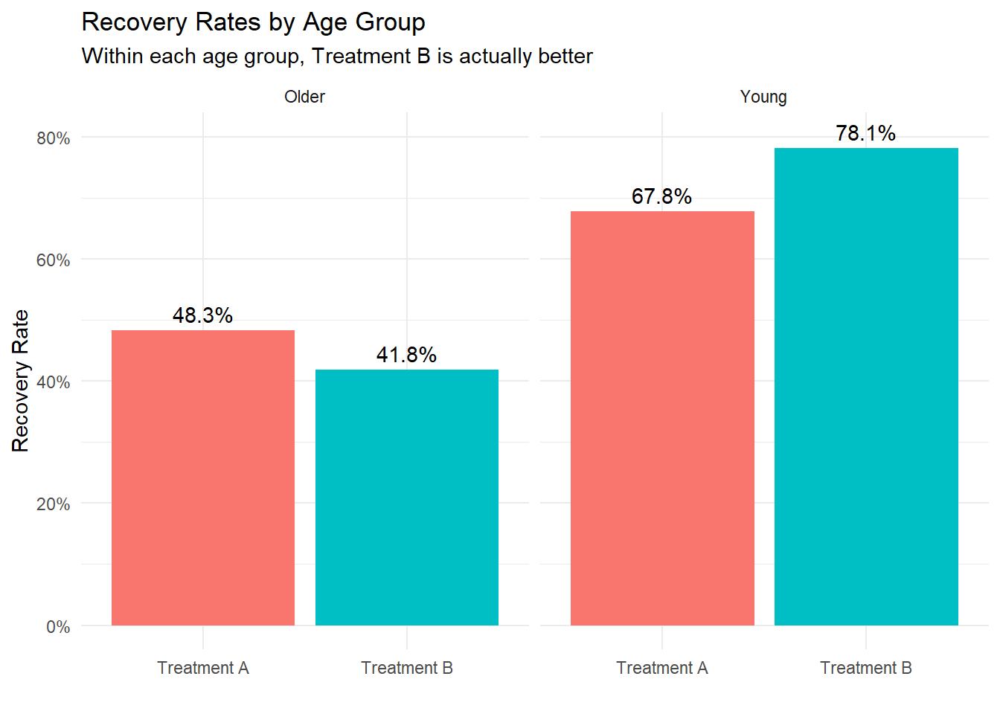
# ==================================================# 7. SAMPLING DISTRIBUTIONS (CENTRAL LIMIT THEOREM)# ==================================================# ---- Setup ----library(tidyverse)library(ggplot2)theme_set(theme_minimal(base_size =13))set.seed(2025)# Skewed population (Gamma); change if you want another DGPNpop <-100000population <-rgamma(Npop, shape =2, scale =10) # skewed rightmu <-mean(population)sigma <-sd(population)# ---- CLT: sampling distribution of the mean ----sample_sizes <-c(1, 5, 10, 30, 100)B <-2000# resamples per nclt_df <- purrr::map_dfr(sample_sizes, \(n) {tibble(n = n,mean =replicate(B, mean(sample(population, n, replace =TRUE))))})# Normal overlays: N(mu, sigma/sqrt(n))clt_range <- clt_df |>group_by(n) |>summarise(min_x =min(mean), max_x =max(mean), .groups ="drop")normal_df <- clt_range |>rowwise() |>mutate(x =list(seq(min_x, max_x, length.out =200))) |>unnest(x) |>mutate(density =dnorm(x, mean = mu, sd = sigma /sqrt(n)))clt_plot <-ggplot(clt_df, aes(mean)) +geom_histogram(aes(y =after_stat(density), fill =factor(n)),bins =30, alpha =0.6, color ="white") +geom_line(data = normal_df, aes(x, density), linewidth =0.8) +geom_vline(xintercept = mu, linetype ="dashed") +facet_wrap(~ n, scales ="free", ncol =3) +labs(title ="CLT: Sampling distribution of the mean → Normal(μ, σ/√n)",subtitle =sprintf("Skewed population: Gamma(shape=2, scale=10). μ≈%.2f, σ≈%.2f; B=%d resamples each.", mu, sigma, B),x ="Sample mean", y ="Density" ) +guides(fill ="none")clt_plot
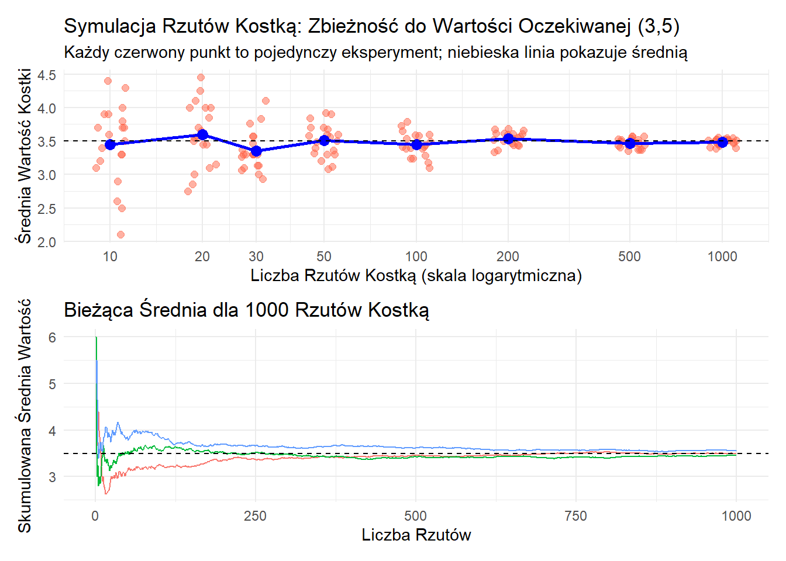
# ==================================================# 8. TYPES OF SAMPLING ERROR# ==================================================# Create data to show random vs systematic errorset.seed(321)n_measurements <-100true_value <-50# Random error onlyrandom_error <-rnorm(n_measurements, mean = true_value, sd =5)# Systematic error (bias) onlysystematic_error <-rep(true_value +10, n_measurements) +rnorm(n_measurements, 0, 0.5)# Both errorsboth_errors <-rnorm(n_measurements, mean = true_value +10, sd =5)error_data <-data.frame(measurement =1:n_measurements,`Random Error Only`= random_error,`Systematic Error Only`= systematic_error,`Both Errors`= both_errors) %>%pivot_longer(-measurement, names_to ="Error_Type", values_to ="Value")# Create error visualizationerror_plot <-ggplot(error_data, aes(x = measurement, y = Value, color = Error_Type)) +geom_hline(yintercept = true_value, linetype ="dashed", size =1, color ="black") +geom_point(alpha =0.6, size =1) +geom_smooth(method ="lm", se =FALSE, size =1.2) +facet_wrap(~Error_Type, nrow =1) +scale_color_manual(values = colors[1:3]) +labs(title ="Random Error vs Systematic Error (Bias)",subtitle =paste("True value = ", true_value, " (black dashed line)", sep =""),x ="Measurement Number", y ="Measured Value") +theme(plot.title =element_text(face ="bold", size =14),legend.position ="none")print(error_plot)
# ==================================================# 9. DEMOGRAPHIC PYRAMID# ==================================================# Create age pyramid dataset.seed(777)age_groups <-c("0-4", "5-9", "10-14", "15-19", "20-24", "25-29", "30-34", "35-39", "40-44", "45-49", "50-54", "55-59", "60-64", "65-69", "70-74", "75-79", "80+")# Create data for a developing country patternmale_pop <-c(12, 11.5, 11, 10.5, 10, 9.5, 9, 8.5, 8, 7.5, 7, 6, 5, 4, 3, 2, 1.5)female_pop <-c(11.8, 11.3, 10.8, 10.3, 9.8, 9.3, 8.8, 8.3, 7.8, 7.3, 6.8, 5.8, 4.8, 3.8, 2.8, 2.2, 2)pyramid_data <-data.frame(Age =factor(rep(age_groups, 2), levels =rev(age_groups)),Population =c(-male_pop, female_pop), # Negative for malesSex =c(rep("Male", length(male_pop)), rep("Female", length(female_pop))))# Create population pyramidpyramid_plot <-ggplot(pyramid_data, aes(x = Age, y = Population, fill = Sex)) +geom_bar(stat ="identity", width =1) +scale_y_continuous(labels =function(x) paste0(abs(x), "%")) +scale_fill_manual(values =c("Male"= colors[1], "Female"= colors[3])) +coord_flip() +labs(title ="Population Pyramid",subtitle ="Age and sex distribution (typical developing country pattern)",x ="Age Group", y ="Percentage of Population") +theme(plot.title =element_text(face ="bold", size =14),legend.position ="top")print(pyramid_plot)
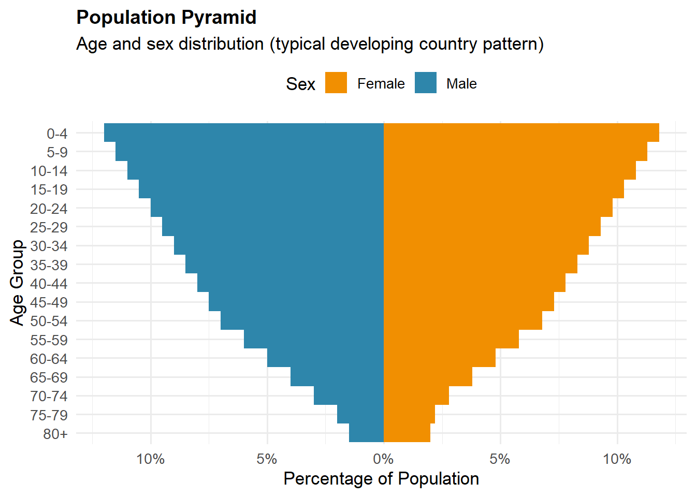
# ==================================================# 10. REGRESSION RESIDUALS AND DIAGNOSTICS# ==================================================# Use the previous regression model for diagnosticsreg_diagnostics <-data.frame(fitted =fitted(lm_model),residuals =residuals(lm_model),standardized_residuals =rstandard(lm_model),education = reg_data$education,income = reg_data$income)# Create diagnostic plots# 1. Residuals vs Fittedp_resid_fitted <-ggplot(reg_diagnostics, aes(x = fitted, y = residuals)) +geom_point(alpha =0.5, color = colors[1]) +geom_hline(yintercept =0, linetype ="dashed", color ="red") +geom_smooth(method ="loess", se =TRUE, color = colors[2], size =0.8) +labs(title ="Residuals vs Fitted Values",subtitle ="Check for homoscedasticity",x ="Fitted Values", y ="Residuals")# 2. Q-Q plotp_qq <-ggplot(reg_diagnostics, aes(sample = standardized_residuals)) +stat_qq(color = colors[1]) +stat_qq_line(color ="red", linetype ="dashed") +labs(title ="Normal Q-Q Plot",subtitle ="Check for normality of residuals",x ="Theoretical Quantiles", y ="Standardized Residuals")# 3. Histogram of residualsp_hist_resid <-ggplot(reg_diagnostics, aes(x = residuals)) +geom_histogram(bins =30, fill = colors[3], alpha =0.7, color ="white") +geom_vline(xintercept =0, color ="red", linetype ="dashed") +labs(title ="Distribution of Residuals",subtitle ="Should be approximately normal",x ="Residuals", y ="Frequency")# 4. Residuals vs Predictorp_resid_x <-ggplot(reg_diagnostics, aes(x = education, y = residuals)) +geom_point(alpha =0.5, color = colors[4]) +geom_hline(yintercept =0, linetype ="dashed", color ="red") +geom_smooth(method ="loess", se =TRUE, color = colors[2], size =0.8) +labs(title ="Residuals vs Predictor",subtitle ="Check for patterns",x ="Education (years)", y ="Residuals")# Combine diagnostic plotsdiagnostic_plots <- (p_resid_fitted + p_qq) / (p_hist_resid + p_resid_x)print(diagnostic_plots)
Centralne Twierdzenie Graniczne stwierdza, że rozkład średnich próbkowych zbliża się do rozkładu normalnego wraz ze wzrostem wielkości próby, niezależnie od kształtu pierwotnego rozkładu populacji.
Implikacje
Próg Wielkości Próby: Wielkość próby n ≥ 30 jest zazwyczaj wystarczająca, aby zastosować CTG
Błąd Standardowy: Odchylenie standardowe średnich próbkowych wynosi σ/√n, gdzie σ to odchylenie standardowe populacji
Fundament Wnioskowania Statystycznego: Możemy dokonywać wnioskowań o parametrach populacji używając właściwości rozkładu normalnego
2.26 Wizualna Demonstracja: Progresja Krok po Kroku
Najlepszym sposobem na zrozumienie CTG jest obserwowanie ewolucji rozkładu wraz ze wzrostem liczby kostek. Zaczynając od 1 kostki (rozkład jednostajny), zobaczymy, jak dodawanie kolejnych kostek stopniowo przekształca rozkład w idealną krzywą dzwonową!
library(ggplot2)library(dplyr)set.seed(123)
Progresywna Transformacja
# Wielkości próby do demonstracjiwielkosci_prob <-c(1, 2, 5, 10, 30, 50)liczba_symulacji <-100000# Symulacja dla każdej wielkości próbywszystkie_dane <-data.frame()for (n in wielkosci_prob) { srednie <-replicate(liczba_symulacji, { kostki <-sample(1:6, n, replace =TRUE)mean(kostki) }) temp_df <-data.frame(srednia = srednie,n = n,etykieta =paste(n, ifelse(n ==1, "kostka", ifelse(n <5, "kostki", "kostek"))) ) wszystkie_dane <-rbind(wszystkie_dane, temp_df)}# Utworzenie uporządkowanego czynnikawszystkie_dane$etykieta <-factor(wszystkie_dane$etykieta, levels =paste(wielkosci_prob, ifelse(wielkosci_prob ==1, "kostka",ifelse(wielkosci_prob <5, "kostki", "kostek"))))# Wykres progresjiggplot(wszystkie_dane, aes(x = srednia)) +geom_histogram(aes(y =after_stat(density)), bins =50, fill ="#3b82f6", color ="white", alpha =0.7) +facet_wrap(~etykieta, scales ="free", ncol =3) +labs(title ="Centralne Twierdzenie Graniczne: Progresja Krok po Kroku",subtitle =sprintf("Każdy panel pokazuje %s symulacji rzutu kostkami i obliczenia średniej", format(liczba_symulacji, big.mark =" ")),x ="Wartość Średnia",y ="Gęstość" ) +theme_minimal() +theme(plot.title =element_text(size =16, face ="bold"),plot.subtitle =element_text(size =11, color ="gray40"),strip.text =element_text(face ="bold", size =12),strip.background =element_rect(fill ="#f0f0f0", color =NA) )
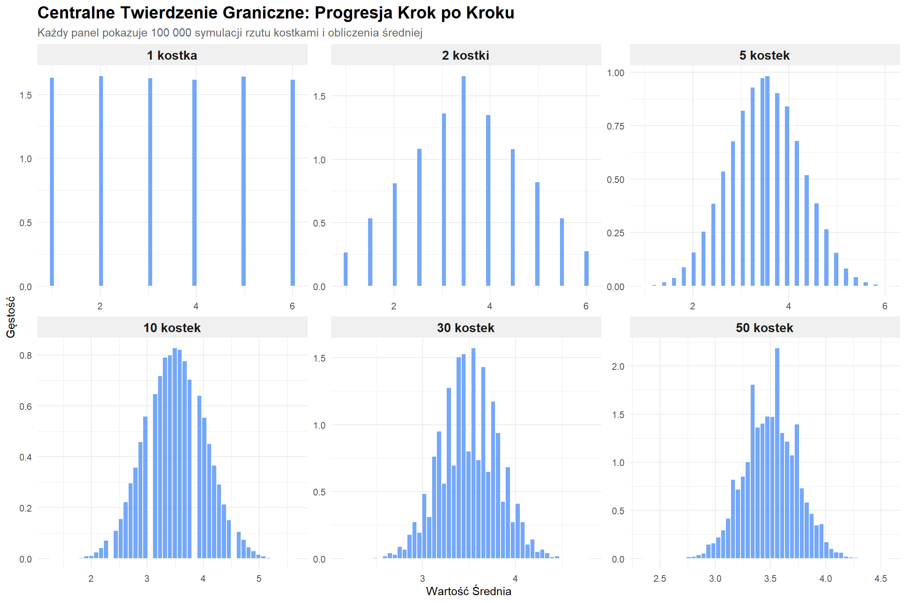
Analiza Poszczególnych Etapów:
1 kostka: Rozkład jednostajny (równomierny) - wszystkie wartości 1-6 jednakowo prawdopodobne
2 kostki: Rozkład z tendencją trójkątną - środkowe wartości występują częściej
5 kostek: Wyłaniający się kształt dzwonowy - obserwowalne skupienie wokół wartości 3,5
10 kostek: Wyraźnie normalny - formująca się wąska krzywa Gaussa
Inny sposób zobaczenia transformacji - wszystkie rozkłady na jednym wykresie:
dane_porownawcze <- wszystkie_dane %>%filter(n %in%c(1, 5, 10, 30))ggplot(dane_porownawcze, aes(x = srednia, fill = etykieta, color = etykieta)) +geom_density(alpha =0.3, linewidth =1.2) +scale_fill_manual(values =c("#991b1b", "#ea580c", "#ca8a04", "#16a34a")) +scale_color_manual(values =c("#991b1b", "#ea580c", "#ca8a04", "#16a34a")) +labs(title ="Progresja CTG: Nałożone Rozkłady",subtitle ="Analiza związku między wielkością próby a zmiennością rozkładu próbkowego",x ="Wartość Średnia",y ="Gęstość",fill ="Wielkość Próby",color ="Wielkość Próby" ) +theme_minimal() +theme(plot.title =element_text(size =14, face ="bold"),legend.position ="right" )
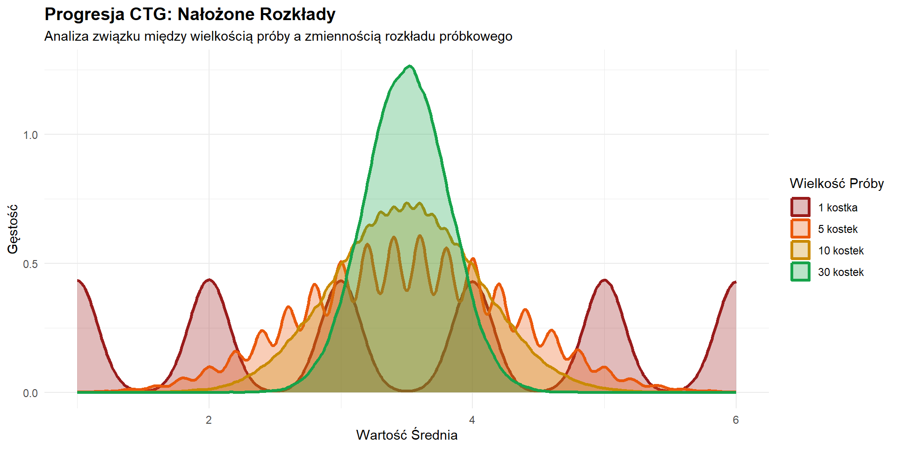
Kluczowa Obserwacja: Wraz ze wzrostem wielkości próby rozkład charakteryzuje się następującymi właściwościami:
Zwiększona symetria (kształt dzwonowy)
Większa koncentracja wokół wartości oczekiwanej (3,5)
Lepsza zgodność z rozkładem normalnym
Zbieżność Błędu Standardowego
Rozrzut (odchylenie standardowe) maleje zgodnie ze wzorem SE = σ/√n:
dane_wariancji <- wszystkie_dane %>%group_by(n, etykieta) %>%summarise(obserwowane_sd =sd(srednia),teoretyczne_se =sqrt(35/12) /sqrt(n),.groups ="drop" )ggplot(dane_wariancji, aes(x = n)) +geom_line(aes(y = obserwowane_sd, color ="Obserwowane SD"), linewidth =1.5) +geom_point(aes(y = obserwowane_sd, color ="Obserwowane SD"), size =4) +geom_line(aes(y = teoretyczne_se, color ="Teoretyczne SE"), linewidth =1.5, linetype ="dashed") +geom_point(aes(y = teoretyczne_se, color ="Teoretyczne SE"), size =4) +scale_color_manual(values =c("Obserwowane SD"="#3b82f6", "Teoretyczne SE"="#ef4444")) +scale_x_continuous(breaks = wielkosci_prob) +labs(title ="Błąd Standardowy Maleje wraz ze Wzrostem Wielkości Próby",subtitle ="Zgodnie ze związkiem SE = σ/√n",x ="Wielkość Próby (n)",y ="Odchylenie Standardowe / Błąd Standardowy",color =NULL ) +theme_minimal() +theme(plot.title =element_text(size =14, face ="bold"),legend.position ="top",legend.text =element_text(size =11) )
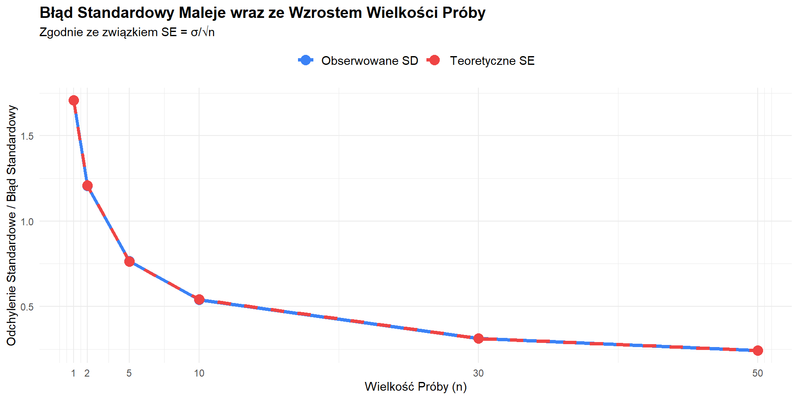
Podsumowanie Numeryczne
statystyki_podsumowanie <- wszystkie_dane %>%group_by(etykieta) %>%summarise(n =first(n),Obserwowana_Srednia =round(mean(srednia), 3),Obserwowane_SD =round(sd(srednia), 3),Teoretyczna_Srednia =3.5,Teoretyczne_SE =round(sqrt(35/12) /sqrt(first(n)), 3),Zakres =paste0("[", round(min(srednia), 2), ", ", round(max(srednia), 2), "]") ) %>%select(-etykieta)knitr::kable(statystyki_podsumowanie, caption ="Wartości Obserwowane vs Teoretyczne dla Różnych Wielkości Próby")
Wartości Obserwowane vs Teoretyczne dla Różnych Wielkości Próby
n
Obserwowana_Srednia
Obserwowane_SD
Teoretyczna_Srednia
Teoretyczne_SE
Zakres
1
3.495
1.707
3.5
1.708
[1, 6]
2
3.503
1.205
3.5
1.208
[1, 6]
5
3.500
0.765
3.5
0.764
[1, 6]
10
3.499
0.540
3.5
0.540
[1.3, 5.6]
30
3.501
0.313
3.5
0.312
[2.17, 4.77]
50
3.501
0.241
3.5
0.242
[2.36, 4.54]
Obserwacje:
Wartość oczekiwana pozostaje stała na poziomie 3,5 (niezależnie od wielkości próby)
Błąd standardowy wykazuje systematyczny spadek wraz ze wzrostem n (zgodnie ze związkiem SE ∝ 1/√n)
Rozstęp wartości ulega znacznemu zawężeniu wraz ze wzrostem wielkości próby
2.27 Podstawy Matematyczne
Dla populacji ze średnią μ i skończoną wariancją σ²:
\bar{X} \sim N\left(\mu, \frac{\sigma^2}{n}\right) \text{ gdy } n \to \infty
Błąd standardowy średniej:
SE_{\bar{X}} = \frac{\sigma}{\sqrt{n}}
Dla uczciwej kostki: μ = 3,5, σ² = 35/12 ≈ 2,917
2.28 Najważniejsze Wnioski
Punkt Wyjścia: Pojedyncza kostka charakteryzuje się rozkładem jednostajnym (równomiernym)
Stopniowa Transformacja: Wraz ze wzrostem liczby obserwacji kształt rozkładu stopniowo ewoluuje
Konwergencja do Normalności: Przy n=30 obserwujemy wyraźny rozkład normalny
Redukcja Zmienności: Rozkład charakteryzuje się coraz większą koncentracją wokół wartości oczekiwanej
Uniwersalność: Twierdzenie ma zastosowanie do każdego rozkładu populacji z skończoną wariancją
2.29 Dlaczego To Ma Znaczenie
Ta transformacja pozwala nam:
Używać tablic i właściwości rozkładu normalnego do wnioskowania
Obliczać przedziały ufności ze znanym prawdopodobieństwem
Przeprowadzać testy hipotez (testy t, testy z)
Dokonywać przewidywań dotyczących średnich próbkowych
Kluczowa właściwość CTG: Mimo że rozkład pojedynczych rzutów kostką jest jednostajny, rozkład średnich z wielu kostek zbliża się do rozkładu normalnego w sposób przewidywalny i zgodny z teorią matematyczną.